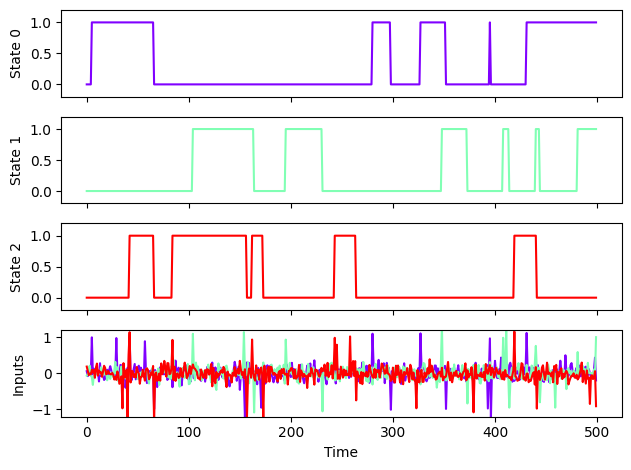
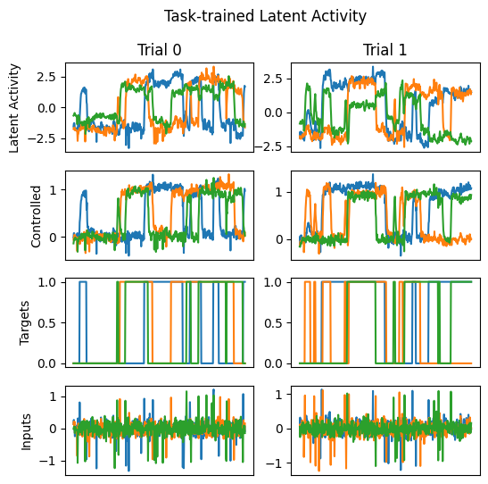
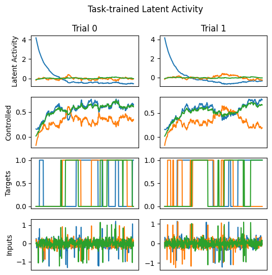
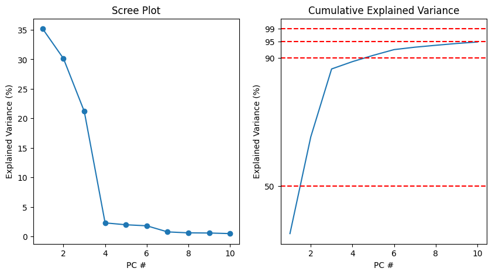
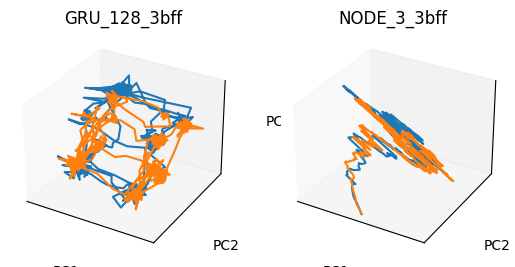
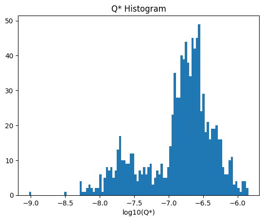
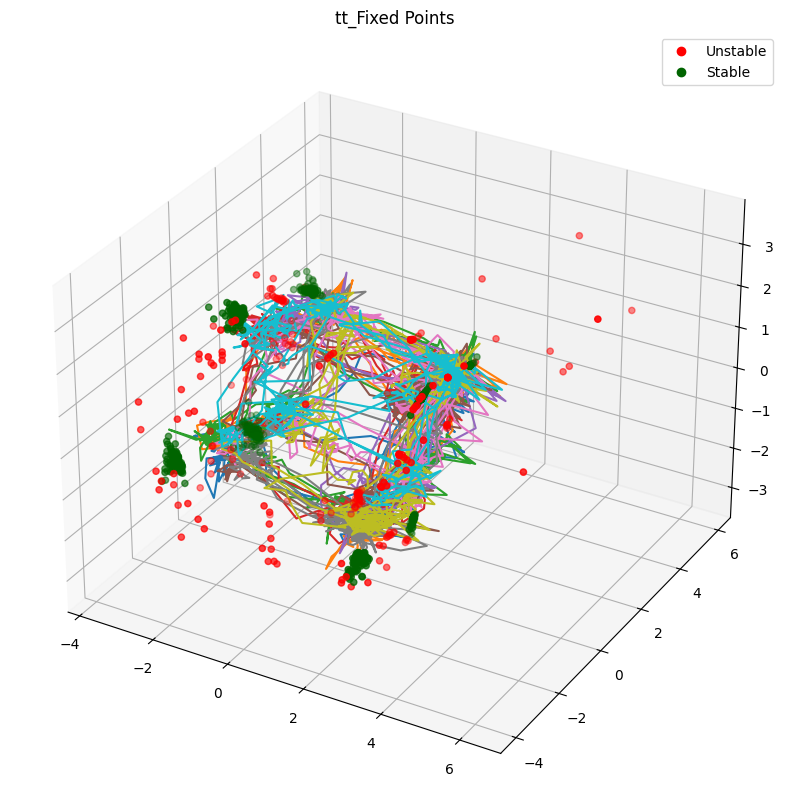
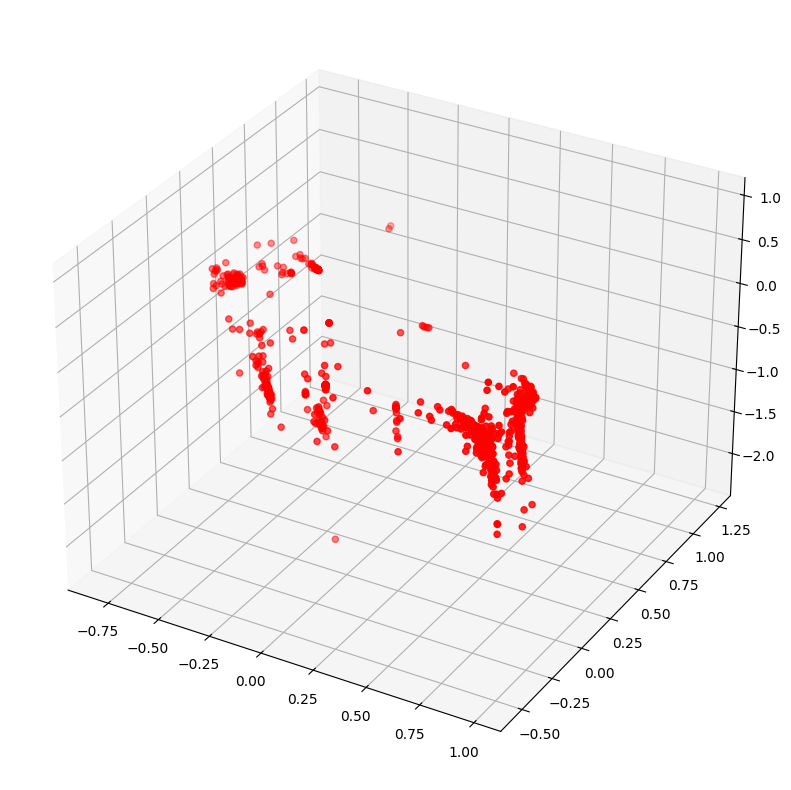

<!DOCTYPE html>

<html lang="en">
  <head>
    <meta charset="utf-8" />
    <meta name="viewport" content="width=device-width, initial-scale=1.0" /><meta name="generator" content="Docutils 0.18.1: http://docutils.sourceforge.net/" />

    <title>Comparing networks: characterizing computational similarity in task-trained recurrent neural networks &#8212; Neuromatch Academy: NeuroAI</title>
  
  
  
  <script data-cfasync="false">
    document.documentElement.dataset.mode = localStorage.getItem("mode") || "";
    document.documentElement.dataset.theme = localStorage.getItem("theme") || "light";
  </script>
  
  <!-- Loaded before other Sphinx assets -->
  <link href="../../_static/styles/theme.css?digest=796348d33e8b1d947c94" rel="stylesheet">
<link href="../../_static/styles/bootstrap.css?digest=796348d33e8b1d947c94" rel="stylesheet">
<link href="../../_static/styles/pydata-sphinx-theme.css?digest=796348d33e8b1d947c94" rel="stylesheet">

  
  <link href="../../_static/vendor/fontawesome/6.1.2/css/all.min.css?digest=796348d33e8b1d947c94" rel="stylesheet">
  <link rel="preload" as="font" type="font/woff2" crossorigin href="../../_static/vendor/fontawesome/6.1.2/webfonts/fa-solid-900.woff2">
<link rel="preload" as="font" type="font/woff2" crossorigin href="../../_static/vendor/fontawesome/6.1.2/webfonts/fa-brands-400.woff2">
<link rel="preload" as="font" type="font/woff2" crossorigin href="../../_static/vendor/fontawesome/6.1.2/webfonts/fa-regular-400.woff2">

    <link rel="stylesheet" type="text/css" href="../../_static/pygments.css" />
    <link rel="stylesheet" href="../../_static/styles/sphinx-book-theme.css?digest=4ec06e9971c5264fbd345897d5258098f11cc577" type="text/css" />
    <link rel="stylesheet" type="text/css" href="../../_static/togglebutton.css" />
    <link rel="stylesheet" type="text/css" href="../../_static/copybutton.css" />
    <link rel="stylesheet" type="text/css" href="../../_static/mystnb.4510f1fc1dee50b3e5859aac5469c37c29e427902b24a333a5f9fcb2f0b3ac41.css" />
    <link rel="stylesheet" type="text/css" href="../../_static/sphinx-thebe.css" />
    <link rel="stylesheet" type="text/css" href="../../_static/custom.css" />
    <link rel="stylesheet" type="text/css" href="../../_static/design-style.4045f2051d55cab465a707391d5b2007.min.css" />
  
  <!-- Pre-loaded scripts that we'll load fully later -->
  <link rel="preload" as="script" href="../../_static/scripts/bootstrap.js?digest=796348d33e8b1d947c94">
<link rel="preload" as="script" href="../../_static/scripts/pydata-sphinx-theme.js?digest=796348d33e8b1d947c94">

    <script data-url_root="../../" id="documentation_options" src="../../_static/documentation_options.js"></script>
    <script src="../../_static/jquery.js"></script>
    <script src="../../_static/underscore.js"></script>
    <script src="../../_static/_sphinx_javascript_frameworks_compat.js"></script>
    <script src="../../_static/doctools.js"></script>
    <script src="../../_static/clipboard.min.js"></script>
    <script src="../../_static/copybutton.js"></script>
    <script src="../../_static/scripts/sphinx-book-theme.js?digest=8bf782fb4ee92b3d3646425e50f299c4e1fd152d"></script>
    <script>let toggleHintShow = 'Click to show';</script>
    <script>let toggleHintHide = 'Click to hide';</script>
    <script>let toggleOpenOnPrint = 'true';</script>
    <script src="../../_static/togglebutton.js"></script>
    <script>var togglebuttonSelector = '.toggle, .admonition.dropdown';</script>
    <script src="../../_static/design-tabs.js"></script>
    <script>const THEBE_JS_URL = "https://unpkg.com/thebe@0.8.2/lib/index.js"
const thebe_selector = ".thebe,.cell"
const thebe_selector_input = "pre"
const thebe_selector_output = ".output, .cell_output"
</script>
    <script async="async" src="../../_static/sphinx-thebe.js"></script>
    <script>DOCUMENTATION_OPTIONS.pagename = 'projects/project-notebooks/ComparingNetworks';</script>
    <link rel="shortcut icon" href="../../_static/ai-logo.png"/>
    <link rel="index" title="Index" href="../../genindex.html" />
    <link rel="search" title="Search" href="../../search.html" />
    <link rel="next" title="Professional Development" href="../professional_development/README.html" />
    <link rel="prev" title="Microlearning: Credit assignment and local learning rules in artificial and neural systems" href="Microlearning.html" />
  <meta name="viewport" content="width=device-width, initial-scale=1" />
  <meta name="docsearch:language" content="en">
  </head>
  
  
  <body data-spy="scroll" data-target="#bd-toc-nav" data-offset="180" data-default-mode="">

  
  
  <a class="skip-link" href="#main-content">Skip to main content</a>

  
  <input type="checkbox" class="sidebar-toggle" name="__primary" id="__primary">
  <label class="overlay overlay-primary" for="__primary"></label>

  
  <input type="checkbox" class="sidebar-toggle" name="__secondary" id="__secondary">
  <label class="overlay overlay-secondary" for="__secondary"></label>

  
  <div class="search-button__wrapper">
    <div class="search-button__overlay"></div>
    <div class="search-button__search-container">
      
<form class="bd-search d-flex align-items-center" action="../../search.html" method="get">
  <i class="fa-solid fa-magnifying-glass"></i>
  <input type="search" class="form-control" name="q" id="search-input" placeholder="Search this book..." aria-label="Search this book..." autocomplete="off" autocorrect="off" autocapitalize="off" spellcheck="false">
  <span class="search-button__kbd-shortcut"><kbd class="kbd-shortcut__modifier">Ctrl</kbd>+<kbd>K</kbd></span>
</form>
    </div>
  </div>

  
  <nav class="bd-header navbar navbar-expand-lg bd-navbar" id="navbar-main"><div class="bd-header__inner bd-page-width">
  <label class="sidebar-toggle primary-toggle" for="__primary">
      <span class="fa-solid fa-bars"></span>
  </label>
  <div id="navbar-start">
    
    
  


<a class="navbar-brand logo" href="../../tutorials/intro.html">

  
  
  
  
  
  
  

  
    
    
  
  
</a>
    
  </div>

  
  <div class="col-lg-9 navbar-header-items">
    <div id="navbar-center" class="mr-auto">
      
      <div class="navbar-center-item">
        <nav class="navbar-nav">
    <p class="sidebar-header-items__title" role="heading" aria-level="1" aria-label="Site Navigation">
        Site Navigation
    </p>
    <ul id="navbar-main-elements" class="navbar-nav">
        
                    <li class="nav-item">
                      <a class="nav-link nav-internal" href="../../tutorials/Schedule/schedule_intro.html">
                        Schedule
                      </a>
                    </li>
                

                    <li class="nav-item">
                      <a class="nav-link nav-internal" href="../../tutorials/TechnicalHelp/tech_intro.html">
                        Technical Help
                      </a>
                    </li>
                

                    <li class="nav-item">
                      <a class="nav-link nav-internal" href="../../tutorials/TechnicalHelp/Links_Policy.html">
                        Quick links and policies
                      </a>
                    </li>
                

                    <li class="nav-item">
                      <a class="nav-link nav-internal" href="../../prereqs/NeuroAI.html">
                        Prerequisites and preparatory materials for NeuroAI course
                      </a>
                    </li>
                

                    <li class="nav-item">
                      <a class="nav-link nav-internal" href="../../tutorials/W1D1_Generalization/chapter_title.html">
                        Generalization (W1D1)
                      </a>
                    </li>
                
            <div class="nav-item dropdown">
                <button class="btn dropdown-toggle nav-item" type="button" data-toggle="dropdown" aria-haspopup="true" aria-expanded="false">
                    More
                </button>
                <div class="dropdown-menu">
                    
                    <li class="nav-item">
                      <a class="nav-link nav-internal" href="../../tutorials/W1D2_ComparingTasks/chapter_title.html">
                        Comparing Tasks (W1D2)
                      </a>
                    </li>
                

                    <li class="nav-item">
                      <a class="nav-link nav-internal" href="../../tutorials/W1D3_ComparingArtificialAndBiologicalNetworks/chapter_title.html">
                        Comparing Artificial And Biological Networks (W1D3)
                      </a>
                    </li>
                

                    <li class="nav-item">
                      <a class="nav-link nav-internal" href="../../tutorials/W1D5_Microcircuits/chapter_title.html">
                        Microcircuits (W1D5)
                      </a>
                    </li>
                

                    <li class="nav-item">
                      <a class="nav-link nav-internal" href="../../tutorials/W2D1_Macrocircuits/chapter_title.html">
                        Macrocircuits (W2D1)
                      </a>
                    </li>
                

                    <li class="nav-item">
                      <a class="nav-link nav-internal" href="../../tutorials/W2D2_NeuroSymbolicStructures/chapter_title.html">
                        Neuro Symbolic Structures (W2D2)
                      </a>
                    </li>
                

                    <li class="nav-item">
                      <a class="nav-link nav-internal" href="../../tutorials/W2D3_Microlearning/chapter_title.html">
                        Microlearning (W2D3)
                      </a>
                    </li>
                

                    <li class="nav-item">
                      <a class="nav-link nav-internal" href="../../tutorials/W2D4_Macrolearning/chapter_title.html">
                        Macrolearning (W2D4)
                      </a>
                    </li>
                

                    <li class="nav-item">
                      <a class="nav-link nav-internal" href="../../tutorials/W2D5_Mysteries/chapter_title.html">
                        Mysteries (W2D5)
                      </a>
                    </li>
                

                    <li class="nav-item">
                      <a class="nav-link nav-internal" href="../README.html">
                        Introduction
                      </a>
                    </li>
                

                    <li class="nav-item">
                      <a class="nav-link nav-internal" href="../docs/project_guidance.html">
                        Daily guide for projects
                      </a>
                    </li>
                

                    <li class="nav-item current active">
                      <a class="nav-link nav-internal" href="../docs/datasets_overview.html">
                        Project materials
                      </a>
                    </li>
                

                    <li class="nav-item">
                      <a class="nav-link nav-internal" href="../professional_development/README.html">
                        Introduction
                      </a>
                    </li>
                

                    <li class="nav-item">
                      <a class="nav-link nav-internal" href="../professional_development/impact_talks.html">
                        Impact Talks
                      </a>
                    </li>
                

                    <li class="nav-item">
                      <a class="nav-link nav-internal" href="../professional_development/mentorship_program.html">
                        Mentorship Program
                      </a>
                    </li>
                

                    <li class="nav-item">
                      <a class="nav-link nav-internal" href="../professional_development/career_features.html">
                        Career Features
                      </a>
                    </li>
                

                    <li class="nav-item">
                      <a class="nav-link nav-internal" href="../professional_development/career_panels.html">
                        Career Panels
                      </a>
                    </li>
                
                </div>
            </div>
            
    </ul>
</nav>
      </div>
      
    </div>

    <div id="navbar-end">
      
        <div class="navbar-end-item navbar-persistent--container">
          
<button class="btn btn-sm navbar-btn search-button search-button__button" title="Search" aria-label="Search" data-toggle="tooltip">
  <i class="fa-solid fa-magnifying-glass"></i>
</button>
        </div>
      
      
      <div class="navbar-end-item">
        <button class="theme-switch-button btn btn-sm btn-outline-primary navbar-btn rounded-circle" title="light/dark" aria-label="light/dark" data-toggle="tooltip">
    <span class="theme-switch" data-mode="light"><i class="fa-solid fa-sun"></i></span>
    <span class="theme-switch" data-mode="dark"><i class="fa-solid fa-moon"></i></span>
    <span class="theme-switch" data-mode="auto"><i class="fa-solid fa-circle-half-stroke"></i></span>
</button>
      </div>
      
      <div class="navbar-end-item">
        <ul id="navbar-icon-links" class="navbar-nav" aria-label="Icon Links">
      </ul>
      </div>
      
    </div>
  </div>


  
  
    <div class="navbar-persistent--mobile">
<button class="btn btn-sm navbar-btn search-button search-button__button" title="Search" aria-label="Search" data-toggle="tooltip">
  <i class="fa-solid fa-magnifying-glass"></i>
</button>
    </div>
  

  
  <label class="sidebar-toggle secondary-toggle" for="__secondary">
      <span class="fa-solid fa-outdent"></span>
  </label>
  

</div>
  </nav>
  

  <div class="bd-container">
    <div class="bd-container__inner bd-page-width">
      
      <div class="bd-sidebar-primary bd-sidebar">
        
  
  <div class="sidebar-header-items sidebar-primary__section">
    
    
      <div class="sidebar-header-items__center">
      
      <div class="navbar-center-item">
        <nav class="navbar-nav">
    <p class="sidebar-header-items__title" role="heading" aria-level="1" aria-label="Site Navigation">
        Site Navigation
    </p>
    <ul id="navbar-main-elements" class="navbar-nav">
        
                    <li class="nav-item">
                      <a class="nav-link nav-internal" href="../../tutorials/Schedule/schedule_intro.html">
                        Schedule
                      </a>
                    </li>
                

                    <li class="nav-item">
                      <a class="nav-link nav-internal" href="../../tutorials/TechnicalHelp/tech_intro.html">
                        Technical Help
                      </a>
                    </li>
                

                    <li class="nav-item">
                      <a class="nav-link nav-internal" href="../../tutorials/TechnicalHelp/Links_Policy.html">
                        Quick links and policies
                      </a>
                    </li>
                

                    <li class="nav-item">
                      <a class="nav-link nav-internal" href="../../prereqs/NeuroAI.html">
                        Prerequisites and preparatory materials for NeuroAI course
                      </a>
                    </li>
                

                    <li class="nav-item">
                      <a class="nav-link nav-internal" href="../../tutorials/W1D1_Generalization/chapter_title.html">
                        Generalization (W1D1)
                      </a>
                    </li>
                
            <div class="nav-item dropdown">
                <button class="btn dropdown-toggle nav-item" type="button" data-toggle="dropdown" aria-haspopup="true" aria-expanded="false">
                    More
                </button>
                <div class="dropdown-menu">
                    
                    <li class="nav-item">
                      <a class="nav-link nav-internal" href="../../tutorials/W1D2_ComparingTasks/chapter_title.html">
                        Comparing Tasks (W1D2)
                      </a>
                    </li>
                

                    <li class="nav-item">
                      <a class="nav-link nav-internal" href="../../tutorials/W1D3_ComparingArtificialAndBiologicalNetworks/chapter_title.html">
                        Comparing Artificial And Biological Networks (W1D3)
                      </a>
                    </li>
                

                    <li class="nav-item">
                      <a class="nav-link nav-internal" href="../../tutorials/W1D5_Microcircuits/chapter_title.html">
                        Microcircuits (W1D5)
                      </a>
                    </li>
                

                    <li class="nav-item">
                      <a class="nav-link nav-internal" href="../../tutorials/W2D1_Macrocircuits/chapter_title.html">
                        Macrocircuits (W2D1)
                      </a>
                    </li>
                

                    <li class="nav-item">
                      <a class="nav-link nav-internal" href="../../tutorials/W2D2_NeuroSymbolicStructures/chapter_title.html">
                        Neuro Symbolic Structures (W2D2)
                      </a>
                    </li>
                

                    <li class="nav-item">
                      <a class="nav-link nav-internal" href="../../tutorials/W2D3_Microlearning/chapter_title.html">
                        Microlearning (W2D3)
                      </a>
                    </li>
                

                    <li class="nav-item">
                      <a class="nav-link nav-internal" href="../../tutorials/W2D4_Macrolearning/chapter_title.html">
                        Macrolearning (W2D4)
                      </a>
                    </li>
                

                    <li class="nav-item">
                      <a class="nav-link nav-internal" href="../../tutorials/W2D5_Mysteries/chapter_title.html">
                        Mysteries (W2D5)
                      </a>
                    </li>
                

                    <li class="nav-item">
                      <a class="nav-link nav-internal" href="../README.html">
                        Introduction
                      </a>
                    </li>
                

                    <li class="nav-item">
                      <a class="nav-link nav-internal" href="../docs/project_guidance.html">
                        Daily guide for projects
                      </a>
                    </li>
                

                    <li class="nav-item current active">
                      <a class="nav-link nav-internal" href="../docs/datasets_overview.html">
                        Project materials
                      </a>
                    </li>
                

                    <li class="nav-item">
                      <a class="nav-link nav-internal" href="../professional_development/README.html">
                        Introduction
                      </a>
                    </li>
                

                    <li class="nav-item">
                      <a class="nav-link nav-internal" href="../professional_development/impact_talks.html">
                        Impact Talks
                      </a>
                    </li>
                

                    <li class="nav-item">
                      <a class="nav-link nav-internal" href="../professional_development/mentorship_program.html">
                        Mentorship Program
                      </a>
                    </li>
                

                    <li class="nav-item">
                      <a class="nav-link nav-internal" href="../professional_development/career_features.html">
                        Career Features
                      </a>
                    </li>
                

                    <li class="nav-item">
                      <a class="nav-link nav-internal" href="../professional_development/career_panels.html">
                        Career Panels
                      </a>
                    </li>
                
                </div>
            </div>
            
    </ul>
</nav>
      </div>
      
      </div>
    

    
    
    <div class="sidebar-header-items__end">
      
      <div class="navbar-end-item">
        <button class="theme-switch-button btn btn-sm btn-outline-primary navbar-btn rounded-circle" title="light/dark" aria-label="light/dark" data-toggle="tooltip">
    <span class="theme-switch" data-mode="light"><i class="fa-solid fa-sun"></i></span>
    <span class="theme-switch" data-mode="dark"><i class="fa-solid fa-moon"></i></span>
    <span class="theme-switch" data-mode="auto"><i class="fa-solid fa-circle-half-stroke"></i></span>
</button>
      </div>
      
      <div class="navbar-end-item">
        <ul id="navbar-icon-links" class="navbar-nav" aria-label="Icon Links">
      </ul>
      </div>
      
    </div>
    
  </div>

  
  <div class="sidebar-start-items sidebar-primary__section">
    <div class="sidebar-start-items__item">
  


<a class="navbar-brand logo" href="../../tutorials/intro.html">

  
  
  
  
  
  
  

  
    
    
  
  
</a>
    </div>
    <div class="sidebar-start-items__item">
<form class="bd-search d-flex align-items-center" action="../../search.html" method="get">
  <i class="fa-solid fa-magnifying-glass"></i>
  <input type="search" class="form-control" name="q" id="search-input" placeholder="Search this book..." aria-label="Search this book..." autocomplete="off" autocorrect="off" autocapitalize="off" spellcheck="false">
  <span class="search-button__kbd-shortcut"><kbd class="kbd-shortcut__modifier">Ctrl</kbd>+<kbd>K</kbd></span>
</form>
    </div>
    <div class="sidebar-start-items__item"><nav class="bd-links" id="bd-docs-nav" aria-label="Main">
    <div class="bd-toc-item navbar-nav active">
        
        <ul class="nav bd-sidenav bd-sidenav__home-link">
            <li class="toctree-l1">
                <a class="reference internal" href="../../tutorials/intro.html">
                    Introduction
                </a>
            </li>
        </ul>
        <ul class="nav bd-sidenav">
<li class="toctree-l1 has-children"><a class="reference internal" href="../../tutorials/Schedule/schedule_intro.html">Schedule</a><input class="toctree-checkbox" id="toctree-checkbox-1" name="toctree-checkbox-1" type="checkbox"/><label class="toctree-toggle" for="toctree-checkbox-1"><i class="fa-solid fa-chevron-down"></i></label><ul>
<li class="toctree-l2"><a class="reference internal" href="../../tutorials/Schedule/daily_schedules.html">General schedule</a></li>
<li class="toctree-l2"><a class="reference internal" href="../../tutorials/Schedule/shared_calendars.html">Shared calendars</a></li>
<li class="toctree-l2"><a class="reference internal" href="../../tutorials/Schedule/timezone_widget.html">Timezone widget</a></li>
</ul>
</li>
</ul>
<ul class="nav bd-sidenav">
<li class="toctree-l1 has-children"><a class="reference internal" href="../../tutorials/TechnicalHelp/tech_intro.html">Technical Help</a><input class="toctree-checkbox" id="toctree-checkbox-2" name="toctree-checkbox-2" type="checkbox"/><label class="toctree-toggle" for="toctree-checkbox-2"><i class="fa-solid fa-chevron-down"></i></label><ul>
<li class="toctree-l2 has-children"><a class="reference internal" href="../../tutorials/TechnicalHelp/Jupyterbook.html">Using jupyterbook</a><input class="toctree-checkbox" id="toctree-checkbox-3" name="toctree-checkbox-3" type="checkbox"/><label class="toctree-toggle" for="toctree-checkbox-3"><i class="fa-solid fa-chevron-down"></i></label><ul>
<li class="toctree-l3"><a class="reference internal" href="../../tutorials/TechnicalHelp/Tutorial_colab.html">Using Google Colab</a></li>
<li class="toctree-l3"><a class="reference internal" href="../../tutorials/TechnicalHelp/Tutorial_kaggle.html">Using Kaggle</a></li>
</ul>
</li>
<li class="toctree-l2"><a class="reference internal" href="../../tutorials/TechnicalHelp/Discord.html">Using discord</a></li>
</ul>
</li>
</ul>
<ul class="nav bd-sidenav">
<li class="toctree-l1"><a class="reference internal" href="../../tutorials/TechnicalHelp/Links_Policy.html">Quick links and policies</a></li>
</ul>
<ul class="nav bd-sidenav">
<li class="toctree-l1"><a class="reference internal" href="../../prereqs/NeuroAI.html">Prerequisites and preparatory materials for NeuroAI course</a></li>
</ul>
<p aria-level="2" class="caption" role="heading"><span class="caption-text">Foundations</span></p>
<ul class="nav bd-sidenav">
<li class="toctree-l1 has-children"><a class="reference internal" href="../../tutorials/W1D1_Generalization/chapter_title.html">Generalization (W1D1)</a><input class="toctree-checkbox" id="toctree-checkbox-4" name="toctree-checkbox-4" type="checkbox"/><label class="toctree-toggle" for="toctree-checkbox-4"><i class="fa-solid fa-chevron-down"></i></label><ul>
<li class="toctree-l2"><a class="reference internal" href="../../tutorials/W1D1_Generalization/student/W1D1_Intro.html">W1D1 Intro</a></li>
<li class="toctree-l2"><a class="reference internal" href="../../tutorials/W1D1_Generalization/student/W1D1_Tutorial1.html">Tutorial 1: Generalization in AI</a></li>


<li class="toctree-l2"><a class="reference internal" href="../../tutorials/W1D1_Generalization/student/W1D1_Tutorial2.html">Tutorial 2: Generalization in Neuroscience</a></li>


<li class="toctree-l2"><a class="reference internal" href="../../tutorials/W1D1_Generalization/student/W1D1_Tutorial3.html">Tutorial 3: Generalization in Cognitive Science</a></li>


<li class="toctree-l2"><a class="reference internal" href="../../tutorials/W1D1_Generalization/student/W1D1_Outro.html">Outro</a></li>
<li class="toctree-l2"><a class="reference internal" href="../../tutorials/W1D1_Generalization/student/W1D1_DaySummary.html">Day Summary</a></li>
</ul>
</li>
<li class="toctree-l1 has-children"><a class="reference internal" href="../../tutorials/W1D2_ComparingTasks/chapter_title.html">Comparing Tasks (W1D2)</a><input class="toctree-checkbox" id="toctree-checkbox-5" name="toctree-checkbox-5" type="checkbox"/><label class="toctree-toggle" for="toctree-checkbox-5"><i class="fa-solid fa-chevron-down"></i></label><ul>
<li class="toctree-l2"><a class="reference internal" href="../../tutorials/W1D2_ComparingTasks/student/W1D2_Intro.html">W1D2 Intro</a></li>
<li class="toctree-l2"><a class="reference internal" href="../../tutorials/W1D2_ComparingTasks/student/W1D2_Tutorial1.html"><strong>Tutorial 1:Task definition, application, relations and impacts on generalization</strong></a></li>


<li class="toctree-l2"><a class="reference internal" href="../../tutorials/W1D2_ComparingTasks/student/W1D2_Tutorial2.html">Tutorial 2: Contrastive learning for object recognition</a></li>


<li class="toctree-l2"><a class="reference internal" href="../../tutorials/W1D2_ComparingTasks/student/W1D2_Tutorial3.html">Tutorial 3: Reinforcement learning across temporal scales</a></li>


<li class="toctree-l2"><a class="reference internal" href="../../tutorials/W1D2_ComparingTasks/student/W1D2_Outro.html">W1D2 Outro</a></li>
<li class="toctree-l2"><a class="reference internal" href="../../tutorials/W1D2_ComparingTasks/student/W1D2_DaySummary.html">W1D1 Day Summary</a></li>
</ul>
</li>
<li class="toctree-l1 has-children"><a class="reference internal" href="../../tutorials/W1D3_ComparingArtificialAndBiologicalNetworks/chapter_title.html">Comparing Artificial And Biological Networks (W1D3)</a><input class="toctree-checkbox" id="toctree-checkbox-6" name="toctree-checkbox-6" type="checkbox"/><label class="toctree-toggle" for="toctree-checkbox-6"><i class="fa-solid fa-chevron-down"></i></label><ul>
<li class="toctree-l2"><a class="reference internal" href="../../tutorials/W1D3_ComparingArtificialAndBiologicalNetworks/student/W1D3_Tutorial1.html">Tutorial 1: Generalization and representational geometry</a></li>


<li class="toctree-l2"><a class="reference internal" href="../../tutorials/W1D3_ComparingArtificialAndBiologicalNetworks/student/W1D3_Tutorial2.html">Tutorial 2: Computation as transformation of representational geometries</a></li>


<li class="toctree-l2"><a class="reference internal" href="../../tutorials/W1D3_ComparingArtificialAndBiologicalNetworks/student/W1D3_Tutorial3.html">Tutorial 3: Representational geometry &amp; noise</a></li>


<li class="toctree-l2"><a class="reference internal" href="../../tutorials/W1D3_ComparingArtificialAndBiologicalNetworks/student/W1D3_Tutorial4.html">Tutorial 4: Statistical inference on representational geometries</a></li>


</ul>
</li>
</ul>
<p aria-level="2" class="caption" role="heading"><span class="caption-text">Architectures</span></p>
<ul class="nav bd-sidenav">
<li class="toctree-l1 has-children"><a class="reference internal" href="../../tutorials/W1D5_Microcircuits/chapter_title.html">Microcircuits (W1D5)</a><input class="toctree-checkbox" id="toctree-checkbox-7" name="toctree-checkbox-7" type="checkbox"/><label class="toctree-toggle" for="toctree-checkbox-7"><i class="fa-solid fa-chevron-down"></i></label><ul>
<li class="toctree-l2"><a class="reference internal" href="../../tutorials/W1D5_Microcircuits/student/W1D5_Intro.html">Intro</a></li>
<li class="toctree-l2"><a class="reference internal" href="../../tutorials/W1D5_Microcircuits/student/W1D5_Tutorial1.html">Tutorial 1: Sparsity and Sparse Coding</a></li>


<li class="toctree-l2"><a class="reference internal" href="../../tutorials/W1D5_Microcircuits/student/W1D5_Tutorial2.html">Tutorial 2: Normalization</a></li>


<li class="toctree-l2"><a class="reference internal" href="../../tutorials/W1D5_Microcircuits/student/W1D5_Tutorial3.html">Tutorial 3: Attention</a></li>


<li class="toctree-l2"><a class="reference internal" href="../../tutorials/W1D5_Microcircuits/student/W1D5_Outro.html">Outro</a></li>
<li class="toctree-l2"><a class="reference internal" href="../../tutorials/W1D5_Microcircuits/student/W1D5_DaySummary.html">Day Summary</a></li>
</ul>
</li>
<li class="toctree-l1 has-children"><a class="reference internal" href="../../tutorials/W2D1_Macrocircuits/chapter_title.html">Macrocircuits (W2D1)</a><input class="toctree-checkbox" id="toctree-checkbox-8" name="toctree-checkbox-8" type="checkbox"/><label class="toctree-toggle" for="toctree-checkbox-8"><i class="fa-solid fa-chevron-down"></i></label><ul>
<li class="toctree-l2"><a class="reference internal" href="../../tutorials/W2D1_Macrocircuits/student/W2D1_Intro.html">Intro</a></li>
<li class="toctree-l2"><a class="reference internal" href="../../tutorials/W2D1_Macrocircuits/student/W2D1_Tutorial1.html">Tutorial 1: Depth vs Width</a></li>


<li class="toctree-l2"><a class="reference internal" href="../../tutorials/W2D1_Macrocircuits/student/W2D1_Outro.html">Outro</a></li>
<li class="toctree-l2"><a class="reference internal" href="../../tutorials/W2D1_Macrocircuits/further_reading.html">Suggested further readings</a></li>
<li class="toctree-l2"><a class="reference internal" href="../../tutorials/W2D1_Macrocircuits/student/W2D1_DaySummary.html">Day Summary</a></li>
</ul>
</li>
<li class="toctree-l1 has-children"><a class="reference internal" href="../../tutorials/W2D2_NeuroSymbolicStructures/chapter_title.html">Neuro Symbolic Structures (W2D2)</a><input class="toctree-checkbox" id="toctree-checkbox-9" name="toctree-checkbox-9" type="checkbox"/><label class="toctree-toggle" for="toctree-checkbox-9"><i class="fa-solid fa-chevron-down"></i></label><ul>
<li class="toctree-l2"><a class="reference internal" href="../../tutorials/W2D2_NeuroSymbolicStructures/student/W2D2_Intro.html">Intro</a></li>
<li class="toctree-l2"><a class="reference internal" href="../../tutorials/W2D2_NeuroSymbolicStructures/student/W2D2_Tutorial1.html">Tutorial 1: Basic operations of vector symbolic algebra</a></li>


<li class="toctree-l2"><a class="reference internal" href="../../tutorials/W2D2_NeuroSymbolicStructures/student/W2D2_Tutorial2.html">Tutorial 2: Learning from structures</a></li>


<li class="toctree-l2"><a class="reference internal" href="../../tutorials/W2D2_NeuroSymbolicStructures/student/W2D2_Tutorial3.html">Tutorial 3: Generalizing representations in continuous space</a></li>


<li class="toctree-l2"><a class="reference internal" href="../../tutorials/W2D2_NeuroSymbolicStructures/student/W2D2_Outro.html">Outro</a></li>
<li class="toctree-l2"><a class="reference internal" href="../../tutorials/W2D2_NeuroSymbolicStructures/further_reading.html">Suggested further readings</a></li>
<li class="toctree-l2"><a class="reference internal" href="../../tutorials/W2D2_NeuroSymbolicStructures/student/W2D2_DaySummary.html">Day Summary</a></li>
</ul>
</li>
</ul>
<p aria-level="2" class="caption" role="heading"><span class="caption-text">Learning</span></p>
<ul class="nav bd-sidenav">
<li class="toctree-l1 has-children"><a class="reference internal" href="../../tutorials/W2D3_Microlearning/chapter_title.html">Microlearning (W2D3)</a><input class="toctree-checkbox" id="toctree-checkbox-10" name="toctree-checkbox-10" type="checkbox"/><label class="toctree-toggle" for="toctree-checkbox-10"><i class="fa-solid fa-chevron-down"></i></label><ul>
<li class="toctree-l2"><a class="reference internal" href="../../tutorials/W2D3_Microlearning/student/W2D3_Intro.html">Intro</a></li>
<li class="toctree-l2"><a class="reference internal" href="../../tutorials/W2D3_Microlearning/student/W2D3_Tutorial1.html">Tutorial 1: Microlearning</a></li>


<li class="toctree-l2"><a class="reference internal" href="../../tutorials/W2D3_Microlearning/student/W2D3_Outro.html">Outro</a></li>
<li class="toctree-l2"><a class="reference internal" href="../../tutorials/W2D3_Microlearning/further_reading.html">Suggested further readings</a></li>
<li class="toctree-l2"><a class="reference internal" href="../../tutorials/W2D3_Microlearning/student/W2D3_DaySummary.html">Day Summary</a></li>
</ul>
</li>
<li class="toctree-l1 has-children"><a class="reference internal" href="../../tutorials/W2D4_Macrolearning/chapter_title.html">Macrolearning (W2D4)</a><input class="toctree-checkbox" id="toctree-checkbox-11" name="toctree-checkbox-11" type="checkbox"/><label class="toctree-toggle" for="toctree-checkbox-11"><i class="fa-solid fa-chevron-down"></i></label><ul>
<li class="toctree-l2"><a class="reference internal" href="../../tutorials/W2D4_Macrolearning/student/W2D4_Intro.html">Intro</a></li>
<li class="toctree-l2"><a class="reference internal" href="../../tutorials/W2D4_Macrolearning/student/W2D4_Tutorial1.html">Tutorial 1: The problem of changing data distributions</a></li>


<li class="toctree-l2"><a class="reference internal" href="../../tutorials/W2D4_Macrolearning/student/W2D4_Tutorial2.html">Tutorial 2: Continual learning</a></li>


<li class="toctree-l2"><a class="reference internal" href="../../tutorials/W2D4_Macrolearning/student/W2D4_Tutorial3.html">Tutorial 3: Meta-learning</a></li>


<li class="toctree-l2"><a class="reference internal" href="../../tutorials/W2D4_Macrolearning/student/W2D4_Tutorial4.html">Tutorial 4: Biological meta reinforcement learning</a></li>


<li class="toctree-l2"><a class="reference internal" href="../../tutorials/W2D4_Macrolearning/student/W2D4_Tutorial5.html">Tutorial 5: Replay</a></li>


<li class="toctree-l2"><a class="reference internal" href="../../tutorials/W2D4_Macrolearning/student/W2D4_Outro.html">Outro</a></li>
<li class="toctree-l2"><a class="reference internal" href="../../tutorials/W2D4_Macrolearning/further_reading.html">Suggested further readings</a></li>
<li class="toctree-l2"><a class="reference internal" href="../../tutorials/W2D4_Macrolearning/student/W2D4_DaySummary.html">Day Summary</a></li>
</ul>
</li>
</ul>
<p aria-level="2" class="caption" role="heading"><span class="caption-text">Mysteries</span></p>
<ul class="nav bd-sidenav">
<li class="toctree-l1 has-children"><a class="reference internal" href="../../tutorials/W2D5_Mysteries/chapter_title.html">Mysteries (W2D5)</a><input class="toctree-checkbox" id="toctree-checkbox-12" name="toctree-checkbox-12" type="checkbox"/><label class="toctree-toggle" for="toctree-checkbox-12"><i class="fa-solid fa-chevron-down"></i></label><ul>
<li class="toctree-l2"><a class="reference internal" href="../../tutorials/W2D5_Mysteries/student/W2D5_Intro.html">Intro</a></li>
<li class="toctree-l2"><a class="reference internal" href="../../tutorials/W2D5_Mysteries/student/W2D5_Tutorial1.html">Tutorial 1: Consciousness</a></li>


<li class="toctree-l2"><a class="reference internal" href="../../tutorials/W2D5_Mysteries/student/W2D5_Tutorial2.html">Tutorial 2: Ethics</a></li>


<li class="toctree-l2"><a class="reference internal" href="../../tutorials/W2D5_Mysteries/student/W2D5_Outro.html">Outro</a></li>
<li class="toctree-l2"><a class="reference internal" href="../../tutorials/W2D5_Mysteries/further_reading.html">Suggested further readings</a></li>
<li class="toctree-l2"><a class="reference internal" href="../../tutorials/W2D5_Mysteries/student/W2D5_DaySummary.html">Day Summary</a></li>
</ul>
</li>
</ul>
<p aria-level="2" class="caption" role="heading"><span class="caption-text">Project Booklet</span></p>
<ul class="current nav bd-sidenav">
<li class="toctree-l1"><a class="reference internal" href="../README.html">Introduction</a></li>
<li class="toctree-l1"><a class="reference internal" href="../docs/project_guidance.html">Daily guide for projects</a></li>
<li class="toctree-l1 current active has-children"><a class="reference internal" href="../docs/datasets_overview.html">Project materials</a><input checked="" class="toctree-checkbox" id="toctree-checkbox-13" name="toctree-checkbox-13" type="checkbox"/><label class="toctree-toggle" for="toctree-checkbox-13"><i class="fa-solid fa-chevron-down"></i></label><ul class="current">
<li class="toctree-l2"><a class="reference internal" href="Microlearning.html">Microlearning</a></li>
<li class="toctree-l2 current active"><a class="current reference internal" href="#">Comparing networks: characterizing computational similarity in task-trained recurrent neural networks</a></li>


</ul>
</li>
</ul>
<p aria-level="2" class="caption" role="heading"><span class="caption-text">Professional Development</span></p>
<ul class="nav bd-sidenav">
<li class="toctree-l1"><a class="reference internal" href="../professional_development/README.html">Introduction</a></li>
<li class="toctree-l1"><a class="reference internal" href="../professional_development/impact_talks.html">Impact Talks</a></li>
<li class="toctree-l1"><a class="reference internal" href="../professional_development/mentorship_program.html">Professional developemnt</a></li>


<li class="toctree-l1"><a class="reference internal" href="../professional_development/career_features.html">Career Features</a></li>
<li class="toctree-l1"><a class="reference internal" href="../professional_development/career_panels.html">Career Panels</a></li>
</ul>

    </div>
</nav>
    </div>
  </div>
  

  
  <div class="sidebar-end-items sidebar-primary__section">
    <div class="sidebar-end-items__item">
    </div>
  </div>

  
  <div id="rtd-footer-container"></div>

      </div>
      <main id="main-content" class="bd-main">
        
        

<div class="sbt-scroll-pixel-helper"></div>

        <div class="bd-content">
          <div class="bd-article-container">
            
            <div class="bd-header-article">
                


<div class="col py-1 d-flex header-article-main">
    <div class="header-article__left">
        <label class="sidebar-toggle primary-toggle btn btn-sm" for="__primary" data-toggle="tooltip" data-placement="right" title="Toggle primary sidebar">
            <span class="fa-solid fa-bars"></span>
        </label>
    </div>
    <div class="header-article__right">


<div class="dropdown dropdown-launch-buttons">
  <button class="btn dropdown-toggle" type="button" data-bs-toggle="dropdown" aria-expanded="false" aria-label="Launch interactive content">
    <i class="fas fa-rocket"></i>
  </button>
  <ul class="dropdown-menu">
  </ul>
</div>

<button onclick="toggleFullScreen()"
  class="btn btn-sm"
  data-toggle="tooltip"
data-placement="bottom"
title="Fullscreen mode"
>
  

<span class="btn__icon-container">
  <i class="fas fa-expand"></i>
  </span>

</button>


<div class="dropdown dropdown-repository-buttons">
  <button class="btn dropdown-toggle" type="button" data-bs-toggle="dropdown" aria-expanded="false" aria-label="Source repositories">
    <i class="fab fa-github"></i>
  </button>
  <ul class="dropdown-menu">
      <li><a href="https://github.com/neuromatch/NeuroAI_Course" target="_blank"
   class="btn btn-sm dropdown-item"
   data-toggle="tooltip"
data-placement="left"
title="Source repository"
>
  

<span class="btn__icon-container">
  <i class="fab fa-github"></i>
  </span>
<span class="btn__text-container">repository</span>
</a>
</a>
      
      <li><a href="https://github.com/neuromatch/NeuroAI_Course/issues/new?title=Issue%20on%20page%20%2Fprojects/project-notebooks/ComparingNetworks.html&body=Your%20issue%20content%20here." target="_blank"
   class="btn btn-sm dropdown-item"
   data-toggle="tooltip"
data-placement="left"
title="Open an issue"
>
  

<span class="btn__icon-container">
  <i class="fas fa-lightbulb"></i>
  </span>
<span class="btn__text-container">open issue</span>
</a>
</a>
      
  </ul>
</div>


<div class="dropdown dropdown-download-buttons">
  <button class="btn dropdown-toggle" type="button" data-bs-toggle="dropdown" aria-expanded="false" aria-label="Download this page">
    <i class="fas fa-download"></i>
  </button>
  <ul class="dropdown-menu">
      <li><a href="../../_sources/projects/project-notebooks/ComparingNetworks.ipynb" target="_blank"
   class="btn btn-sm dropdown-item"
   data-toggle="tooltip"
data-placement="left"
title="Download source file"
>
  

<span class="btn__icon-container">
  <i class="fas fa-file"></i>
  </span>
<span class="btn__text-container">.ipynb</span>
</a>
</a>
      
      <li>
<button onclick="printPdf(this)"
  class="btn btn-sm dropdown-item"
  data-toggle="tooltip"
data-placement="left"
title="Print to PDF"
>
  

<span class="btn__icon-container">
  <i class="fas fa-file-pdf"></i>
  </span>
<span class="btn__text-container">.pdf</span>
</button>
</a>
      
  </ul>
</div>
<label class="sidebar-toggle secondary-toggle btn btn-sm" for="__secondary" data-toggle="tooltip" data-placement="left" title="Toggle secondary sidebar">
            <span class="fa-solid fa-list"></span>
        </label>
    </div>
</div>
            </div>
            
            

<div id="jb-print-docs-body" class="onlyprint">
    <h1>Comparing networks: characterizing computational similarity in task-trained recurrent neural networks</h1>
    <!-- Table of contents -->
    <div id="print-main-content">
        <div id="jb-print-toc">
            
            <div>
                <h2> Contents </h2>
            </div>
            <nav aria-label="Page">
                <ul class="visible nav section-nav flex-column">
 <li class="toc-h1 nav-item toc-entry">
  <a class="reference internal nav-link" href="#">
   Comparing networks: characterizing computational similarity in task-trained recurrent neural networks
  </a>
 </li>
 <li class="toc-h1 nav-item toc-entry">
  <a class="reference internal nav-link" href="#data-exploration-notebook">
   Data Exploration Notebook
  </a>
  <ul class="visible nav section-nav flex-column">
   <li class="toc-h2 nav-item toc-entry">
    <a class="reference internal nav-link" href="#importantly-we-ve-put-landmarks-in-the-notebook-to-indicate">
     Importantly, we’ve put landmarks in the notebook to indicate:
    </a>
    <ul class="nav section-nav flex-column">
     <li class="toc-h3 nav-item toc-entry">
      <a class="reference internal nav-link" href="#interactive-exercises">
       Interactive exercises
      </a>
     </li>
     <li class="toc-h3 nav-item toc-entry">
      <a class="reference internal nav-link" href="#cells-which-will-a-decent-amount-of-time-to-run-5-mins">
       Cells which will a decent amount of time to run (&gt;5 mins)
      </a>
     </li>
    </ul>
   </li>
   <li class="toc-h2 nav-item toc-entry">
    <a class="reference internal nav-link" href="#section-1-preparing-the-environment">
     Section 1: Preparing the environment
    </a>
    <ul class="nav section-nav flex-column">
     <li class="toc-h3 nav-item toc-entry">
      <a class="reference internal nav-link" href="#if-using-colab">
       IF USING COLAB:
      </a>
     </li>
     <li class="toc-h3 nav-item toc-entry">
      <a class="reference internal nav-link" href="#if-running-locally-recommended-if-possible">
       IF RUNNING LOCALLY (recommended if possible):
      </a>
     </li>
    </ul>
   </li>
   <li class="toc-h2 nav-item toc-entry">
    <a class="reference internal nav-link" href="#section-2-overview-of-the-available-tasks">
     Section 2: Overview of the available tasks:
    </a>
   </li>
   <li class="toc-h2 nav-item toc-entry">
    <a class="reference internal nav-link" href="#section-3-understanding-the-three-bit-flip-flop-task-3bff">
     Section 3: Understanding the Three-Bit Flip-Flop task (3BFF):
    </a>
    <ul class="nav section-nav flex-column">
     <li class="toc-h3 nav-item toc-entry">
      <a class="reference internal nav-link" href="#try-changing-the-parameters-of-your-3bff-environment-to-see-how-the-behavior-changes">
       Try changing the parameters of your 3BFF environment to see how the behavior changes!
      </a>
     </li>
     <li class="toc-h3 nav-item toc-entry">
      <a class="reference internal nav-link" href="#bff-training-objective">
       3BFF Training Objective:
      </a>
     </li>
    </ul>
   </li>
   <li class="toc-h2 nav-item toc-entry">
    <a class="reference internal nav-link" href="#section-4-training-a-model-to-perform-3bff">
     Section 4: Training a model to perform 3BFF:
    </a>
    <ul class="nav section-nav flex-column">
     <li class="toc-h3 nav-item toc-entry">
      <a class="reference internal nav-link" href="#once-you-get-this-model-trained-feel-try-to-try-changing-the-hyperparameters-to-see-if-you-can-get-the-model-to-train-faster">
       Once you get this model trained, feel try to try changing the hyperparameters to see if you can get the model to train faster!
      </a>
     </li>
    </ul>
   </li>
   <li class="toc-h2 nav-item toc-entry">
    <a class="reference internal nav-link" href="#section-5-inspecting-the-performance-of-trained-models">
     Section 5: Inspecting the performance of trained models:
    </a>
    <ul class="nav section-nav flex-column">
     <li class="toc-h3 nav-item toc-entry">
      <a class="reference internal nav-link" href="#try-changing-trials-that-are-plotted-do-the-models-capture-all-of-the-states-equally-well">
       Try changing trials that are plotted. Do the models capture all of the states equally well?
      </a>
     </li>
     <li class="toc-h3 nav-item toc-entry">
      <a class="reference internal nav-link" href="#part-1-visualizing-latent-activity">
       Part 1: Visualizing latent activity:
      </a>
     </li>
    </ul>
   </li>
   <li class="toc-h2 nav-item toc-entry">
    <a class="reference internal nav-link" href="#part-2-using-affine-transformations-to-compare-latent-activity">
     Part 2: Using affine transformations to compare latent activity
    </a>
   </li>
   <li class="toc-h2 nav-item toc-entry">
    <a class="reference internal nav-link" href="#part-3-fixed-point-finding">
     Part 3: Fixed-point finding
    </a>
    <ul class="nav section-nav flex-column">
     <li class="toc-h3 nav-item toc-entry">
      <a class="reference internal nav-link" href="#what-are-fixed-points">
       What are fixed-points?
      </a>
     </li>
    </ul>
   </li>
   <li class="toc-h2 nav-item toc-entry">
    <a class="reference internal nav-link" href="#section-6-introducing-the-random-target-task">
     Section 6: Introducing the Random Target task:
    </a>
   </li>
  </ul>
 </li>
 <li class="toc-h1 nav-item toc-entry">
  <a class="reference internal nav-link" href="#conclusion">
   Conclusion:
  </a>
 </li>
</ul>

            </nav>
        </div>
    </div>
</div>

            <article class="bd-article" role="main">
              
  <p><a href="https://colab.research.google.com/github/neuromatch/NeuroAI_Course/blob/main/projects/project-notebooks/ComparingNetworks.ipynb" target="_parent"></a>   <a href="https://kaggle.com/kernels/welcome?src=https://raw.githubusercontent.com/neuromatch/NeuroAI_Course/blob/main/projects/project-notebooks/ComparingNetworks.ipynb" target="_parent"></a></p>
<section class="tex2jax_ignore mathjax_ignore" id="comparing-networks-characterizing-computational-similarity-in-task-trained-recurrent-neural-networks">
<h1>Comparing networks: characterizing computational similarity in task-trained recurrent neural networks<a class="headerlink" href="#comparing-networks-characterizing-computational-similarity-in-task-trained-recurrent-neural-networks" title="Permalink to this heading">#</a></h1>
<p><strong>By Neuromatch Academy</strong></p>
<p><strong>Content creators:</strong> Chris Versteeg</p>
<p><strong>Content reviewers:</strong> Chris Versteeg, Hannah Choi, Eva Dyer</p>
<p><strong>Production editors:</strong> Konstantine Tsafatinos, Ella Batty, Spiros Chavlis, Samuele Bolotta, Hlib Solodzhuk</p>
<hr class="docutils" />
<p><strong>Background</strong>: Researchers training artificial networks to perform tasks (e.g., image classification, motor control) have found that the activity in the artificial networks can resemble the activity of biological neurons from brain areas thought to perform similar tasks. Unfortunately, it is unclear whether a superficial similarity in neural activation necessarily translates to a conserved computational strategy. We need ways to assess how well different models are able to capture the computational principles, which will require datasets where the ground-truth computations are known and we can analyze similarity between artificial and natural systems. The aim of this project is to explore ways to measure alignment in dynamical systems, and to study different approaches to quantify the changes in representations across different tasks and across different architectures.</p>
<div class="cell docutils container">
<div class="cell_input docutils container">
<div class="highlight-ipython3 notranslate"><div class="highlight"><pre><span></span><span class="c1"># @title Project Background</span>

<span class="kn">from</span> <span class="nn">ipywidgets</span> <span class="kn">import</span> <span class="n">widgets</span>
<span class="kn">from</span> <span class="nn">IPython.display</span> <span class="kn">import</span> <span class="n">YouTubeVideo</span>
<span class="kn">from</span> <span class="nn">IPython.display</span> <span class="kn">import</span> <span class="n">IFrame</span>
<span class="kn">from</span> <span class="nn">IPython.display</span> <span class="kn">import</span> <span class="n">display</span>


<span class="k">class</span> <span class="nc">PlayVideo</span><span class="p">(</span><span class="n">IFrame</span><span class="p">):</span>
  <span class="k">def</span> <span class="fm">__init__</span><span class="p">(</span><span class="bp">self</span><span class="p">,</span> <span class="nb">id</span><span class="p">,</span> <span class="n">source</span><span class="p">,</span> <span class="n">page</span><span class="o">=</span><span class="mi">1</span><span class="p">,</span> <span class="n">width</span><span class="o">=</span><span class="mi">400</span><span class="p">,</span> <span class="n">height</span><span class="o">=</span><span class="mi">300</span><span class="p">,</span> <span class="o">**</span><span class="n">kwargs</span><span class="p">):</span>
    <span class="bp">self</span><span class="o">.</span><span class="n">id</span> <span class="o">=</span> <span class="nb">id</span>
    <span class="k">if</span> <span class="n">source</span> <span class="o">==</span> <span class="s1">&#39;Bilibili&#39;</span><span class="p">:</span>
      <span class="n">src</span> <span class="o">=</span> <span class="sa">f</span><span class="s1">&#39;https://player.bilibili.com/player.html?bvid=</span><span class="si">{</span><span class="nb">id</span><span class="si">}</span><span class="s1">&amp;page=</span><span class="si">{</span><span class="n">page</span><span class="si">}</span><span class="s1">&#39;</span>
    <span class="k">elif</span> <span class="n">source</span> <span class="o">==</span> <span class="s1">&#39;Osf&#39;</span><span class="p">:</span>
      <span class="n">src</span> <span class="o">=</span> <span class="sa">f</span><span class="s1">&#39;https://mfr.ca-1.osf.io/render?url=https://osf.io/download/</span><span class="si">{</span><span class="nb">id</span><span class="si">}</span><span class="s1">/?direct%26mode=render&#39;</span>
    <span class="nb">super</span><span class="p">(</span><span class="n">PlayVideo</span><span class="p">,</span> <span class="bp">self</span><span class="p">)</span><span class="o">.</span><span class="fm">__init__</span><span class="p">(</span><span class="n">src</span><span class="p">,</span> <span class="n">width</span><span class="p">,</span> <span class="n">height</span><span class="p">,</span> <span class="o">**</span><span class="n">kwargs</span><span class="p">)</span>


<span class="k">def</span> <span class="nf">display_videos</span><span class="p">(</span><span class="n">video_ids</span><span class="p">,</span> <span class="n">W</span><span class="o">=</span><span class="mi">400</span><span class="p">,</span> <span class="n">H</span><span class="o">=</span><span class="mi">300</span><span class="p">,</span> <span class="n">fs</span><span class="o">=</span><span class="mi">1</span><span class="p">):</span>
  <span class="n">tab_contents</span> <span class="o">=</span> <span class="p">[]</span>
  <span class="k">for</span> <span class="n">i</span><span class="p">,</span> <span class="n">video_id</span> <span class="ow">in</span> <span class="nb">enumerate</span><span class="p">(</span><span class="n">video_ids</span><span class="p">):</span>
    <span class="n">out</span> <span class="o">=</span> <span class="n">widgets</span><span class="o">.</span><span class="n">Output</span><span class="p">()</span>
    <span class="k">with</span> <span class="n">out</span><span class="p">:</span>
      <span class="k">if</span> <span class="n">video_ids</span><span class="p">[</span><span class="n">i</span><span class="p">][</span><span class="mi">0</span><span class="p">]</span> <span class="o">==</span> <span class="s1">&#39;Youtube&#39;</span><span class="p">:</span>
        <span class="n">video</span> <span class="o">=</span> <span class="n">YouTubeVideo</span><span class="p">(</span><span class="nb">id</span><span class="o">=</span><span class="n">video_ids</span><span class="p">[</span><span class="n">i</span><span class="p">][</span><span class="mi">1</span><span class="p">],</span> <span class="n">width</span><span class="o">=</span><span class="n">W</span><span class="p">,</span>
                             <span class="n">height</span><span class="o">=</span><span class="n">H</span><span class="p">,</span> <span class="n">fs</span><span class="o">=</span><span class="n">fs</span><span class="p">,</span> <span class="n">rel</span><span class="o">=</span><span class="mi">0</span><span class="p">)</span>
        <span class="nb">print</span><span class="p">(</span><span class="sa">f</span><span class="s1">&#39;Video available at https://youtube.com/watch?v=</span><span class="si">{</span><span class="n">video</span><span class="o">.</span><span class="n">id</span><span class="si">}</span><span class="s1">&#39;</span><span class="p">)</span>
      <span class="k">else</span><span class="p">:</span>
        <span class="n">video</span> <span class="o">=</span> <span class="n">PlayVideo</span><span class="p">(</span><span class="nb">id</span><span class="o">=</span><span class="n">video_ids</span><span class="p">[</span><span class="n">i</span><span class="p">][</span><span class="mi">1</span><span class="p">],</span> <span class="n">source</span><span class="o">=</span><span class="n">video_ids</span><span class="p">[</span><span class="n">i</span><span class="p">][</span><span class="mi">0</span><span class="p">],</span> <span class="n">width</span><span class="o">=</span><span class="n">W</span><span class="p">,</span>
                          <span class="n">height</span><span class="o">=</span><span class="n">H</span><span class="p">,</span> <span class="n">fs</span><span class="o">=</span><span class="n">fs</span><span class="p">,</span> <span class="n">autoplay</span><span class="o">=</span><span class="kc">False</span><span class="p">)</span>
        <span class="k">if</span> <span class="n">video_ids</span><span class="p">[</span><span class="n">i</span><span class="p">][</span><span class="mi">0</span><span class="p">]</span> <span class="o">==</span> <span class="s1">&#39;Bilibili&#39;</span><span class="p">:</span>
          <span class="nb">print</span><span class="p">(</span><span class="sa">f</span><span class="s1">&#39;Video available at https://www.bilibili.com/video/</span><span class="si">{</span><span class="n">video</span><span class="o">.</span><span class="n">id</span><span class="si">}</span><span class="s1">&#39;</span><span class="p">)</span>
        <span class="k">elif</span> <span class="n">video_ids</span><span class="p">[</span><span class="n">i</span><span class="p">][</span><span class="mi">0</span><span class="p">]</span> <span class="o">==</span> <span class="s1">&#39;Osf&#39;</span><span class="p">:</span>
          <span class="nb">print</span><span class="p">(</span><span class="sa">f</span><span class="s1">&#39;Video available at https://osf.io/</span><span class="si">{</span><span class="n">video</span><span class="o">.</span><span class="n">id</span><span class="si">}</span><span class="s1">&#39;</span><span class="p">)</span>
      <span class="n">display</span><span class="p">(</span><span class="n">video</span><span class="p">)</span>
    <span class="n">tab_contents</span><span class="o">.</span><span class="n">append</span><span class="p">(</span><span class="n">out</span><span class="p">)</span>
  <span class="k">return</span> <span class="n">tab_contents</span>


<span class="c1"># video_ids = [(&#39;Youtube&#39;, &#39;&lt;video_id_1&gt;&#39;)]</span>
<span class="c1"># tab_contents = display_videos(video_ids, W=854, H=480)</span>
<span class="c1"># tabs = widgets.Tab()</span>
<span class="c1"># tabs.children = tab_contents</span>
<span class="c1"># for i in range(len(tab_contents)):</span>
<span class="c1">#   tabs.set_title(i, video_ids[i][0])</span>
<span class="c1"># display(tabs)</span>
</pre></div>
</div>
</div>
</div>
<div class="cell docutils container">
<div class="cell_input docutils container">
<div class="highlight-ipython3 notranslate"><div class="highlight"><pre><span></span><span class="c1"># @title Project slides</span>

<span class="kn">from</span> <span class="nn">IPython.display</span> <span class="kn">import</span> <span class="n">IFrame</span>
<span class="n">link_id</span> <span class="o">=</span> <span class="s2">&quot;vb3tw&quot;</span>
<span class="nb">print</span><span class="p">(</span><span class="sa">f</span><span class="s2">&quot;If you want to download the slides: https://osf.io/download/</span><span class="si">{</span><span class="n">link_id</span><span class="si">}</span><span class="s2">/&quot;</span><span class="p">)</span>
<span class="n">IFrame</span><span class="p">(</span><span class="n">src</span><span class="o">=</span><span class="sa">f</span><span class="s2">&quot;https://mfr.ca-1.osf.io/render?url=https://osf.io/download/</span><span class="si">{</span><span class="n">link_id</span><span class="si">}</span><span class="s2">/?direct%26mode=render&quot;</span><span class="p">,</span> <span class="n">width</span><span class="o">=</span><span class="mi">854</span><span class="p">,</span> <span class="n">height</span><span class="o">=</span><span class="mi">480</span><span class="p">)</span>
</pre></div>
</div>
</div>
<div class="cell_output docutils container">
<div class="output stream highlight-myst-ansi notranslate"><div class="highlight"><pre><span></span>If you want to download the slides: https://osf.io/download/vb3tw/
</pre></div>
</div>
<div class="output text_html">
        <iframe
            width="854"
            height="480"
            src="https://mfr.ca-1.osf.io/render?url=https://osf.io/download/vb3tw/?direct%26mode=render"
            frameborder="0"
            allowfullscreen
            
        ></iframe>
        </div></div>
</div>
<div class="cell docutils container">
<div class="cell_input docutils container">
<div class="highlight-ipython3 notranslate"><div class="highlight"><pre><span></span><span class="c1">#@title Project Template</span>
<span class="kn">from</span> <span class="nn">IPython.display</span> <span class="kn">import</span> <span class="n">Image</span><span class="p">,</span> <span class="n">display</span>
<span class="kn">import</span> <span class="nn">os</span>
<span class="kn">from</span> <span class="nn">pathlib</span> <span class="kn">import</span> <span class="n">Path</span>

<span class="n">url</span> <span class="o">=</span> <span class="s2">&quot;https://github.com/neuromatch/NeuroAI_Course/blob/main/projects/project-notebooks/static/ComputationalSimilarityTemplate.png?raw=true&quot;</span>

<span class="n">display</span><span class="p">(</span><span class="n">Image</span><span class="p">(</span><span class="n">url</span><span class="o">=</span><span class="n">url</span><span class="p">))</span>
</pre></div>
</div>
</div>
<div class="cell_output docutils container">
<div class="output text_html"></div></div>
</div>
</section>
<section class="tex2jax_ignore mathjax_ignore" id="data-exploration-notebook">
<h1>Data Exploration Notebook<a class="headerlink" href="#data-exploration-notebook" title="Permalink to this heading">#</a></h1>
<p>In this notebook we are going to provide code to get you started on Q1-Q3 of this project!</p>
<p>The basic outline looks like this:</p>
<ul class="simple">
<li><p>Section 1: Preparing the environment:</p></li>
<li><p>Section 2: Overview of the available tasks:</p></li>
<li><p>Section 3: Understanding the Three-Bit Flip-Flop task (3BFF):</p></li>
<li><p>Section 4: Training a model to perform 3BFF:</p></li>
<li><p>Section 5: Inspecting the performance of trained models:</p>
<ul>
<li><p>Part 1: Visualizing latent activity</p></li>
<li><p>Part 2: Quantifying latent similarity with State R2:</p></li>
<li><p>Part 3: Visualizing Fixed-Point architectures:</p></li>
</ul>
</li>
<li><p>Section 6: Introduction to Random Target task:</p></li>
</ul>
<section id="importantly-we-ve-put-landmarks-in-the-notebook-to-indicate">
<h2>Importantly, we’ve put landmarks in the notebook to indicate:<a class="headerlink" href="#importantly-we-ve-put-landmarks-in-the-notebook-to-indicate" title="Permalink to this heading">#</a></h2>
<section id="interactive-exercises">
<h3>Interactive exercises<a class="headerlink" href="#interactive-exercises" title="Permalink to this heading">#</a></h3>
<p>❓❓❓</p>
</section>
<section id="cells-which-will-a-decent-amount-of-time-to-run-5-mins">
<h3>Cells which will a decent amount of time to run (&gt;5 mins)<a class="headerlink" href="#cells-which-will-a-decent-amount-of-time-to-run-5-mins" title="Permalink to this heading">#</a></h3>
<p>⏳⏳⏳</p>
</section>
</section>
<section id="section-1-preparing-the-environment">
<h2>Section 1: Preparing the environment<a class="headerlink" href="#section-1-preparing-the-environment" title="Permalink to this heading">#</a></h2>
<section id="if-using-colab">
<h3>IF USING COLAB:<a class="headerlink" href="#if-using-colab" title="Permalink to this heading">#</a></h3>
<p>Uncomment the lines of code below and run them in order. The top cell only needs to be run once, but the second cell (envStr) needs to be re-run if the Colab notebook crashes. These blocks install the needed dependencies and set up your environment.</p>
<p>⏳⏳⏳</p>
<div class="cell docutils container">
<div class="cell_input docutils container">
<div class="highlight-ipython3 notranslate"><div class="highlight"><pre><span></span><span class="c1"># ! git clone https://github.com/glibesyck/ComputationThruDynamicsBenchmark</span>
<span class="c1"># %cd ComputationThruDynamicsBenchmark</span>
<span class="c1"># ! pip install -e .</span>
<span class="c1">## RUN THIS CELL, THEN RESTART SESSION AS PROMPTED (BUTTON AT BOTTOM OF THIS CELL&#39;S FINISHED OUTPUT). DO NOT NEED TO RUN AGAIN</span>
</pre></div>
</div>
</div>
</div>
<div class="cell docutils container">
<div class="cell_input docutils container">
<div class="highlight-ipython3 notranslate"><div class="highlight"><pre><span></span><span class="c1"># !pip uninstall -y torchaudio torchvision</span>
</pre></div>
</div>
</div>
</div>
<div class="cell docutils container">
<div class="cell_input docutils container">
<div class="highlight-ipython3 notranslate"><div class="highlight"><pre><span></span><span class="c1">## GET BACK TO THE DIRECTORY AND CONFIGURE .env</span>

<span class="c1"># %cd /content/ComputationThruDynamicsBenchmark/</span>

<span class="c1"># envStr = &quot;&quot;&quot;HOME_DIR=/content/ComputationThruDynamicsBenchmark/</span>


<span class="c1"># #Don&#39;t change these</span>
<span class="c1"># TRAIN_INPUT_FILE=train_input.h5\nEVAL_INPUT_FILE=eval_input.h5</span>
<span class="c1"># EVAL_TARGET_FILE=eval_target.h5</span>
<span class="c1"># &quot;&quot;&quot;</span>

<span class="c1"># with open(&#39;.env&#39;,&#39;w&#39;) as f:</span>
<span class="c1">#   f.write(envStr)</span>
</pre></div>
</div>
</div>
</div>
</section>
<section id="if-running-locally-recommended-if-possible">
<h3>IF RUNNING LOCALLY (recommended if possible):<a class="headerlink" href="#if-running-locally-recommended-if-possible" title="Permalink to this heading">#</a></h3>
<p>Follow the instructions <a class="reference external" href="https://github.com/snel-repo/ComputationThruDynamicsBenchmark">here</a> to setup the separatte environment for this project, or you can run the cell below for general installment.</p>
<div class="cell docutils container">
<div class="cell_input docutils container">
<div class="highlight-ipython3 notranslate"><div class="highlight"><pre><span></span><span class="n">dirname</span> <span class="o">=</span> <span class="s2">&quot;ComputationThruDynamicsBenchmark&quot;</span>
<span class="k">if</span> <span class="ow">not</span> <span class="n">os</span><span class="o">.</span><span class="n">path</span><span class="o">.</span><span class="n">isdir</span><span class="p">(</span><span class="n">dirname</span><span class="p">):</span>
    <span class="o">!</span><span class="w"> </span>git<span class="w"> </span>clone<span class="w"> </span>https://github.com/glibesyck/ComputationThruDynamicsBenchmark
    <span class="o">%</span><span class="k">cd</span> ComputationThruDynamicsBenchmark
    <span class="o">!</span><span class="w"> </span>pip<span class="w"> </span>install<span class="w"> </span>-e<span class="w"> </span>.

<span class="n">envStr</span> <span class="o">=</span> <span class="s2">&quot;&quot;&quot;HOME_DIR=ComputationThruDynamicsBenchmark/</span>


<span class="s2">#Don&#39;t change these</span>
<span class="s2">TRAIN_INPUT_FILE=train_input.h5</span><span class="se">\n</span><span class="s2">EVAL_INPUT_FILE=eval_input.h5</span>
<span class="s2">EVAL_TARGET_FILE=eval_target.h5</span>
<span class="s2">&quot;&quot;&quot;</span>

<span class="k">with</span> <span class="nb">open</span><span class="p">(</span><span class="s1">&#39;.env&#39;</span><span class="p">,</span><span class="s1">&#39;w&#39;</span><span class="p">)</span> <span class="k">as</span> <span class="n">f</span><span class="p">:</span>
  <span class="n">f</span><span class="o">.</span><span class="n">write</span><span class="p">(</span><span class="n">envStr</span><span class="p">)</span>
</pre></div>
</div>
</div>
<div class="cell_output docutils container">
<div class="output stream highlight-myst-ansi notranslate"><div class="highlight"><pre><span></span>Cloning into &#39;ComputationThruDynamicsBenchmark&#39;...
</pre></div>
</div>
<div class="output stream highlight-myst-ansi notranslate"><div class="highlight"><pre><span></span>remote: Enumerating objects: 3174, done.
remote: Counting objects:   0% (1/1056)
remote: Counting objects:   1% (11/1056)
remote: Counting objects:   2% (22/1056)
remote: Counting objects:   3% (32/1056)
remote: Counting objects:   4% (43/1056)
remote: Counting objects:   5% (53/1056)
remote: Counting objects:   6% (64/1056)
remote: Counting objects:   7% (74/1056)
remote: Counting objects:   8% (85/1056)
remote: Counting objects:   9% (96/1056)
remote: Counting objects:  10% (106/1056)
remote: Counting objects:  11% (117/1056)
remote: Counting objects:  12% (127/1056)
remote: Counting objects:  13% (138/1056)
remote: Counting objects:  14% (148/1056)
remote: Counting objects:  15% (159/1056)
remote: Counting objects:  16% (169/1056)
remote: Counting objects:  17% (180/1056)
remote: Counting objects:  18% (191/1056)
remote: Counting objects:  19% (201/1056)
remote: Counting objects:  20% (212/1056)
remote: Counting objects:  21% (222/1056)
remote: Counting objects:  22% (233/1056)
remote: Counting objects:  23% (243/1056)
remote: Counting objects:  24% (254/1056)
remote: Counting objects:  25% (264/1056)
remote: Counting objects:  26% (275/1056)
remote: Counting objects:  27% (286/1056)
remote: Counting objects:  28% (296/1056)
remote: Counting objects:  29% (307/1056)
remote: Counting objects:  30% (317/1056)
remote: Counting objects:  31% (328/1056)
remote: Counting objects:  32% (338/1056)
remote: Counting objects:  33% (349/1056)
remote: Counting objects:  34% (360/1056)
remote: Counting objects:  35% (370/1056)
remote: Counting objects:  36% (381/1056)
remote: Counting objects:  37% (391/1056)
remote: Counting objects:  38% (402/1056)
remote: Counting objects:  39% (412/1056)
remote: Counting objects:  40% (423/1056)
remote: Counting objects:  41% (433/1056)
remote: Counting objects:  42% (444/1056)
remote: Counting objects:  43% (455/1056)
remote: Counting objects:  44% (465/1056)
remote: Counting objects:  45% (476/1056)
remote: Counting objects:  46% (486/1056)
remote: Counting objects:  47% (497/1056)
remote: Counting objects:  48% (507/1056)
remote: Counting objects:  49% (518/1056)
remote: Counting objects:  50% (528/1056)
remote: Counting objects:  51% (539/1056)
remote: Counting objects:  52% (550/1056)
remote: Counting objects:  53% (560/1056)
remote: Counting objects:  54% (571/1056)
remote: Counting objects:  55% (581/1056)
remote: Counting objects:  56% (592/1056)
remote: Counting objects:  57% (602/1056)
remote: Counting objects:  58% (613/1056)
remote: Counting objects:  59% (624/1056)
remote: Counting objects:  60% (634/1056)
remote: Counting objects:  61% (645/1056)
remote: Counting objects:  62% (655/1056)
remote: Counting objects:  63% (666/1056)
remote: Counting objects:  64% (676/1056)
remote: Counting objects:  65% (687/1056)
</pre></div>
</div>
<div class="output stream highlight-myst-ansi notranslate"><div class="highlight"><pre><span></span>remote: Counting objects:  66% (697/1056)
remote: Counting objects:  67% (708/1056)
remote: Counting objects:  68% (719/1056)
remote: Counting objects:  69% (729/1056)
remote: Counting objects:  70% (740/1056)
remote: Counting objects:  71% (750/1056)
remote: Counting objects:  72% (761/1056)
remote: Counting objects:  73% (771/1056)
remote: Counting objects:  74% (782/1056)
remote: Counting objects:  75% (792/1056)
remote: Counting objects:  76% (803/1056)
remote: Counting objects:  77% (814/1056)
remote: Counting objects:  78% (824/1056)
remote: Counting objects:  79% (835/1056)
remote: Counting objects:  80% (845/1056)
remote: Counting objects:  81% (856/1056)
remote: Counting objects:  82% (866/1056)
remote: Counting objects:  83% (877/1056)
remote: Counting objects:  84% (888/1056)
remote: Counting objects:  85% (898/1056)
remote: Counting objects:  86% (909/1056)
remote: Counting objects:  87% (919/1056)
remote: Counting objects:  88% (930/1056)
remote: Counting objects:  89% (940/1056)
remote: Counting objects:  90% (951/1056)
remote: Counting objects:  91% (961/1056)
remote: Counting objects:  92% (972/1056)
remote: Counting objects:  93% (983/1056)
remote: Counting objects:  94% (993/1056)
remote: Counting objects:  95% (1004/1056)
remote: Counting objects:  96% (1014/1056)
remote: Counting objects:  97% (1025/1056)
remote: Counting objects:  98% (1035/1056)
remote: Counting objects:  99% (1046/1056)
remote: Counting objects: 100% (1056/1056)
remote: Counting objects: 100% (1056/1056), done.
remote: Compressing objects:   0% (1/548)
remote: Compressing objects:   1% (6/548)
</pre></div>
</div>
<div class="output stream highlight-myst-ansi notranslate"><div class="highlight"><pre><span></span>remote: Compressing objects:   1% (7/548)
</pre></div>
</div>
<div class="output stream highlight-myst-ansi notranslate"><div class="highlight"><pre><span></span>remote: Compressing objects:   1% (8/548)
</pre></div>
</div>
<div class="output stream highlight-myst-ansi notranslate"><div class="highlight"><pre><span></span>remote: Compressing objects:   1% (10/548)
</pre></div>
</div>
<div class="output stream highlight-myst-ansi notranslate"><div class="highlight"><pre><span></span>remote: Compressing objects:   2% (11/548)
</pre></div>
</div>
<div class="output stream highlight-myst-ansi notranslate"><div class="highlight"><pre><span></span>remote: Compressing objects:   2% (13/548)
</pre></div>
</div>
<div class="output stream highlight-myst-ansi notranslate"><div class="highlight"><pre><span></span>remote: Compressing objects:   3% (17/548)
</pre></div>
</div>
<div class="output stream highlight-myst-ansi notranslate"><div class="highlight"><pre><span></span>remote: Compressing objects:   4% (22/548)
</pre></div>
</div>
<div class="output stream highlight-myst-ansi notranslate"><div class="highlight"><pre><span></span>remote: Compressing objects:   5% (28/548)
</pre></div>
</div>
<div class="output stream highlight-myst-ansi notranslate"><div class="highlight"><pre><span></span>remote: Compressing objects:   6% (33/548)
</pre></div>
</div>
<div class="output stream highlight-myst-ansi notranslate"><div class="highlight"><pre><span></span>remote: Compressing objects:   7% (39/548)
remote: Compressing objects:   8% (44/548)
</pre></div>
</div>
<div class="output stream highlight-myst-ansi notranslate"><div class="highlight"><pre><span></span>remote: Compressing objects:   9% (50/548)
remote: Compressing objects:  10% (55/548)
</pre></div>
</div>
<div class="output stream highlight-myst-ansi notranslate"><div class="highlight"><pre><span></span>remote: Compressing objects:  11% (61/548)
remote: Compressing objects:  12% (66/548)
remote: Compressing objects:  13% (72/548)
remote: Compressing objects:  14% (77/548)
remote: Compressing objects:  15% (83/548)
remote: Compressing objects:  16% (88/548)
remote: Compressing objects:  17% (94/548)
remote: Compressing objects:  18% (99/548)
remote: Compressing objects:  19% (105/548)
remote: Compressing objects:  20% (110/548)
remote: Compressing objects:  21% (116/548)
remote: Compressing objects:  22% (121/548)
remote: Compressing objects:  23% (127/548)
remote: Compressing objects:  24% (132/548)
remote: Compressing objects:  25% (137/548)
remote: Compressing objects:  26% (143/548)
remote: Compressing objects:  27% (148/548)
remote: Compressing objects:  28% (154/548)
remote: Compressing objects:  29% (159/548)
remote: Compressing objects:  30% (165/548)
remote: Compressing objects:  31% (170/548)
remote: Compressing objects:  32% (176/548)
remote: Compressing objects:  33% (181/548)
remote: Compressing objects:  34% (187/548)
remote: Compressing objects:  35% (192/548)
remote: Compressing objects:  36% (198/548)
remote: Compressing objects:  37% (203/548)
remote: Compressing objects:  38% (209/548)
remote: Compressing objects:  39% (214/548)
remote: Compressing objects:  40% (220/548)
remote: Compressing objects:  41% (225/548)
remote: Compressing objects:  42% (231/548)
remote: Compressing objects:  43% (236/548)
remote: Compressing objects:  44% (242/548)
remote: Compressing objects:  45% (247/548)
remote: Compressing objects:  46% (253/548)
remote: Compressing objects:  47% (258/548)
remote: Compressing objects:  48% (264/548)
remote: Compressing objects:  49% (269/548)
remote: Compressing objects:  50% (274/548)
remote: Compressing objects:  51% (280/548)
remote: Compressing objects:  52% (285/548)
</pre></div>
</div>
<div class="output stream highlight-myst-ansi notranslate"><div class="highlight"><pre><span></span>remote: Compressing objects:  53% (291/548)
remote: Compressing objects:  54% (296/548)
remote: Compressing objects:  55% (302/548)
remote: Compressing objects:  56% (307/548)
remote: Compressing objects:  57% (313/548)
remote: Compressing objects:  58% (318/548)
remote: Compressing objects:  59% (324/548)
remote: Compressing objects:  60% (329/548)
remote: Compressing objects:  61% (335/548)
remote: Compressing objects:  62% (340/548)
remote: Compressing objects:  63% (346/548)
remote: Compressing objects:  64% (351/548)
remote: Compressing objects:  65% (357/548)
remote: Compressing objects:  66% (362/548)
remote: Compressing objects:  67% (368/548)
remote: Compressing objects:  68% (373/548)
remote: Compressing objects:  69% (379/548)
remote: Compressing objects:  70% (384/548)
remote: Compressing objects:  71% (390/548)
remote: Compressing objects:  72% (395/548)
remote: Compressing objects:  73% (401/548)
remote: Compressing objects:  74% (406/548)
remote: Compressing objects:  75% (411/548)
remote: Compressing objects:  76% (417/548)
remote: Compressing objects:  77% (422/548)
remote: Compressing objects:  78% (428/548)
remote: Compressing objects:  79% (433/548)
remote: Compressing objects:  80% (439/548)
remote: Compressing objects:  81% (444/548)
remote: Compressing objects:  82% (450/548)
remote: Compressing objects:  83% (455/548)
remote: Compressing objects:  84% (461/548)
remote: Compressing objects:  85% (466/548)
remote: Compressing objects:  86% (472/548)
remote: Compressing objects:  87% (477/548)
remote: Compressing objects:  88% (483/548)
remote: Compressing objects:  89% (488/548)
remote: Compressing objects:  90% (494/548)
remote: Compressing objects:  91% (499/548)
remote: Compressing objects:  92% (505/548)
remote: Compressing objects:  93% (510/548)
remote: Compressing objects:  94% (516/548)
remote: Compressing objects:  95% (521/548)
remote: Compressing objects:  96% (527/548)
remote: Compressing objects:  97% (532/548)
remote: Compressing objects:  98% (538/548)
remote: Compressing objects:  99% (543/548)
remote: Compressing objects: 100% (548/548)
remote: Compressing objects: 100% (548/548), done.
Receiving objects:   0% (1/3174)
</pre></div>
</div>
<div class="output stream highlight-myst-ansi notranslate"><div class="highlight"><pre><span></span>Receiving objects:   1% (32/3174)
</pre></div>
</div>
<div class="output stream highlight-myst-ansi notranslate"><div class="highlight"><pre><span></span>Receiving objects:   2% (64/3174), 29.96 MiB | 59.90 MiB/s
</pre></div>
</div>
<div class="output stream highlight-myst-ansi notranslate"><div class="highlight"><pre><span></span>Receiving objects:   3% (96/3174), 29.96 MiB | 59.90 MiB/s
Receiving objects:   4% (127/3174), 29.96 MiB | 59.90 MiB/s
Receiving objects:   5% (159/3174), 29.96 MiB | 59.90 MiB/s
</pre></div>
</div>
<div class="output stream highlight-myst-ansi notranslate"><div class="highlight"><pre><span></span>Receiving objects:   6% (191/3174), 29.96 MiB | 59.90 MiB/s
</pre></div>
</div>
<div class="output stream highlight-myst-ansi notranslate"><div class="highlight"><pre><span></span>Receiving objects:   7% (223/3174), 29.96 MiB | 59.90 MiB/s
Receiving objects:   8% (254/3174), 29.96 MiB | 59.90 MiB/s
</pre></div>
</div>
<div class="output stream highlight-myst-ansi notranslate"><div class="highlight"><pre><span></span>Receiving objects:   9% (286/3174), 29.96 MiB | 59.90 MiB/s
Receiving objects:  10% (318/3174), 29.96 MiB | 59.90 MiB/s
Receiving objects:  11% (350/3174), 29.96 MiB | 59.90 MiB/s
Receiving objects:  12% (381/3174), 29.96 MiB | 59.90 MiB/s
Receiving objects:  13% (413/3174), 29.96 MiB | 59.90 MiB/s
Receiving objects:  14% (445/3174), 29.96 MiB | 59.90 MiB/s
Receiving objects:  15% (477/3174), 29.96 MiB | 59.90 MiB/s
Receiving objects:  16% (508/3174), 29.96 MiB | 59.90 MiB/s
Receiving objects:  17% (540/3174), 29.96 MiB | 59.90 MiB/s
Receiving objects:  18% (572/3174), 29.96 MiB | 59.90 MiB/s
</pre></div>
</div>
<div class="output stream highlight-myst-ansi notranslate"><div class="highlight"><pre><span></span>Receiving objects:  19% (604/3174), 29.96 MiB | 59.90 MiB/s
Receiving objects:  20% (635/3174), 29.96 MiB | 59.90 MiB/s
Receiving objects:  21% (667/3174), 29.96 MiB | 59.90 MiB/s
</pre></div>
</div>
<div class="output stream highlight-myst-ansi notranslate"><div class="highlight"><pre><span></span>Receiving objects:  22% (699/3174), 29.96 MiB | 59.90 MiB/s
Receiving objects:  23% (731/3174), 29.96 MiB | 59.90 MiB/s
Receiving objects:  24% (762/3174), 29.96 MiB | 59.90 MiB/s
Receiving objects:  25% (794/3174), 29.96 MiB | 59.90 MiB/s
Receiving objects:  26% (826/3174), 29.96 MiB | 59.90 MiB/s
Receiving objects:  27% (857/3174), 29.96 MiB | 59.90 MiB/s
Receiving objects:  28% (889/3174), 29.96 MiB | 59.90 MiB/s
Receiving objects:  29% (921/3174), 29.96 MiB | 59.90 MiB/s
Receiving objects:  30% (953/3174), 29.96 MiB | 59.90 MiB/s
</pre></div>
</div>
<div class="output stream highlight-myst-ansi notranslate"><div class="highlight"><pre><span></span>Receiving objects:  31% (984/3174), 29.96 MiB | 59.90 MiB/s
Receiving objects:  32% (1016/3174), 29.96 MiB | 59.90 MiB/s
Receiving objects:  33% (1048/3174), 29.96 MiB | 59.90 MiB/s
Receiving objects:  34% (1080/3174), 29.96 MiB | 59.90 MiB/s
Receiving objects:  35% (1111/3174), 29.96 MiB | 59.90 MiB/s
Receiving objects:  36% (1143/3174), 29.96 MiB | 59.90 MiB/s
Receiving objects:  37% (1175/3174), 29.96 MiB | 59.90 MiB/s
</pre></div>
</div>
<div class="output stream highlight-myst-ansi notranslate"><div class="highlight"><pre><span></span>Receiving objects:  38% (1207/3174), 29.96 MiB | 59.90 MiB/s
Receiving objects:  39% (1238/3174), 29.96 MiB | 59.90 MiB/s
Receiving objects:  40% (1270/3174), 29.96 MiB | 59.90 MiB/s
Receiving objects:  41% (1302/3174), 29.96 MiB | 59.90 MiB/s
Receiving objects:  42% (1334/3174), 29.96 MiB | 59.90 MiB/s
Receiving objects:  43% (1365/3174), 29.96 MiB | 59.90 MiB/s
Receiving objects:  44% (1397/3174), 29.96 MiB | 59.90 MiB/s
Receiving objects:  45% (1429/3174), 29.96 MiB | 59.90 MiB/s
Receiving objects:  46% (1461/3174), 29.96 MiB | 59.90 MiB/s
Receiving objects:  47% (1492/3174), 29.96 MiB | 59.90 MiB/s
Receiving objects:  48% (1524/3174), 29.96 MiB | 59.90 MiB/s
Receiving objects:  49% (1556/3174), 29.96 MiB | 59.90 MiB/s
Receiving objects:  50% (1587/3174), 29.96 MiB | 59.90 MiB/s
Receiving objects:  51% (1619/3174), 29.96 MiB | 59.90 MiB/s
Receiving objects:  52% (1651/3174), 29.96 MiB | 59.90 MiB/s
Receiving objects:  53% (1683/3174), 29.96 MiB | 59.90 MiB/s
Receiving objects:  54% (1714/3174), 29.96 MiB | 59.90 MiB/s
Receiving objects:  55% (1746/3174), 29.96 MiB | 59.90 MiB/s
Receiving objects:  56% (1778/3174), 29.96 MiB | 59.90 MiB/s
Receiving objects:  57% (1810/3174), 29.96 MiB | 59.90 MiB/s
</pre></div>
</div>
<div class="output stream highlight-myst-ansi notranslate"><div class="highlight"><pre><span></span>Receiving objects:  57% (1828/3174), 57.18 MiB | 57.22 MiB/s
</pre></div>
</div>
<div class="output stream highlight-myst-ansi notranslate"><div class="highlight"><pre><span></span>Receiving objects:  58% (1841/3174), 57.18 MiB | 57.22 MiB/s
Receiving objects:  59% (1873/3174), 57.18 MiB | 57.22 MiB/s
Receiving objects:  60% (1905/3174), 57.18 MiB | 57.22 MiB/s
Receiving objects:  61% (1937/3174), 57.18 MiB | 57.22 MiB/s
Receiving objects:  62% (1968/3174), 57.18 MiB | 57.22 MiB/s
Receiving objects:  63% (2000/3174), 57.18 MiB | 57.22 MiB/s
Receiving objects:  64% (2032/3174), 57.18 MiB | 57.22 MiB/s
Receiving objects:  65% (2064/3174), 57.18 MiB | 57.22 MiB/s
Receiving objects:  66% (2095/3174), 57.18 MiB | 57.22 MiB/s
Receiving objects:  67% (2127/3174), 57.18 MiB | 57.22 MiB/s
Receiving objects:  68% (2159/3174), 57.18 MiB | 57.22 MiB/s
Receiving objects:  69% (2191/3174), 57.18 MiB | 57.22 MiB/s
Receiving objects:  70% (2222/3174), 57.18 MiB | 57.22 MiB/s
Receiving objects:  71% (2254/3174), 57.18 MiB | 57.22 MiB/s
Receiving objects:  72% (2286/3174), 57.18 MiB | 57.22 MiB/s
Receiving objects:  73% (2318/3174), 57.18 MiB | 57.22 MiB/s
Receiving objects:  74% (2349/3174), 57.18 MiB | 57.22 MiB/s
Receiving objects:  75% (2381/3174), 57.18 MiB | 57.22 MiB/s
Receiving objects:  76% (2413/3174), 57.18 MiB | 57.22 MiB/s
Receiving objects:  77% (2444/3174), 57.18 MiB | 57.22 MiB/s
Receiving objects:  78% (2476/3174), 57.18 MiB | 57.22 MiB/s
Receiving objects:  79% (2508/3174), 57.18 MiB | 57.22 MiB/s
Receiving objects:  80% (2540/3174), 57.18 MiB | 57.22 MiB/s
Receiving objects:  81% (2571/3174), 57.18 MiB | 57.22 MiB/s
Receiving objects:  82% (2603/3174), 57.18 MiB | 57.22 MiB/s
Receiving objects:  83% (2635/3174), 57.18 MiB | 57.22 MiB/s
Receiving objects:  84% (2667/3174), 57.18 MiB | 57.22 MiB/s
Receiving objects:  85% (2698/3174), 57.18 MiB | 57.22 MiB/s
Receiving objects:  86% (2730/3174), 57.18 MiB | 57.22 MiB/s
Receiving objects:  87% (2762/3174), 57.18 MiB | 57.22 MiB/s
Receiving objects:  88% (2794/3174), 57.18 MiB | 57.22 MiB/s
</pre></div>
</div>
<div class="output stream highlight-myst-ansi notranslate"><div class="highlight"><pre><span></span>Receiving objects:  89% (2825/3174), 91.81 MiB | 61.24 MiB/s
Receiving objects:  90% (2857/3174), 91.81 MiB | 61.24 MiB/s
</pre></div>
</div>
<div class="output stream highlight-myst-ansi notranslate"><div class="highlight"><pre><span></span>Receiving objects:  90% (2885/3174), 116.48 MiB | 58.26 MiB/s
Receiving objects:  91% (2889/3174), 116.48 MiB | 58.26 MiB/s
</pre></div>
</div>
<div class="output stream highlight-myst-ansi notranslate"><div class="highlight"><pre><span></span>Receiving objects:  92% (2921/3174), 116.48 MiB | 58.26 MiB/s
</pre></div>
</div>
<div class="output stream highlight-myst-ansi notranslate"><div class="highlight"><pre><span></span>Receiving objects:  93% (2952/3174), 141.84 MiB | 56.75 MiB/s
Receiving objects:  94% (2984/3174), 141.84 MiB | 56.75 MiB/s
</pre></div>
</div>
<div class="output stream highlight-myst-ansi notranslate"><div class="highlight"><pre><span></span>Receiving objects:  94% (3007/3174), 168.43 MiB | 56.16 MiB/s
</pre></div>
</div>
<div class="output stream highlight-myst-ansi notranslate"><div class="highlight"><pre><span></span>Receiving objects:  95% (3016/3174), 168.43 MiB | 56.16 MiB/s
Receiving objects:  96% (3048/3174), 168.43 MiB | 56.16 MiB/s
Receiving objects:  97% (3079/3174), 168.43 MiB | 56.16 MiB/s
</pre></div>
</div>
<div class="output stream highlight-myst-ansi notranslate"><div class="highlight"><pre><span></span>Receiving objects:  98% (3111/3174), 168.43 MiB | 56.16 MiB/s
</pre></div>
</div>
<div class="output stream highlight-myst-ansi notranslate"><div class="highlight"><pre><span></span>Receiving objects:  99% (3143/3174), 200.75 MiB | 57.37 MiB/s
</pre></div>
</div>
<div class="output stream highlight-myst-ansi notranslate"><div class="highlight"><pre><span></span>remote: Total 3174 (delta 516), reused 990 (delta 470), pack-reused 2118
Receiving objects: 100% (3174/3174), 200.75 MiB | 57.37 MiB/s
Receiving objects: 100% (3174/3174), 228.53 MiB | 58.39 MiB/s, done.
Resolving deltas:   0% (0/1703)
Resolving deltas:   1% (18/1703)
Resolving deltas:   2% (35/1703)
Resolving deltas:   3% (52/1703)
Resolving deltas:   4% (69/1703)
Resolving deltas:   5% (86/1703)
Resolving deltas:   6% (103/1703)
Resolving deltas:   7% (120/1703)
Resolving deltas:   8% (137/1703)
Resolving deltas:   9% (154/1703)
Resolving deltas:  10% (171/1703)
Resolving deltas:  11% (188/1703)
Resolving deltas:  12% (205/1703)
Resolving deltas:  13% (222/1703)
Resolving deltas:  14% (240/1703)
Resolving deltas:  15% (256/1703)
Resolving deltas:  16% (273/1703)
Resolving deltas:  17% (290/1703)
Resolving deltas:  18% (307/1703)
Resolving deltas:  19% (324/1703)
Resolving deltas:  20% (341/1703)
Resolving deltas:  21% (358/1703)
Resolving deltas:  22% (375/1703)
Resolving deltas:  23% (392/1703)
Resolving deltas:  24% (409/1703)
Resolving deltas:  25% (426/1703)
Resolving deltas:  26% (443/1703)
Resolving deltas:  27% (460/1703)
Resolving deltas:  28% (477/1703)
Resolving deltas:  29% (494/1703)
Resolving deltas:  30% (511/1703)
Resolving deltas:  31% (528/1703)
Resolving deltas:  32% (545/1703)
Resolving deltas:  33% (562/1703)
Resolving deltas:  34% (580/1703)
Resolving deltas:  35% (597/1703)
Resolving deltas:  36% (614/1703)
Resolving deltas:  37% (631/1703)
Resolving deltas:  38% (648/1703)
Resolving deltas:  39% (665/1703)
Resolving deltas:  40% (682/1703)
Resolving deltas:  41% (699/1703)
Resolving deltas:  42% (716/1703)
Resolving deltas:  43% (733/1703)
Resolving deltas:  44% (750/1703)
Resolving deltas:  45% (767/1703)
Resolving deltas:  46% (784/1703)
Resolving deltas:  47% (801/1703)
Resolving deltas:  48% (818/1703)
</pre></div>
</div>
<div class="output stream highlight-myst-ansi notranslate"><div class="highlight"><pre><span></span>Resolving deltas:  49% (835/1703)
Resolving deltas:  50% (852/1703)
Resolving deltas:  51% (869/1703)
Resolving deltas:  52% (886/1703)
Resolving deltas:  53% (903/1703)
Resolving deltas:  54% (920/1703)
Resolving deltas:  55% (937/1703)
Resolving deltas:  56% (954/1703)
Resolving deltas:  57% (971/1703)
Resolving deltas:  58% (988/1703)
Resolving deltas:  59% (1005/1703)
Resolving deltas:  60% (1022/1703)
Resolving deltas:  61% (1039/1703)
Resolving deltas:  62% (1056/1703)
Resolving deltas:  63% (1073/1703)
Resolving deltas:  64% (1090/1703)
Resolving deltas:  65% (1107/1703)
Resolving deltas:  66% (1125/1703)
Resolving deltas:  67% (1142/1703)
Resolving deltas:  68% (1159/1703)
Resolving deltas:  69% (1176/1703)
Resolving deltas:  70% (1193/1703)
</pre></div>
</div>
<div class="output stream highlight-myst-ansi notranslate"><div class="highlight"><pre><span></span>Resolving deltas:  71% (1210/1703)
Resolving deltas:  72% (1227/1703)
Resolving deltas:  73% (1244/1703)
Resolving deltas:  74% (1261/1703)
Resolving deltas:  75% (1278/1703)
Resolving deltas:  76% (1295/1703)
Resolving deltas:  77% (1312/1703)
Resolving deltas:  78% (1329/1703)
Resolving deltas:  79% (1346/1703)
Resolving deltas:  80% (1363/1703)
Resolving deltas:  81% (1380/1703)
Resolving deltas:  82% (1397/1703)
Resolving deltas:  83% (1414/1703)
Resolving deltas:  84% (1431/1703)
Resolving deltas:  85% (1448/1703)
Resolving deltas:  86% (1465/1703)
Resolving deltas:  87% (1482/1703)
Resolving deltas:  88% (1499/1703)
Resolving deltas:  89% (1516/1703)
Resolving deltas:  90% (1533/1703)
Resolving deltas:  91% (1550/1703)
Resolving deltas:  92% (1567/1703)
Resolving deltas:  93% (1584/1703)
Resolving deltas:  94% (1601/1703)
Resolving deltas:  95% (1618/1703)
Resolving deltas:  96% (1635/1703)
</pre></div>
</div>
<div class="output stream highlight-myst-ansi notranslate"><div class="highlight"><pre><span></span>Resolving deltas:  97% (1652/1703)
</pre></div>
</div>
<div class="output stream highlight-myst-ansi notranslate"><div class="highlight"><pre><span></span>Resolving deltas:  98% (1669/1703)
</pre></div>
</div>
<div class="output stream highlight-myst-ansi notranslate"><div class="highlight"><pre><span></span>Resolving deltas:  99% (1686/1703)
</pre></div>
</div>
<div class="output stream highlight-myst-ansi notranslate"><div class="highlight"><pre><span></span>Resolving deltas: 100% (1703/1703)
Resolving deltas: 100% (1703/1703), done.
</pre></div>
</div>
<div class="output stream highlight-myst-ansi notranslate"><div class="highlight"><pre><span></span>/home/runner/work/NeuroAI_Course/NeuroAI_Course/projects/project-notebooks/ComputationThruDynamicsBenchmark
</pre></div>
</div>
<div class="output stderr highlight-myst-ansi notranslate"><div class="highlight"><pre><span></span>/opt/hostedtoolcache/Python/3.9.19/x64/lib/python3.9/site-packages/IPython/core/magics/osm.py:417: UserWarning: using dhist requires you to install the `pickleshare` library.
  self.shell.db[&#39;dhist&#39;] = compress_dhist(dhist)[-100:]
</pre></div>
</div>
<div class="output stream highlight-myst-ansi notranslate"><div class="highlight"><pre><span></span>Obtaining file:///home/runner/work/NeuroAI_Course/NeuroAI_Course/projects/project-notebooks/ComputationThruDynamicsBenchmark
</pre></div>
</div>
<div class="output stream highlight-myst-ansi notranslate"><div class="highlight"><pre><span></span>  Preparing metadata (setup.py) ... ?25l-
</pre></div>
</div>
<div class="output stream highlight-myst-ansi notranslate"><div class="highlight"><pre><span></span> done
?25hRequirement already satisfied: torch&gt;=1.13.1 in /opt/hostedtoolcache/Python/3.9.19/x64/lib/python3.9/site-packages (from ctd==1.0) (2.1.0)
</pre></div>
</div>
<div class="output stream highlight-myst-ansi notranslate"><div class="highlight"><pre><span></span>Collecting torchmetrics==1.3.0.post0 (from ctd==1.0)
</pre></div>
</div>
<div class="output stream highlight-myst-ansi notranslate"><div class="highlight"><pre><span></span>  Downloading torchmetrics-1.3.0.post0-py3-none-any.whl.metadata (20 kB)
</pre></div>
</div>
<div class="output stream highlight-myst-ansi notranslate"><div class="highlight"><pre><span></span>Collecting pytorch-lightning==2.1.3 (from ctd==1.0)
</pre></div>
</div>
<div class="output stream highlight-myst-ansi notranslate"><div class="highlight"><pre><span></span>  Downloading pytorch_lightning-2.1.3-py3-none-any.whl.metadata (21 kB)
</pre></div>
</div>
<div class="output stream highlight-myst-ansi notranslate"><div class="highlight"><pre><span></span>Collecting ray[tune] (from ctd==1.0)
</pre></div>
</div>
<div class="output stream highlight-myst-ansi notranslate"><div class="highlight"><pre><span></span>  Downloading ray-2.22.0-cp39-cp39-manylinux2014_x86_64.whl.metadata (13 kB)
</pre></div>
</div>
<div class="output stream highlight-myst-ansi notranslate"><div class="highlight"><pre><span></span>Collecting omegaconf (from ctd==1.0)
  Downloading omegaconf-2.3.0-py3-none-any.whl.metadata (3.9 kB)
</pre></div>
</div>
<div class="output stream highlight-myst-ansi notranslate"><div class="highlight"><pre><span></span>Collecting wandb (from ctd==1.0)
</pre></div>
</div>
<div class="output stream highlight-myst-ansi notranslate"><div class="highlight"><pre><span></span>  Downloading wandb-0.17.0-py3-none-manylinux_2_5_x86_64.manylinux1_x86_64.manylinux_2_17_x86_64.manylinux2014_x86_64.whl.metadata (10 kB)
Collecting hydra-core (from ctd==1.0)
</pre></div>
</div>
<div class="output stream highlight-myst-ansi notranslate"><div class="highlight"><pre><span></span>  Downloading hydra_core-1.3.2-py3-none-any.whl.metadata (5.5 kB)
Requirement already satisfied: gymnasium in /opt/hostedtoolcache/Python/3.9.19/x64/lib/python3.9/site-packages (from ctd==1.0) (0.29.1)
Requirement already satisfied: h5py in /opt/hostedtoolcache/Python/3.9.19/x64/lib/python3.9/site-packages (from ctd==1.0) (3.11.0)
Requirement already satisfied: scikit-learn in /opt/hostedtoolcache/Python/3.9.19/x64/lib/python3.9/site-packages (from ctd==1.0) (1.4.1.post1)
Requirement already satisfied: matplotlib in /opt/hostedtoolcache/Python/3.9.19/x64/lib/python3.9/site-packages (from ctd==1.0) (3.8.3)
Requirement already satisfied: python-dotenv in /opt/hostedtoolcache/Python/3.9.19/x64/lib/python3.9/site-packages (from ctd==1.0) (1.0.1)
Requirement already satisfied: imageio[ffmpeg] in /opt/hostedtoolcache/Python/3.9.19/x64/lib/python3.9/site-packages (from ctd==1.0) (2.34.1)
Requirement already satisfied: motornet in /opt/hostedtoolcache/Python/3.9.19/x64/lib/python3.9/site-packages (from ctd==1.0) (0.2.0)
Requirement already satisfied: ipykernel in /opt/hostedtoolcache/Python/3.9.19/x64/lib/python3.9/site-packages (from ctd==1.0) (6.29.4)
Requirement already satisfied: ipywidgets in /opt/hostedtoolcache/Python/3.9.19/x64/lib/python3.9/site-packages (from ctd==1.0) (8.1.2)
Requirement already satisfied: opencv-python in /opt/hostedtoolcache/Python/3.9.19/x64/lib/python3.9/site-packages (from ctd==1.0) (4.9.0.80)
</pre></div>
</div>
<div class="output stream highlight-myst-ansi notranslate"><div class="highlight"><pre><span></span>Requirement already satisfied: numpy&gt;=1.17.2 in /opt/hostedtoolcache/Python/3.9.19/x64/lib/python3.9/site-packages (from pytorch-lightning==2.1.3-&gt;ctd==1.0) (1.26.4)
Requirement already satisfied: tqdm&gt;=4.57.0 in /opt/hostedtoolcache/Python/3.9.19/x64/lib/python3.9/site-packages (from pytorch-lightning==2.1.3-&gt;ctd==1.0) (4.66.2)
Requirement already satisfied: PyYAML&gt;=5.4 in /opt/hostedtoolcache/Python/3.9.19/x64/lib/python3.9/site-packages (from pytorch-lightning==2.1.3-&gt;ctd==1.0) (6.0.1)
Requirement already satisfied: fsspec&gt;=2022.5.0 in /opt/hostedtoolcache/Python/3.9.19/x64/lib/python3.9/site-packages (from fsspec[http]&gt;=2022.5.0-&gt;pytorch-lightning==2.1.3-&gt;ctd==1.0) (2024.3.1)
Requirement already satisfied: packaging&gt;=20.0 in /opt/hostedtoolcache/Python/3.9.19/x64/lib/python3.9/site-packages (from pytorch-lightning==2.1.3-&gt;ctd==1.0) (24.0)
Requirement already satisfied: typing-extensions&gt;=4.0.0 in /opt/hostedtoolcache/Python/3.9.19/x64/lib/python3.9/site-packages (from pytorch-lightning==2.1.3-&gt;ctd==1.0) (4.11.0)
Requirement already satisfied: lightning-utilities&gt;=0.8.0 in /opt/hostedtoolcache/Python/3.9.19/x64/lib/python3.9/site-packages (from pytorch-lightning==2.1.3-&gt;ctd==1.0) (0.11.2)
</pre></div>
</div>
<div class="output stream highlight-myst-ansi notranslate"><div class="highlight"><pre><span></span>Requirement already satisfied: filelock in /opt/hostedtoolcache/Python/3.9.19/x64/lib/python3.9/site-packages (from torch&gt;=1.13.1-&gt;ctd==1.0) (3.14.0)
Requirement already satisfied: sympy in /opt/hostedtoolcache/Python/3.9.19/x64/lib/python3.9/site-packages (from torch&gt;=1.13.1-&gt;ctd==1.0) (1.12)
Requirement already satisfied: networkx in /opt/hostedtoolcache/Python/3.9.19/x64/lib/python3.9/site-packages (from torch&gt;=1.13.1-&gt;ctd==1.0) (3.2.1)
Requirement already satisfied: jinja2 in /opt/hostedtoolcache/Python/3.9.19/x64/lib/python3.9/site-packages (from torch&gt;=1.13.1-&gt;ctd==1.0) (3.0.0)
Requirement already satisfied: nvidia-cuda-nvrtc-cu12==12.1.105 in /opt/hostedtoolcache/Python/3.9.19/x64/lib/python3.9/site-packages (from torch&gt;=1.13.1-&gt;ctd==1.0) (12.1.105)
Requirement already satisfied: nvidia-cuda-runtime-cu12==12.1.105 in /opt/hostedtoolcache/Python/3.9.19/x64/lib/python3.9/site-packages (from torch&gt;=1.13.1-&gt;ctd==1.0) (12.1.105)
Requirement already satisfied: nvidia-cuda-cupti-cu12==12.1.105 in /opt/hostedtoolcache/Python/3.9.19/x64/lib/python3.9/site-packages (from torch&gt;=1.13.1-&gt;ctd==1.0) (12.1.105)
Requirement already satisfied: nvidia-cudnn-cu12==8.9.2.26 in /opt/hostedtoolcache/Python/3.9.19/x64/lib/python3.9/site-packages (from torch&gt;=1.13.1-&gt;ctd==1.0) (8.9.2.26)
Requirement already satisfied: nvidia-cublas-cu12==12.1.3.1 in /opt/hostedtoolcache/Python/3.9.19/x64/lib/python3.9/site-packages (from torch&gt;=1.13.1-&gt;ctd==1.0) (12.1.3.1)
Requirement already satisfied: nvidia-cufft-cu12==11.0.2.54 in /opt/hostedtoolcache/Python/3.9.19/x64/lib/python3.9/site-packages (from torch&gt;=1.13.1-&gt;ctd==1.0) (11.0.2.54)
Requirement already satisfied: nvidia-curand-cu12==10.3.2.106 in /opt/hostedtoolcache/Python/3.9.19/x64/lib/python3.9/site-packages (from torch&gt;=1.13.1-&gt;ctd==1.0) (10.3.2.106)
Requirement already satisfied: nvidia-cusolver-cu12==11.4.5.107 in /opt/hostedtoolcache/Python/3.9.19/x64/lib/python3.9/site-packages (from torch&gt;=1.13.1-&gt;ctd==1.0) (11.4.5.107)
Requirement already satisfied: nvidia-cusparse-cu12==12.1.0.106 in /opt/hostedtoolcache/Python/3.9.19/x64/lib/python3.9/site-packages (from torch&gt;=1.13.1-&gt;ctd==1.0) (12.1.0.106)
Requirement already satisfied: nvidia-nccl-cu12==2.18.1 in /opt/hostedtoolcache/Python/3.9.19/x64/lib/python3.9/site-packages (from torch&gt;=1.13.1-&gt;ctd==1.0) (2.18.1)
Requirement already satisfied: nvidia-nvtx-cu12==12.1.105 in /opt/hostedtoolcache/Python/3.9.19/x64/lib/python3.9/site-packages (from torch&gt;=1.13.1-&gt;ctd==1.0) (12.1.105)
Requirement already satisfied: triton==2.1.0 in /opt/hostedtoolcache/Python/3.9.19/x64/lib/python3.9/site-packages (from torch&gt;=1.13.1-&gt;ctd==1.0) (2.1.0)
</pre></div>
</div>
<div class="output stream highlight-myst-ansi notranslate"><div class="highlight"><pre><span></span>Requirement already satisfied: nvidia-nvjitlink-cu12 in /opt/hostedtoolcache/Python/3.9.19/x64/lib/python3.9/site-packages (from nvidia-cusolver-cu12==11.4.5.107-&gt;torch&gt;=1.13.1-&gt;ctd==1.0) (12.4.127)
</pre></div>
</div>
<div class="output stream highlight-myst-ansi notranslate"><div class="highlight"><pre><span></span>Requirement already satisfied: cloudpickle&gt;=1.2.0 in /opt/hostedtoolcache/Python/3.9.19/x64/lib/python3.9/site-packages (from gymnasium-&gt;ctd==1.0) (3.0.0)
Requirement already satisfied: farama-notifications&gt;=0.0.1 in /opt/hostedtoolcache/Python/3.9.19/x64/lib/python3.9/site-packages (from gymnasium-&gt;ctd==1.0) (0.0.4)
Requirement already satisfied: importlib-metadata&gt;=4.8.0 in /opt/hostedtoolcache/Python/3.9.19/x64/lib/python3.9/site-packages (from gymnasium-&gt;ctd==1.0) (7.1.0)
Collecting antlr4-python3-runtime==4.9.* (from hydra-core-&gt;ctd==1.0)
</pre></div>
</div>
<div class="output stream highlight-myst-ansi notranslate"><div class="highlight"><pre><span></span>  Downloading antlr4-python3-runtime-4.9.3.tar.gz (117 kB)
?25l     ━━━━━━━━━━━━━━━━━━━━━━━━━━━━━━━━━━━━━━━━ <span class=" -Color -Color-Green">0.0/117.0 kB</span> <span class=" -Color -Color-Red">?</span> eta <span class=" -Color -Color-Cyan">-:--:--</span>
     ━━━━━━━━━━━━━━━━━━━━━━━━━━━━━━━━━━━━━━━ <span class=" -Color -Color-Green">117.0/117.0 kB</span> <span class=" -Color -Color-Red">4.0 MB/s</span> eta <span class=" -Color -Color-Cyan">0:00:00</span>
?25h
</pre></div>
</div>
<div class="output stream highlight-myst-ansi notranslate"><div class="highlight"><pre><span></span>  Preparing metadata (setup.py) ... ?25l- done
</pre></div>
</div>
<div class="output stream highlight-myst-ansi notranslate"><div class="highlight"><pre><span></span>?25hRequirement already satisfied: pillow&gt;=8.3.2 in /opt/hostedtoolcache/Python/3.9.19/x64/lib/python3.9/site-packages (from imageio[ffmpeg]-&gt;ctd==1.0) (10.2.0)
Collecting imageio-ffmpeg (from imageio[ffmpeg]-&gt;ctd==1.0)
  Downloading imageio_ffmpeg-0.4.9-py3-none-manylinux2010_x86_64.whl.metadata (1.7 kB)
</pre></div>
</div>
<div class="output stream highlight-myst-ansi notranslate"><div class="highlight"><pre><span></span>Requirement already satisfied: psutil in /opt/hostedtoolcache/Python/3.9.19/x64/lib/python3.9/site-packages (from imageio[ffmpeg]-&gt;ctd==1.0) (5.9.8)
Requirement already satisfied: comm&gt;=0.1.1 in /opt/hostedtoolcache/Python/3.9.19/x64/lib/python3.9/site-packages (from ipykernel-&gt;ctd==1.0) (0.2.2)
Requirement already satisfied: debugpy&gt;=1.6.5 in /opt/hostedtoolcache/Python/3.9.19/x64/lib/python3.9/site-packages (from ipykernel-&gt;ctd==1.0) (1.8.1)
Requirement already satisfied: ipython&gt;=7.23.1 in /opt/hostedtoolcache/Python/3.9.19/x64/lib/python3.9/site-packages (from ipykernel-&gt;ctd==1.0) (8.18.1)
Requirement already satisfied: jupyter-client&gt;=6.1.12 in /opt/hostedtoolcache/Python/3.9.19/x64/lib/python3.9/site-packages (from ipykernel-&gt;ctd==1.0) (7.4.9)
Requirement already satisfied: jupyter-core!=5.0.*,&gt;=4.12 in /opt/hostedtoolcache/Python/3.9.19/x64/lib/python3.9/site-packages (from ipykernel-&gt;ctd==1.0) (5.7.2)
Requirement already satisfied: matplotlib-inline&gt;=0.1 in /opt/hostedtoolcache/Python/3.9.19/x64/lib/python3.9/site-packages (from ipykernel-&gt;ctd==1.0) (0.1.7)
Requirement already satisfied: nest-asyncio in /opt/hostedtoolcache/Python/3.9.19/x64/lib/python3.9/site-packages (from ipykernel-&gt;ctd==1.0) (1.6.0)
Requirement already satisfied: pyzmq&gt;=24 in /opt/hostedtoolcache/Python/3.9.19/x64/lib/python3.9/site-packages (from ipykernel-&gt;ctd==1.0) (26.0.3)
Requirement already satisfied: tornado&gt;=6.1 in /opt/hostedtoolcache/Python/3.9.19/x64/lib/python3.9/site-packages (from ipykernel-&gt;ctd==1.0) (6.4)
Requirement already satisfied: traitlets&gt;=5.4.0 in /opt/hostedtoolcache/Python/3.9.19/x64/lib/python3.9/site-packages (from ipykernel-&gt;ctd==1.0) (5.14.3)
Requirement already satisfied: widgetsnbextension~=4.0.10 in /opt/hostedtoolcache/Python/3.9.19/x64/lib/python3.9/site-packages (from ipywidgets-&gt;ctd==1.0) (4.0.10)
Requirement already satisfied: jupyterlab-widgets~=3.0.10 in /opt/hostedtoolcache/Python/3.9.19/x64/lib/python3.9/site-packages (from ipywidgets-&gt;ctd==1.0) (3.0.10)
</pre></div>
</div>
<div class="output stream highlight-myst-ansi notranslate"><div class="highlight"><pre><span></span>Requirement already satisfied: contourpy&gt;=1.0.1 in /opt/hostedtoolcache/Python/3.9.19/x64/lib/python3.9/site-packages (from matplotlib-&gt;ctd==1.0) (1.2.1)
Requirement already satisfied: cycler&gt;=0.10 in /opt/hostedtoolcache/Python/3.9.19/x64/lib/python3.9/site-packages (from matplotlib-&gt;ctd==1.0) (0.12.1)
Requirement already satisfied: fonttools&gt;=4.22.0 in /opt/hostedtoolcache/Python/3.9.19/x64/lib/python3.9/site-packages (from matplotlib-&gt;ctd==1.0) (4.51.0)
Requirement already satisfied: kiwisolver&gt;=1.3.1 in /opt/hostedtoolcache/Python/3.9.19/x64/lib/python3.9/site-packages (from matplotlib-&gt;ctd==1.0) (1.4.5)
Requirement already satisfied: pyparsing&gt;=2.3.1 in /opt/hostedtoolcache/Python/3.9.19/x64/lib/python3.9/site-packages (from matplotlib-&gt;ctd==1.0) (3.1.2)
Requirement already satisfied: python-dateutil&gt;=2.7 in /opt/hostedtoolcache/Python/3.9.19/x64/lib/python3.9/site-packages (from matplotlib-&gt;ctd==1.0) (2.9.0.post0)
Requirement already satisfied: importlib-resources&gt;=3.2.0 in /opt/hostedtoolcache/Python/3.9.19/x64/lib/python3.9/site-packages (from matplotlib-&gt;ctd==1.0) (6.4.0)
</pre></div>
</div>
<div class="output stream highlight-myst-ansi notranslate"><div class="highlight"><pre><span></span>Requirement already satisfied: click&gt;=7.0 in /opt/hostedtoolcache/Python/3.9.19/x64/lib/python3.9/site-packages (from ray[tune]-&gt;ctd==1.0) (8.1.7)
Requirement already satisfied: jsonschema in /opt/hostedtoolcache/Python/3.9.19/x64/lib/python3.9/site-packages (from ray[tune]-&gt;ctd==1.0) (4.22.0)
</pre></div>
</div>
<div class="output stream highlight-myst-ansi notranslate"><div class="highlight"><pre><span></span>Collecting msgpack&lt;2.0.0,&gt;=1.0.0 (from ray[tune]-&gt;ctd==1.0)
  Downloading msgpack-1.0.8-cp39-cp39-manylinux_2_17_x86_64.manylinux2014_x86_64.whl.metadata (9.1 kB)
Requirement already satisfied: protobuf!=3.19.5,&gt;=3.15.3 in /opt/hostedtoolcache/Python/3.9.19/x64/lib/python3.9/site-packages (from ray[tune]-&gt;ctd==1.0) (4.25.3)
Requirement already satisfied: aiosignal in /opt/hostedtoolcache/Python/3.9.19/x64/lib/python3.9/site-packages (from ray[tune]-&gt;ctd==1.0) (1.3.1)
Requirement already satisfied: frozenlist in /opt/hostedtoolcache/Python/3.9.19/x64/lib/python3.9/site-packages (from ray[tune]-&gt;ctd==1.0) (1.4.1)
Requirement already satisfied: requests in /opt/hostedtoolcache/Python/3.9.19/x64/lib/python3.9/site-packages (from ray[tune]-&gt;ctd==1.0) (2.31.0)
Requirement already satisfied: pandas in /opt/hostedtoolcache/Python/3.9.19/x64/lib/python3.9/site-packages (from ray[tune]-&gt;ctd==1.0) (2.2.2)
</pre></div>
</div>
<div class="output stream highlight-myst-ansi notranslate"><div class="highlight"><pre><span></span>Collecting tensorboardX&gt;=1.9 (from ray[tune]-&gt;ctd==1.0)
  Downloading tensorboardX-2.6.2.2-py2.py3-none-any.whl.metadata (5.8 kB)
</pre></div>
</div>
<div class="output stream highlight-myst-ansi notranslate"><div class="highlight"><pre><span></span>Collecting pyarrow&gt;=6.0.1 (from ray[tune]-&gt;ctd==1.0)
  Downloading pyarrow-16.1.0-cp39-cp39-manylinux_2_28_x86_64.whl.metadata (3.0 kB)
</pre></div>
</div>
<div class="output stream highlight-myst-ansi notranslate"><div class="highlight"><pre><span></span>Requirement already satisfied: scipy&gt;=1.6.0 in /opt/hostedtoolcache/Python/3.9.19/x64/lib/python3.9/site-packages (from scikit-learn-&gt;ctd==1.0) (1.12.0)
Requirement already satisfied: joblib&gt;=1.2.0 in /opt/hostedtoolcache/Python/3.9.19/x64/lib/python3.9/site-packages (from scikit-learn-&gt;ctd==1.0) (1.4.2)
Requirement already satisfied: threadpoolctl&gt;=2.0.0 in /opt/hostedtoolcache/Python/3.9.19/x64/lib/python3.9/site-packages (from scikit-learn-&gt;ctd==1.0) (3.5.0)
</pre></div>
</div>
<div class="output stream highlight-myst-ansi notranslate"><div class="highlight"><pre><span></span>Collecting docker-pycreds&gt;=0.4.0 (from wandb-&gt;ctd==1.0)
  Downloading docker_pycreds-0.4.0-py2.py3-none-any.whl.metadata (1.8 kB)
</pre></div>
</div>
<div class="output stream highlight-myst-ansi notranslate"><div class="highlight"><pre><span></span>Collecting gitpython!=3.1.29,&gt;=1.0.0 (from wandb-&gt;ctd==1.0)
</pre></div>
</div>
<div class="output stream highlight-myst-ansi notranslate"><div class="highlight"><pre><span></span>  Downloading GitPython-3.1.43-py3-none-any.whl.metadata (13 kB)
Requirement already satisfied: platformdirs in /opt/hostedtoolcache/Python/3.9.19/x64/lib/python3.9/site-packages (from wandb-&gt;ctd==1.0) (4.2.2)
</pre></div>
</div>
<div class="output stream highlight-myst-ansi notranslate"><div class="highlight"><pre><span></span>Collecting sentry-sdk&gt;=1.0.0 (from wandb-&gt;ctd==1.0)
</pre></div>
</div>
<div class="output stream highlight-myst-ansi notranslate"><div class="highlight"><pre><span></span>  Downloading sentry_sdk-2.1.1-py2.py3-none-any.whl.metadata (10 kB)
</pre></div>
</div>
<div class="output stream highlight-myst-ansi notranslate"><div class="highlight"><pre><span></span>Collecting setproctitle (from wandb-&gt;ctd==1.0)
  Downloading setproctitle-1.3.3-cp39-cp39-manylinux_2_5_x86_64.manylinux1_x86_64.manylinux_2_17_x86_64.manylinux2014_x86_64.whl.metadata (9.9 kB)
Requirement already satisfied: setuptools in /opt/hostedtoolcache/Python/3.9.19/x64/lib/python3.9/site-packages (from wandb-&gt;ctd==1.0) (58.1.0)
</pre></div>
</div>
<div class="output stream highlight-myst-ansi notranslate"><div class="highlight"><pre><span></span>Requirement already satisfied: six&gt;=1.4.0 in /opt/hostedtoolcache/Python/3.9.19/x64/lib/python3.9/site-packages (from docker-pycreds&gt;=0.4.0-&gt;wandb-&gt;ctd==1.0) (1.16.0)
</pre></div>
</div>
<div class="output stream highlight-myst-ansi notranslate"><div class="highlight"><pre><span></span>Requirement already satisfied: aiohttp!=4.0.0a0,!=4.0.0a1 in /opt/hostedtoolcache/Python/3.9.19/x64/lib/python3.9/site-packages (from fsspec[http]&gt;=2022.5.0-&gt;pytorch-lightning==2.1.3-&gt;ctd==1.0) (3.9.5)
</pre></div>
</div>
<div class="output stream highlight-myst-ansi notranslate"><div class="highlight"><pre><span></span>Collecting gitdb&lt;5,&gt;=4.0.1 (from gitpython!=3.1.29,&gt;=1.0.0-&gt;wandb-&gt;ctd==1.0)
</pre></div>
</div>
<div class="output stream highlight-myst-ansi notranslate"><div class="highlight"><pre><span></span>  Downloading gitdb-4.0.11-py3-none-any.whl.metadata (1.2 kB)
Requirement already satisfied: zipp&gt;=0.5 in /opt/hostedtoolcache/Python/3.9.19/x64/lib/python3.9/site-packages (from importlib-metadata&gt;=4.8.0-&gt;gymnasium-&gt;ctd==1.0) (3.18.1)
</pre></div>
</div>
<div class="output stream highlight-myst-ansi notranslate"><div class="highlight"><pre><span></span>Requirement already satisfied: decorator in /opt/hostedtoolcache/Python/3.9.19/x64/lib/python3.9/site-packages (from ipython&gt;=7.23.1-&gt;ipykernel-&gt;ctd==1.0) (5.0.9)
Requirement already satisfied: jedi&gt;=0.16 in /opt/hostedtoolcache/Python/3.9.19/x64/lib/python3.9/site-packages (from ipython&gt;=7.23.1-&gt;ipykernel-&gt;ctd==1.0) (0.19.1)
Requirement already satisfied: prompt-toolkit&lt;3.1.0,&gt;=3.0.41 in /opt/hostedtoolcache/Python/3.9.19/x64/lib/python3.9/site-packages (from ipython&gt;=7.23.1-&gt;ipykernel-&gt;ctd==1.0) (3.0.43)
Requirement already satisfied: pygments&gt;=2.4.0 in /opt/hostedtoolcache/Python/3.9.19/x64/lib/python3.9/site-packages (from ipython&gt;=7.23.1-&gt;ipykernel-&gt;ctd==1.0) (2.18.0)
Requirement already satisfied: stack-data in /opt/hostedtoolcache/Python/3.9.19/x64/lib/python3.9/site-packages (from ipython&gt;=7.23.1-&gt;ipykernel-&gt;ctd==1.0) (0.6.3)
Requirement already satisfied: exceptiongroup in /opt/hostedtoolcache/Python/3.9.19/x64/lib/python3.9/site-packages (from ipython&gt;=7.23.1-&gt;ipykernel-&gt;ctd==1.0) (1.2.1)
Requirement already satisfied: pexpect&gt;4.3 in /opt/hostedtoolcache/Python/3.9.19/x64/lib/python3.9/site-packages (from ipython&gt;=7.23.1-&gt;ipykernel-&gt;ctd==1.0) (4.9.0)
</pre></div>
</div>
<div class="output stream highlight-myst-ansi notranslate"><div class="highlight"><pre><span></span>Requirement already satisfied: entrypoints in /opt/hostedtoolcache/Python/3.9.19/x64/lib/python3.9/site-packages (from jupyter-client&gt;=6.1.12-&gt;ipykernel-&gt;ctd==1.0) (0.4)
</pre></div>
</div>
<div class="output stream highlight-myst-ansi notranslate"><div class="highlight"><pre><span></span>Requirement already satisfied: charset-normalizer&lt;4,&gt;=2 in /opt/hostedtoolcache/Python/3.9.19/x64/lib/python3.9/site-packages (from requests-&gt;ray[tune]-&gt;ctd==1.0) (3.3.2)
Requirement already satisfied: idna&lt;4,&gt;=2.5 in /opt/hostedtoolcache/Python/3.9.19/x64/lib/python3.9/site-packages (from requests-&gt;ray[tune]-&gt;ctd==1.0) (3.7)
</pre></div>
</div>
<div class="output stream highlight-myst-ansi notranslate"><div class="highlight"><pre><span></span>Requirement already satisfied: urllib3&lt;3,&gt;=1.21.1 in /opt/hostedtoolcache/Python/3.9.19/x64/lib/python3.9/site-packages (from requests-&gt;ray[tune]-&gt;ctd==1.0) (2.2.1)
Requirement already satisfied: certifi&gt;=2017.4.17 in /opt/hostedtoolcache/Python/3.9.19/x64/lib/python3.9/site-packages (from requests-&gt;ray[tune]-&gt;ctd==1.0) (2024.2.2)
</pre></div>
</div>
<div class="output stream highlight-myst-ansi notranslate"><div class="highlight"><pre><span></span>Requirement already satisfied: MarkupSafe&gt;=2.0.0rc2 in /opt/hostedtoolcache/Python/3.9.19/x64/lib/python3.9/site-packages (from jinja2-&gt;torch&gt;=1.13.1-&gt;ctd==1.0) (2.1.5)
</pre></div>
</div>
<div class="output stream highlight-myst-ansi notranslate"><div class="highlight"><pre><span></span>Requirement already satisfied: attrs&gt;=22.2.0 in /opt/hostedtoolcache/Python/3.9.19/x64/lib/python3.9/site-packages (from jsonschema-&gt;ray[tune]-&gt;ctd==1.0) (23.2.0)
Requirement already satisfied: jsonschema-specifications&gt;=2023.03.6 in /opt/hostedtoolcache/Python/3.9.19/x64/lib/python3.9/site-packages (from jsonschema-&gt;ray[tune]-&gt;ctd==1.0) (2023.12.1)
Requirement already satisfied: referencing&gt;=0.28.4 in /opt/hostedtoolcache/Python/3.9.19/x64/lib/python3.9/site-packages (from jsonschema-&gt;ray[tune]-&gt;ctd==1.0) (0.35.1)
Requirement already satisfied: rpds-py&gt;=0.7.1 in /opt/hostedtoolcache/Python/3.9.19/x64/lib/python3.9/site-packages (from jsonschema-&gt;ray[tune]-&gt;ctd==1.0) (0.18.1)
</pre></div>
</div>
<div class="output stream highlight-myst-ansi notranslate"><div class="highlight"><pre><span></span>Requirement already satisfied: pytz&gt;=2020.1 in /opt/hostedtoolcache/Python/3.9.19/x64/lib/python3.9/site-packages (from pandas-&gt;ray[tune]-&gt;ctd==1.0) (2024.1)
Requirement already satisfied: tzdata&gt;=2022.7 in /opt/hostedtoolcache/Python/3.9.19/x64/lib/python3.9/site-packages (from pandas-&gt;ray[tune]-&gt;ctd==1.0) (2024.1)
</pre></div>
</div>
<div class="output stream highlight-myst-ansi notranslate"><div class="highlight"><pre><span></span>Requirement already satisfied: mpmath&gt;=0.19 in /opt/hostedtoolcache/Python/3.9.19/x64/lib/python3.9/site-packages (from sympy-&gt;torch&gt;=1.13.1-&gt;ctd==1.0) (1.3.0)
Requirement already satisfied: multidict&lt;7.0,&gt;=4.5 in /opt/hostedtoolcache/Python/3.9.19/x64/lib/python3.9/site-packages (from aiohttp!=4.0.0a0,!=4.0.0a1-&gt;fsspec[http]&gt;=2022.5.0-&gt;pytorch-lightning==2.1.3-&gt;ctd==1.0) (6.0.5)
Requirement already satisfied: yarl&lt;2.0,&gt;=1.0 in /opt/hostedtoolcache/Python/3.9.19/x64/lib/python3.9/site-packages (from aiohttp!=4.0.0a0,!=4.0.0a1-&gt;fsspec[http]&gt;=2022.5.0-&gt;pytorch-lightning==2.1.3-&gt;ctd==1.0) (1.9.4)
Requirement already satisfied: async-timeout&lt;5.0,&gt;=4.0 in /opt/hostedtoolcache/Python/3.9.19/x64/lib/python3.9/site-packages (from aiohttp!=4.0.0a0,!=4.0.0a1-&gt;fsspec[http]&gt;=2022.5.0-&gt;pytorch-lightning==2.1.3-&gt;ctd==1.0) (4.0.3)
</pre></div>
</div>
<div class="output stream highlight-myst-ansi notranslate"><div class="highlight"><pre><span></span>Collecting smmap&lt;6,&gt;=3.0.1 (from gitdb&lt;5,&gt;=4.0.1-&gt;gitpython!=3.1.29,&gt;=1.0.0-&gt;wandb-&gt;ctd==1.0)
  Downloading smmap-5.0.1-py3-none-any.whl.metadata (4.3 kB)
</pre></div>
</div>
<div class="output stream highlight-myst-ansi notranslate"><div class="highlight"><pre><span></span>Requirement already satisfied: parso&lt;0.9.0,&gt;=0.8.3 in /opt/hostedtoolcache/Python/3.9.19/x64/lib/python3.9/site-packages (from jedi&gt;=0.16-&gt;ipython&gt;=7.23.1-&gt;ipykernel-&gt;ctd==1.0) (0.8.4)
</pre></div>
</div>
<div class="output stream highlight-myst-ansi notranslate"><div class="highlight"><pre><span></span>Requirement already satisfied: ptyprocess&gt;=0.5 in /opt/hostedtoolcache/Python/3.9.19/x64/lib/python3.9/site-packages (from pexpect&gt;4.3-&gt;ipython&gt;=7.23.1-&gt;ipykernel-&gt;ctd==1.0) (0.7.0)
Requirement already satisfied: wcwidth in /opt/hostedtoolcache/Python/3.9.19/x64/lib/python3.9/site-packages (from prompt-toolkit&lt;3.1.0,&gt;=3.0.41-&gt;ipython&gt;=7.23.1-&gt;ipykernel-&gt;ctd==1.0) (0.2.13)
</pre></div>
</div>
<div class="output stream highlight-myst-ansi notranslate"><div class="highlight"><pre><span></span>Requirement already satisfied: executing&gt;=1.2.0 in /opt/hostedtoolcache/Python/3.9.19/x64/lib/python3.9/site-packages (from stack-data-&gt;ipython&gt;=7.23.1-&gt;ipykernel-&gt;ctd==1.0) (2.0.1)
Requirement already satisfied: asttokens&gt;=2.1.0 in /opt/hostedtoolcache/Python/3.9.19/x64/lib/python3.9/site-packages (from stack-data-&gt;ipython&gt;=7.23.1-&gt;ipykernel-&gt;ctd==1.0) (2.4.1)
Requirement already satisfied: pure-eval in /opt/hostedtoolcache/Python/3.9.19/x64/lib/python3.9/site-packages (from stack-data-&gt;ipython&gt;=7.23.1-&gt;ipykernel-&gt;ctd==1.0) (0.2.2)
</pre></div>
</div>
<div class="output stream highlight-myst-ansi notranslate"><div class="highlight"><pre><span></span>Downloading pytorch_lightning-2.1.3-py3-none-any.whl (777 kB)
?25l   ━━━━━━━━━━━━━━━━━━━━━━━━━━━━━━━━━━━━━━━━ <span class=" -Color -Color-Green">0.0/777.7 kB</span> <span class=" -Color -Color-Red">?</span> eta <span class=" -Color -Color-Cyan">-:--:--</span>
   ━━━━━━━━━━━━━━━━━━━━━━━━━╸━━━━━━━━━━━━━━ <span class=" -Color -Color-Green">501.8/777.7 kB</span> <span class=" -Color -Color-Red">14.9 MB/s</span> eta <span class=" -Color -Color-Cyan">0:00:01</span>
</pre></div>
</div>
<div class="output stream highlight-myst-ansi notranslate"><div class="highlight"><pre><span></span>   ━━━━━━━━━━━━━━━━━━━━━━━━━━━━━━━━━━━━━━━━ <span class=" -Color -Color-Green">777.7/777.7 kB</span> <span class=" -Color -Color-Red">17.4 MB/s</span> eta <span class=" -Color -Color-Cyan">0:00:00</span>
?25hDownloading torchmetrics-1.3.0.post0-py3-none-any.whl (840 kB)
?25l   ━━━━━━━━━━━━━━━━━━━━━━━━━━━━━━━━━━━━━━━━ <span class=" -Color -Color-Green">0.0/840.2 kB</span> <span class=" -Color -Color-Red">?</span> eta <span class=" -Color -Color-Cyan">-:--:--</span>
   ━━━━━━━━━━━━━━━━━━━━━━━━━━━━━━━━━━━━━━━━ <span class=" -Color -Color-Green">840.2/840.2 kB</span> <span class=" -Color -Color-Red">81.8 MB/s</span> eta <span class=" -Color -Color-Cyan">0:00:00</span>
?25h
</pre></div>
</div>
<div class="output stream highlight-myst-ansi notranslate"><div class="highlight"><pre><span></span>Downloading hydra_core-1.3.2-py3-none-any.whl (154 kB)
?25l   ━━━━━━━━━━━━━━━━━━━━━━━━━━━━━━━━━━━━━━━━ <span class=" -Color -Color-Green">0.0/154.5 kB</span> <span class=" -Color -Color-Red">?</span> eta <span class=" -Color -Color-Cyan">-:--:--</span>
   ━━━━━━━━━━━━━━━━━━━━━━━━━━━━━━━━━━━━━━━━ <span class=" -Color -Color-Green">154.5/154.5 kB</span> <span class=" -Color -Color-Red">34.2 MB/s</span> eta <span class=" -Color -Color-Cyan">0:00:00</span>
?25hDownloading omegaconf-2.3.0-py3-none-any.whl (79 kB)
?25l   ━━━━━━━━━━━━━━━━━━━━━━━━━━━━━━━━━━━━━━━━ <span class=" -Color -Color-Green">0.0/79.5 kB</span> <span class=" -Color -Color-Red">?</span> eta <span class=" -Color -Color-Cyan">-:--:--</span>
   ━━━━━━━━━━━━━━━━━━━━━━━━━━━━━━━━━━━━━━━━ <span class=" -Color -Color-Green">79.5/79.5 kB</span> <span class=" -Color -Color-Red">20.9 MB/s</span> eta <span class=" -Color -Color-Cyan">0:00:00</span>
?25h
</pre></div>
</div>
<div class="output stream highlight-myst-ansi notranslate"><div class="highlight"><pre><span></span>Downloading wandb-0.17.0-py3-none-manylinux_2_5_x86_64.manylinux1_x86_64.manylinux_2_17_x86_64.manylinux2014_x86_64.whl (6.7 MB)
?25l   ━━━━━━━━━━━━━━━━━━━━━━━━━━━━━━━━━━━━━━━━ <span class=" -Color -Color-Green">0.0/6.7 MB</span> <span class=" -Color -Color-Red">?</span> eta <span class=" -Color -Color-Cyan">-:--:--</span>
   ━━━━━━━━━━━━━━━━━━━━━━━━╺━━━━━━━━━━━━━━━ <span class=" -Color -Color-Green">4.1/6.7 MB</span> <span class=" -Color -Color-Red">122.4 MB/s</span> eta <span class=" -Color -Color-Cyan">0:00:01</span>
</pre></div>
</div>
<div class="output stream highlight-myst-ansi notranslate"><div class="highlight"><pre><span></span>   ━━━━━━━━━━━━━━━━━━━━━━━━━━━━━━━━━━━━━━━╸ <span class=" -Color -Color-Green">6.6/6.7 MB</span> <span class=" -Color -Color-Red">97.3 MB/s</span> eta <span class=" -Color -Color-Cyan">0:00:01</span>
   ━━━━━━━━━━━━━━━━━━━━━━━━━━━━━━━━━━━━━━━━ <span class=" -Color -Color-Green">6.7/6.7 MB</span> <span class=" -Color -Color-Red">76.3 MB/s</span> eta <span class=" -Color -Color-Cyan">0:00:00</span>
?25h
</pre></div>
</div>
<div class="output stream highlight-myst-ansi notranslate"><div class="highlight"><pre><span></span>Downloading docker_pycreds-0.4.0-py2.py3-none-any.whl (9.0 kB)
Downloading GitPython-3.1.43-py3-none-any.whl (207 kB)
?25l   ━━━━━━━━━━━━━━━━━━━━━━━━━━━━━━━━━━━━━━━━ <span class=" -Color -Color-Green">0.0/207.3 kB</span> <span class=" -Color -Color-Red">?</span> eta <span class=" -Color -Color-Cyan">-:--:--</span>
</pre></div>
</div>
<div class="output stream highlight-myst-ansi notranslate"><div class="highlight"><pre><span></span>   ━━━━━━━━━━━━━━━━━━━━━━━━━━━━━━━━━━━━━━━━ <span class=" -Color -Color-Green">207.3/207.3 kB</span> <span class=" -Color -Color-Red">44.7 MB/s</span> eta <span class=" -Color -Color-Cyan">0:00:00</span>
?25hDownloading msgpack-1.0.8-cp39-cp39-manylinux_2_17_x86_64.manylinux2014_x86_64.whl (385 kB)
?25l   ━━━━━━━━━━━━━━━━━━━━━━━━━━━━━━━━━━━━━━━━ <span class=" -Color -Color-Green">0.0/385.1 kB</span> <span class=" -Color -Color-Red">?</span> eta <span class=" -Color -Color-Cyan">-:--:--</span>
   ━━━━━━━━━━━━━━━━━━━━━━━━━━━━━━━━━━━━━━━━ <span class=" -Color -Color-Green">385.1/385.1 kB</span> <span class=" -Color -Color-Red">66.4 MB/s</span> eta <span class=" -Color -Color-Cyan">0:00:00</span>
?25h
</pre></div>
</div>
<div class="output stream highlight-myst-ansi notranslate"><div class="highlight"><pre><span></span>Downloading pyarrow-16.1.0-cp39-cp39-manylinux_2_28_x86_64.whl (40.8 MB)
?25l   ━━━━━━━━━━━━━━━━━━━━━━━━━━━━━━━━━━━━━━━━ <span class=" -Color -Color-Green">0.0/40.8 MB</span> <span class=" -Color -Color-Red">?</span> eta <span class=" -Color -Color-Cyan">-:--:--</span>
   ━━━━╸━━━━━━━━━━━━━━━━━━━━━━━━━━━━━━━━━━━ <span class=" -Color -Color-Green">4.8/40.8 MB</span> <span class=" -Color -Color-Red">153.8 MB/s</span> eta <span class=" -Color -Color-Cyan">0:00:01</span>
</pre></div>
</div>
<div class="output stream highlight-myst-ansi notranslate"><div class="highlight"><pre><span></span>   ━━━━━━━━━╺━━━━━━━━━━━━━━━━━━━━━━━━━━━━━━ <span class=" -Color -Color-Green">9.5/40.8 MB</span> <span class=" -Color -Color-Red">139.5 MB/s</span> eta <span class=" -Color -Color-Cyan">0:00:01</span>
</pre></div>
</div>
<div class="output stream highlight-myst-ansi notranslate"><div class="highlight"><pre><span></span>   ━━━━━━━━━━━━╺━━━━━━━━━━━━━━━━━━━━━━━━━━━ <span class=" -Color -Color-Green">12.3/40.8 MB</span> <span class=" -Color -Color-Red">126.5 MB/s</span> eta <span class=" -Color -Color-Cyan">0:00:01</span>
   ━━━━━━━━━━━━━━━╺━━━━━━━━━━━━━━━━━━━━━━━━ <span class=" -Color -Color-Green">15.8/40.8 MB</span> <span class=" -Color -Color-Red">105.8 MB/s</span> eta <span class=" -Color -Color-Cyan">0:00:01</span>
</pre></div>
</div>
<div class="output stream highlight-myst-ansi notranslate"><div class="highlight"><pre><span></span>   ━━━━━━━━━━━━━━━━━━━╸━━━━━━━━━━━━━━━━━━━━ <span class=" -Color -Color-Green">20.2/40.8 MB</span> <span class=" -Color -Color-Red">105.0 MB/s</span> eta <span class=" -Color -Color-Cyan">0:00:01</span>
</pre></div>
</div>
<div class="output stream highlight-myst-ansi notranslate"><div class="highlight"><pre><span></span>   ━━━━━━━━━━━━━━━━━━━━━━━━╸━━━━━━━━━━━━━━━ <span class=" -Color -Color-Green">25.2/40.8 MB</span> <span class=" -Color -Color-Red">126.8 MB/s</span> eta <span class=" -Color -Color-Cyan">0:00:01</span>
   ━━━━━━━━━━━━━━━━━━━━━━━━━━━━━╺━━━━━━━━━━ <span class=" -Color -Color-Green">30.0/40.8 MB</span> <span class=" -Color -Color-Red">138.8 MB/s</span> eta <span class=" -Color -Color-Cyan">0:00:01</span>
</pre></div>
</div>
<div class="output stream highlight-myst-ansi notranslate"><div class="highlight"><pre><span></span>   ━━━━━━━━━━━━━━━━━━━━━━━━━━━━━━━━━━╺━━━━━ <span class=" -Color -Color-Green">34.8/40.8 MB</span> <span class=" -Color -Color-Red">137.7 MB/s</span> eta <span class=" -Color -Color-Cyan">0:00:01</span>
</pre></div>
</div>
<div class="output stream highlight-myst-ansi notranslate"><div class="highlight"><pre><span></span>   ━━━━━━━━━━━━━━━━━━━━━━━━━━━━━━━━━━━━━━╸━ <span class=" -Color -Color-Green">39.6/40.8 MB</span> <span class=" -Color -Color-Red">137.4 MB/s</span> eta <span class=" -Color -Color-Cyan">0:00:01</span>
   ━━━━━━━━━━━━━━━━━━━━━━━━━━━━━━━━━━━━━━━╸ <span class=" -Color -Color-Green">40.8/40.8 MB</span> <span class=" -Color -Color-Red">138.3 MB/s</span> eta <span class=" -Color -Color-Cyan">0:00:01</span>
</pre></div>
</div>
<div class="output stream highlight-myst-ansi notranslate"><div class="highlight"><pre><span></span>   ━━━━━━━━━━━━━━━━━━━━━━━━━━━━━━━━━━━━━━━╸ <span class=" -Color -Color-Green">40.8/40.8 MB</span> <span class=" -Color -Color-Red">138.3 MB/s</span> eta <span class=" -Color -Color-Cyan">0:00:01</span>
</pre></div>
</div>
<div class="output stream highlight-myst-ansi notranslate"><div class="highlight"><pre><span></span>   ━━━━━━━━━━━━━━━━━━━━━━━━━━━━━━━━━━━━━━━━ <span class=" -Color -Color-Green">40.8/40.8 MB</span> <span class=" -Color -Color-Red">61.0 MB/s</span> eta <span class=" -Color -Color-Cyan">0:00:00</span>
?25hDownloading sentry_sdk-2.1.1-py2.py3-none-any.whl (277 kB)
?25l   ━━━━━━━━━━━━━━━━━━━━━━━━━━━━━━━━━━━━━━━━ <span class=" -Color -Color-Green">0.0/277.3 kB</span> <span class=" -Color -Color-Red">?</span> eta <span class=" -Color -Color-Cyan">-:--:--</span>
   ━━━━━━━━━━━━━━━━━━━━━━━━━━━━━━━━━━━━━━━━ <span class=" -Color -Color-Green">277.3/277.3 kB</span> <span class=" -Color -Color-Red">55.2 MB/s</span> eta <span class=" -Color -Color-Cyan">0:00:00</span>
?25h
</pre></div>
</div>
<div class="output stream highlight-myst-ansi notranslate"><div class="highlight"><pre><span></span>Downloading tensorboardX-2.6.2.2-py2.py3-none-any.whl (101 kB)
?25l   ━━━━━━━━━━━━━━━━━━━━━━━━━━━━━━━━━━━━━━━━ <span class=" -Color -Color-Green">0.0/101.7 kB</span> <span class=" -Color -Color-Red">?</span> eta <span class=" -Color -Color-Cyan">-:--:--</span>
   ━━━━━━━━━━━━━━━━━━━━━━━━━━━━━━━━━━━━━━━━ <span class=" -Color -Color-Green">101.7/101.7 kB</span> <span class=" -Color -Color-Red">28.0 MB/s</span> eta <span class=" -Color -Color-Cyan">0:00:00</span>
?25hDownloading imageio_ffmpeg-0.4.9-py3-none-manylinux2010_x86_64.whl (26.9 MB)
?25l   ━━━━━━━━━━━━━━━━━━━━━━━━━━━━━━━━━━━━━━━━ <span class=" -Color -Color-Green">0.0/26.9 MB</span> <span class=" -Color -Color-Red">?</span> eta <span class=" -Color -Color-Cyan">-:--:--</span>
</pre></div>
</div>
<div class="output stream highlight-myst-ansi notranslate"><div class="highlight"><pre><span></span>   ━━━━━━╸━━━━━━━━━━━━━━━━━━━━━━━━━━━━━━━━━ <span class=" -Color -Color-Green">4.7/26.9 MB</span> <span class=" -Color -Color-Red">140.7 MB/s</span> eta <span class=" -Color -Color-Cyan">0:00:01</span>
</pre></div>
</div>
<div class="output stream highlight-myst-ansi notranslate"><div class="highlight"><pre><span></span>   ━━━━━━━━━━━━━━╺━━━━━━━━━━━━━━━━━━━━━━━━━ <span class=" -Color -Color-Green">9.4/26.9 MB</span> <span class=" -Color -Color-Red">137.9 MB/s</span> eta <span class=" -Color -Color-Cyan">0:00:01</span>
   ━━━━━━━━━━━━━━━━━━━━╸━━━━━━━━━━━━━━━━━━━ <span class=" -Color -Color-Green">14.0/26.9 MB</span> <span class=" -Color -Color-Red">135.3 MB/s</span> eta <span class=" -Color -Color-Cyan">0:00:01</span>
</pre></div>
</div>
<div class="output stream highlight-myst-ansi notranslate"><div class="highlight"><pre><span></span>   ━━━━━━━━━━━━━━━━━━━━━━━━━━━╸━━━━━━━━━━━━ <span class=" -Color -Color-Green">18.7/26.9 MB</span> <span class=" -Color -Color-Red">134.4 MB/s</span> eta <span class=" -Color -Color-Cyan">0:00:01</span>
</pre></div>
</div>
<div class="output stream highlight-myst-ansi notranslate"><div class="highlight"><pre><span></span>   ━━━━━━━━━━━━━━━━━━━━━━━━━━━━━━━━━━╸━━━━━ <span class=" -Color -Color-Green">23.4/26.9 MB</span> <span class=" -Color -Color-Red">136.0 MB/s</span> eta <span class=" -Color -Color-Cyan">0:00:01</span>
   ━━━━━━━━━━━━━━━━━━━━━━━━━━━━━━━━━━━━━━━╸ <span class=" -Color -Color-Green">26.9/26.9 MB</span> <span class=" -Color -Color-Red">136.5 MB/s</span> eta <span class=" -Color -Color-Cyan">0:00:01</span>
</pre></div>
</div>
<div class="output stream highlight-myst-ansi notranslate"><div class="highlight"><pre><span></span>   ━━━━━━━━━━━━━━━━━━━━━━━━━━━━━━━━━━━━━━━╸ <span class=" -Color -Color-Green">26.9/26.9 MB</span> <span class=" -Color -Color-Red">136.5 MB/s</span> eta <span class=" -Color -Color-Cyan">0:00:01</span>
   ━━━━━━━━━━━━━━━━━━━━━━━━━━━━━━━━━━━━━━━━ <span class=" -Color -Color-Green">26.9/26.9 MB</span> <span class=" -Color -Color-Red">75.8 MB/s</span> eta <span class=" -Color -Color-Cyan">0:00:00</span>
?25h
</pre></div>
</div>
<div class="output stream highlight-myst-ansi notranslate"><div class="highlight"><pre><span></span>Downloading ray-2.22.0-cp39-cp39-manylinux2014_x86_64.whl (65.6 MB)
?25l   ━━━━━━━━━━━━━━━━━━━━━━━━━━━━━━━━━━━━━━━━ <span class=" -Color -Color-Green">0.0/65.6 MB</span> <span class=" -Color -Color-Red">?</span> eta <span class=" -Color -Color-Cyan">-:--:--</span>
</pre></div>
</div>
<div class="output stream highlight-myst-ansi notranslate"><div class="highlight"><pre><span></span>   ━━╸━━━━━━━━━━━━━━━━━━━━━━━━━━━━━━━━━━━━━ <span class=" -Color -Color-Green">4.7/65.6 MB</span> <span class=" -Color -Color-Red">141.3 MB/s</span> eta <span class=" -Color -Color-Cyan">0:00:01</span>
   ━━━━━╸━━━━━━━━━━━━━━━━━━━━━━━━━━━━━━━━━━ <span class=" -Color -Color-Green">9.6/65.6 MB</span> <span class=" -Color -Color-Red">140.3 MB/s</span> eta <span class=" -Color -Color-Cyan">0:00:01</span>
</pre></div>
</div>
<div class="output stream highlight-myst-ansi notranslate"><div class="highlight"><pre><span></span>   ━━━━━━━━╺━━━━━━━━━━━━━━━━━━━━━━━━━━━━━━━ <span class=" -Color -Color-Green">13.8/65.6 MB</span> <span class=" -Color -Color-Red">137.8 MB/s</span> eta <span class=" -Color -Color-Cyan">0:00:01</span>
</pre></div>
</div>
<div class="output stream highlight-myst-ansi notranslate"><div class="highlight"><pre><span></span>   ━━━━━━━━━━╺━━━━━━━━━━━━━━━━━━━━━━━━━━━━━ <span class=" -Color -Color-Green">16.9/65.6 MB</span> <span class=" -Color -Color-Red">115.8 MB/s</span> eta <span class=" -Color -Color-Cyan">0:00:01</span>
   ━━━━━━━━━━━━╸━━━━━━━━━━━━━━━━━━━━━━━━━━━ <span class=" -Color -Color-Green">20.6/65.6 MB</span> <span class=" -Color -Color-Red">106.4 MB/s</span> eta <span class=" -Color -Color-Cyan">0:00:01</span>
</pre></div>
</div>
<div class="output stream highlight-myst-ansi notranslate"><div class="highlight"><pre><span></span>   ━━━━━━━━━━━━━━━╺━━━━━━━━━━━━━━━━━━━━━━━━ <span class=" -Color -Color-Green">24.7/65.6 MB</span> <span class=" -Color -Color-Red">121.0 MB/s</span> eta <span class=" -Color -Color-Cyan">0:00:01</span>
</pre></div>
</div>
<div class="output stream highlight-myst-ansi notranslate"><div class="highlight"><pre><span></span>   ━━━━━━━━━━━━━━━━━╸━━━━━━━━━━━━━━━━━━━━━━ <span class=" -Color -Color-Green">28.9/65.6 MB</span> <span class=" -Color -Color-Red">121.6 MB/s</span> eta <span class=" -Color -Color-Cyan">0:00:01</span>
   ━━━━━━━━━━━━━━━━━━━━╺━━━━━━━━━━━━━━━━━━━ <span class=" -Color -Color-Green">33.2/65.6 MB</span> <span class=" -Color -Color-Red">122.1 MB/s</span> eta <span class=" -Color -Color-Cyan">0:00:01</span>
</pre></div>
</div>
<div class="output stream highlight-myst-ansi notranslate"><div class="highlight"><pre><span></span>   ━━━━━━━━━━━━━━━━━━━━━━╸━━━━━━━━━━━━━━━━━ <span class=" -Color -Color-Green">37.0/65.6 MB</span> <span class=" -Color -Color-Red">119.0 MB/s</span> eta <span class=" -Color -Color-Cyan">0:00:01</span>
</pre></div>
</div>
<div class="output stream highlight-myst-ansi notranslate"><div class="highlight"><pre><span></span>   ━━━━━━━━━━━━━━━━━━━━━━━━━╺━━━━━━━━━━━━━━ <span class=" -Color -Color-Green">41.1/65.6 MB</span> <span class=" -Color -Color-Red">115.0 MB/s</span> eta <span class=" -Color -Color-Cyan">0:00:01</span>
</pre></div>
</div>
<div class="output stream highlight-myst-ansi notranslate"><div class="highlight"><pre><span></span>   ━━━━━━━━━━━━━━━━━━━━━━━━━━━╸━━━━━━━━━━━━ <span class=" -Color -Color-Green">45.4/65.6 MB</span> <span class=" -Color -Color-Red">122.9 MB/s</span> eta <span class=" -Color -Color-Cyan">0:00:01</span>
   ━━━━━━━━━━━━━━━━━━━━━━━━━━━━━━╺━━━━━━━━━ <span class=" -Color -Color-Green">49.6/65.6 MB</span> <span class=" -Color -Color-Red">123.6 MB/s</span> eta <span class=" -Color -Color-Cyan">0:00:01</span>
</pre></div>
</div>
<div class="output stream highlight-myst-ansi notranslate"><div class="highlight"><pre><span></span>   ━━━━━━━━━━━━━━━━━━━━━━━━━━━━━━━━╸━━━━━━━ <span class=" -Color -Color-Green">53.9/65.6 MB</span> <span class=" -Color -Color-Red">121.4 MB/s</span> eta <span class=" -Color -Color-Cyan">0:00:01</span>
</pre></div>
</div>
<div class="output stream highlight-myst-ansi notranslate"><div class="highlight"><pre><span></span>   ━━━━━━━━━━━━━━━━━━━━━━━━━━━━━━━━━━━╺━━━━ <span class=" -Color -Color-Green">58.2/65.6 MB</span> <span class=" -Color -Color-Red">123.4 MB/s</span> eta <span class=" -Color -Color-Cyan">0:00:01</span>
   ━━━━━━━━━━━━━━━━━━━━━━━━━━━━━━━━━━━━━━╺━ <span class=" -Color -Color-Green">62.6/65.6 MB</span> <span class=" -Color -Color-Red">125.6 MB/s</span> eta <span class=" -Color -Color-Cyan">0:00:01</span>
</pre></div>
</div>
<div class="output stream highlight-myst-ansi notranslate"><div class="highlight"><pre><span></span>   ━━━━━━━━━━━━━━━━━━━━━━━━━━━━━━━━━━━━━━━╸ <span class=" -Color -Color-Green">65.6/65.6 MB</span> <span class=" -Color -Color-Red">125.6 MB/s</span> eta <span class=" -Color -Color-Cyan">0:00:01</span>
</pre></div>
</div>
<div class="output stream highlight-myst-ansi notranslate"><div class="highlight"><pre><span></span>   ━━━━━━━━━━━━━━━━━━━━━━━━━━━━━━━━━━━━━━━╸ <span class=" -Color -Color-Green">65.6/65.6 MB</span> <span class=" -Color -Color-Red">125.6 MB/s</span> eta <span class=" -Color -Color-Cyan">0:00:01</span>
   ━━━━━━━━━━━━━━━━━━━━━━━━━━━━━━━━━━━━━━━╸ <span class=" -Color -Color-Green">65.6/65.6 MB</span> <span class=" -Color -Color-Red">125.6 MB/s</span> eta <span class=" -Color -Color-Cyan">0:00:01</span>
</pre></div>
</div>
<div class="output stream highlight-myst-ansi notranslate"><div class="highlight"><pre><span></span>   ━━━━━━━━━━━━━━━━━━━━━━━━━━━━━━━━━━━━━━━╸ <span class=" -Color -Color-Green">65.6/65.6 MB</span> <span class=" -Color -Color-Red">125.6 MB/s</span> eta <span class=" -Color -Color-Cyan">0:00:01</span>
</pre></div>
</div>
<div class="output stream highlight-myst-ansi notranslate"><div class="highlight"><pre><span></span>   ━━━━━━━━━━━━━━━━━━━━━━━━━━━━━━━━━━━━━━━━ <span class=" -Color -Color-Green">65.6/65.6 MB</span> <span class=" -Color -Color-Red">45.5 MB/s</span> eta <span class=" -Color -Color-Cyan">0:00:00</span>
?25hDownloading setproctitle-1.3.3-cp39-cp39-manylinux_2_5_x86_64.manylinux1_x86_64.manylinux_2_17_x86_64.manylinux2014_x86_64.whl (30 kB)
Downloading gitdb-4.0.11-py3-none-any.whl (62 kB)
?25l   ━━━━━━━━━━━━━━━━━━━━━━━━━━━━━━━━━━━━━━━━ <span class=" -Color -Color-Green">0.0/62.7 kB</span> <span class=" -Color -Color-Red">?</span> eta <span class=" -Color -Color-Cyan">-:--:--</span>
</pre></div>
</div>
<div class="output stream highlight-myst-ansi notranslate"><div class="highlight"><pre><span></span>   ━━━━━━━━━━━━━━━━━━━━━━━━━━━━━━━━━━━━━━━━ <span class=" -Color -Color-Green">62.7/62.7 kB</span> <span class=" -Color -Color-Red">17.5 MB/s</span> eta <span class=" -Color -Color-Cyan">0:00:00</span>
?25hDownloading smmap-5.0.1-py3-none-any.whl (24 kB)
</pre></div>
</div>
<div class="output stream highlight-myst-ansi notranslate"><div class="highlight"><pre><span></span>Building wheels for collected packages: antlr4-python3-runtime
</pre></div>
</div>
<div class="output stream highlight-myst-ansi notranslate"><div class="highlight"><pre><span></span>  Building wheel for antlr4-python3-runtime (setup.py) ... ?25l-
</pre></div>
</div>
<div class="output stream highlight-myst-ansi notranslate"><div class="highlight"><pre><span></span> \
</pre></div>
</div>
<div class="output stream highlight-myst-ansi notranslate"><div class="highlight"><pre><span></span> |
</pre></div>
</div>
<div class="output stream highlight-myst-ansi notranslate"><div class="highlight"><pre><span></span> done
?25h  Created wheel for antlr4-python3-runtime: filename=antlr4_python3_runtime-4.9.3-py3-none-any.whl size=144576 sha256=21e30b428fe477fa3b06de1e747d2d5bfdea168a8aae8c60576af6fb999463d9
  Stored in directory: /home/runner/.cache/pip/wheels/23/cf/80/f3efa822e6ab23277902ee9165fe772eeb1dfb8014f359020a
Successfully built antlr4-python3-runtime
</pre></div>
</div>
<div class="output stream highlight-myst-ansi notranslate"><div class="highlight"><pre><span></span>Installing collected packages: antlr4-python3-runtime, tensorboardX, smmap, setproctitle, sentry-sdk, pyarrow, omegaconf, msgpack, imageio-ffmpeg, docker-pycreds, hydra-core, gitdb, gitpython, wandb, torchmetrics, ray, pytorch-lightning, ctd
</pre></div>
</div>
<div class="output stream highlight-myst-ansi notranslate"><div class="highlight"><pre><span></span>  Attempting uninstall: torchmetrics
    Found existing installation: torchmetrics 1.4.0
</pre></div>
</div>
<div class="output stream highlight-myst-ansi notranslate"><div class="highlight"><pre><span></span>    Uninstalling torchmetrics-1.4.0:
      Successfully uninstalled torchmetrics-1.4.0
</pre></div>
</div>
<div class="output stream highlight-myst-ansi notranslate"><div class="highlight"><pre><span></span>  Attempting uninstall: pytorch-lightning
    Found existing installation: pytorch-lightning 2.2.4
    Uninstalling pytorch-lightning-2.2.4:
      Successfully uninstalled pytorch-lightning-2.2.4
</pre></div>
</div>
<div class="output stream highlight-myst-ansi notranslate"><div class="highlight"><pre><span></span>  Running setup.py develop for ctd
</pre></div>
</div>
<div class="output stream highlight-myst-ansi notranslate"><div class="highlight"><pre><span></span>Successfully installed antlr4-python3-runtime-4.9.3 ctd-1.0 docker-pycreds-0.4.0 gitdb-4.0.11 gitpython-3.1.43 hydra-core-1.3.2 imageio-ffmpeg-0.4.9 msgpack-1.0.8 omegaconf-2.3.0 pyarrow-16.1.0 pytorch-lightning-2.1.3 ray-2.22.0 sentry-sdk-2.1.1 setproctitle-1.3.3 smmap-5.0.1 tensorboardX-2.6.2.2 torchmetrics-1.3.0.post0 wandb-0.17.0
</pre></div>
</div>
</div>
</div>
</section>
</section>
<section id="section-2-overview-of-the-available-tasks">
<h2>Section 2: Overview of the available tasks:<a class="headerlink" href="#section-2-overview-of-the-available-tasks" title="Permalink to this heading">#</a></h2>
<p>First, let’s take a high-level look at the tasks that we are going to use to understand computation in artificial networks!</p>
<p>We’ll start by loading in some packages.</p>
<div class="cell docutils container">
<div class="cell_input docutils container">
<div class="highlight-ipython3 notranslate"><div class="highlight"><pre><span></span><span class="c1"># set the random seed for reproducibility</span>
<span class="kn">import</span> <span class="nn">random</span>
<span class="kn">import</span> <span class="nn">dotenv</span>
<span class="kn">import</span> <span class="nn">pathlib</span>
<span class="kn">import</span> <span class="nn">os</span>
<span class="n">random</span><span class="o">.</span><span class="n">seed</span><span class="p">(</span><span class="mi">2024</span><span class="p">)</span>
<span class="n">dotenv</span><span class="o">.</span><span class="n">load_dotenv</span><span class="p">(</span><span class="n">override</span><span class="o">=</span><span class="kc">True</span><span class="p">)</span>
<span class="n">HOME_DIR</span> <span class="o">=</span> <span class="n">os</span><span class="o">.</span><span class="n">getenv</span><span class="p">(</span><span class="s2">&quot;HOME_DIR&quot;</span><span class="p">)</span>
<span class="k">if</span> <span class="n">HOME_DIR</span> <span class="ow">is</span> <span class="kc">None</span><span class="p">:</span>
    <span class="n">HOME_DIR</span> <span class="o">=</span> <span class="s2">&quot;&quot;</span>
<span class="nb">print</span><span class="p">(</span><span class="n">HOME_DIR</span><span class="p">)</span>
</pre></div>
</div>
</div>
<div class="cell_output docutils container">
<div class="output stream highlight-myst-ansi notranslate"><div class="highlight"><pre><span></span>ComputationThruDynamicsBenchmark/
</pre></div>
</div>
</div>
</div>
<p>The Computation-Thru-Dynamics Benchmark has three distinct behavioral tasks.</p>
<p>These tasks are called:</p>
<ol class="arabic simple">
<li><p>Three-Bit Flip-Flop (3BFF) (see <a class="reference external" href="https://pubmed.ncbi.nlm.nih.gov/23272922/">Sussillo &amp; Barak 2013</a>)</p></li>
<li><p>MultiTask (See <a class="reference external" href="https://www.biorxiv.org/content/10.1101/2022.08.15.503870v1.full.pdf">Driscoll et al. 2023</a>)</p></li>
<li><p>RandomTarget (See <a class="reference external" href="https://elifesciences.org/reviewed-preprints/88591v2/reviews">Codol et al. 2023</a>)</p></li>
</ol>
<p>We chose these tasks because they represent a variety of task complexities. We have a pretty good understanding of how the simpler tasks operate (3BFF), but really are only starting to scratch the surface of more complex tasks (RandomTarget).</p>
<p>Specificially, in the Random Target task, the actions that the model takes can affect the future inputs, making it an important test case for being able to understand the dynamics of interacting systems!</p>
<a class="reference internal image-reference" href="https://github.com/neuromatch/NeuroAI_Course/blob/main/projects/project-notebooks/static/TaskComplexity-01.png?raw=true"></a>
<p>Each task (which we call a “task environment”) follows a standardized format that allows alternative task environments to be incorporated without any changes to the training pipeline.</p>
<p>Here we’ll take a walk through the two tasks in the project template (TBFF and RandomTarget) and inspect the behavior of networks trained on these environments.</p>
</section>
<section id="section-3-understanding-the-three-bit-flip-flop-task-3bff">
<h2>Section 3: Understanding the Three-Bit Flip-Flop task (3BFF):<a class="headerlink" href="#section-3-understanding-the-three-bit-flip-flop-task-3bff" title="Permalink to this heading">#</a></h2>
<p>We’re going to start out with the task that launched a thousand Nature papers, the 3-Bit Flip-Flop. <a class="reference external" href="https://pubmed.ncbi.nlm.nih.gov/23272922/">Sussillo &amp; Barak 2013</a> used the three-bit flip-flop their seminal attempts to understand how dynamics can give rise to computation!</p>
<p>The code snippet below intantiates an “TaskEnv” object, which contains the logic for the NBFF task.</p>
<p>❓❓❓</p>
<p>The default parameters are shown in ./interpretability/task_modeling/configs/env_task/NBFF.yaml, but try changing the parameters below to see how that affects trials generated from the environment. Note that this task is modular in the number of bits as well, so it provides an easy way to scale the dimensionality of a very simple dynamical system.</p>
<p>❓❓❓</p>
<div class="cell docutils container">
<div class="cell_input docutils container">
<div class="highlight-ipython3 notranslate"><div class="highlight"><pre><span></span><span class="kn">from</span> <span class="nn">ctd.task_modeling.task_env.task_env</span> <span class="kn">import</span> <span class="n">NBitFlipFlop</span>

<span class="n">n</span> <span class="o">=</span> <span class="mi">3</span> <span class="c1"># The number of bits in the flip-flop (default: 3)</span>
<span class="n">trial_length</span> <span class="o">=</span> <span class="mi">500</span> <span class="c1"># The number of time steps in each trial (default: 500)</span>
<span class="n">switch_prob</span> <span class="o">=</span> <span class="mf">0.015</span> <span class="c1"># The probability of an input pulse (default: 0.015 pulses/channel / time step)</span>
<span class="n">noise</span> <span class="o">=</span> <span class="mf">0.15</span> <span class="c1"># The standard deviation of the Gaussian noise added to the input (default: 0.15)</span>

<span class="c1"># This line creates the NBitFlipFlop environment. See ctd.task_modeling.task_env.task_env.NBitFlipFlop for more information.</span>
<span class="n">env_3bff</span> <span class="o">=</span> <span class="n">NBitFlipFlop</span><span class="p">(</span>
    <span class="n">n</span> <span class="o">=</span> <span class="n">n</span><span class="p">,</span>
    <span class="n">n_timesteps</span><span class="o">=</span><span class="n">trial_length</span><span class="p">,</span>
    <span class="n">switch_prob</span><span class="o">=</span><span class="n">switch_prob</span><span class="p">,</span>
    <span class="n">noise</span><span class="o">=</span><span class="n">noise</span>
    <span class="p">)</span>

<span class="c1"># Renders a random trial from the environment</span>
<span class="n">env_3bff</span><span class="o">.</span><span class="n">render</span><span class="p">()</span>
</pre></div>
</div>
</div>
<div class="cell_output docutils container">

</div>
</div>
<p>Above, we are plotting the inputs and outputs of the 3BFF task. One trial is 500 time steps, each with a 1% probability of getting an “up” or “down” pulse on each of its 3 input channels. When the task receives an “up” pulse, the state corresponding to that input channel moves from zero to one (if possible), and if a state at one receives a “down” pulse, it goes to zero. In this way, this system acts as 3 bits of memory, encoding 8 potential system states (2^3 states). We add noise to the inputs of the system so that it better reflects realistic computations that a neural circuit might perform.</p>
<section id="try-changing-the-parameters-of-your-3bff-environment-to-see-how-the-behavior-changes">
<h3>Try changing the parameters of your 3BFF environment to see how the behavior changes!<a class="headerlink" href="#try-changing-the-parameters-of-your-3bff-environment-to-see-how-the-behavior-changes" title="Permalink to this heading">#</a></h3>
<p>Another way to visualize this is to view the three states in 3D. Below you can see that the 8 potential states appear as the vertices of a cube. Each trial is plotted as column.</p>
<div class="cell docutils container">
<div class="cell_input docutils container">
<div class="highlight-ipython3 notranslate"><div class="highlight"><pre><span></span><span class="n">env_3bff</span><span class="o">.</span><span class="n">render_3d</span><span class="p">(</span><span class="n">n_trials</span><span class="o">=</span><span class="mi">6</span><span class="p">)</span>
</pre></div>
</div>
</div>
<div class="cell_output docutils container">

</div>
</div>
<p>Now that we can see the basic logic of the task, let’s do a basic overview of what task-training is!</p>
<a class="reference internal image-reference" href="https://github.com/neuromatch/NeuroAI_Course/blob/main/projects/project-notebooks/static/TTModelExample-01.png?raw=true"></a>
<p>For task-training, we are simply training a model (e.g., an RNN) to produce a set of outputs given a set of inputs. This input/output relationship defines the task that the model is performing. In the case of 3BFF, an input pulse should cause the model’s output to change in a way that reflects the switching of a bit.</p>
</section>
<section id="bff-training-objective">
<h3>3BFF Training Objective:<a class="headerlink" href="#bff-training-objective" title="Permalink to this heading">#</a></h3>
<p>3BFF models are trained to minimize the MSE between the desired output and the output of the model, with some other components that pressure the solution to be smooth. If you’re interested in the specifics, the implementation of the loss function can be found as the NBFFLoss object in ctd/task_modeling/task_env/loss_func.py.</p>
</section>
</section>
<section id="section-4-training-a-model-to-perform-3bff">
<h2>Section 4: Training a model to perform 3BFF:<a class="headerlink" href="#section-4-training-a-model-to-perform-3bff" title="Permalink to this heading">#</a></h2>
<p>For this tutorial, we are using PyTorch Lightning to abstract much of the engineering away, allowing you to focus your full attention on the scientific questions you want to tackle!</p>
<p>This segment takes a few minutes to train, so I’d recommend planning your runs accordingly!</p>
<p>⏳⏳⏳</p>
<p>The cell below will create a recurrent neural network (RNN) model and use the 3BFF environment to generate samples that the model will be trained on!</p>
<p>Unfortunately, it generates a lot of output, so if you don’t care to see the model progress, set enable_progress_bar to False below.</p>
<div class="cell docutils container">
<div class="cell_input docutils container">
<div class="highlight-ipython3 notranslate"><div class="highlight"><pre><span></span><span class="kn">from</span> <span class="nn">ctd.task_modeling.model.rnn</span> <span class="kn">import</span> <span class="n">GRU_RNN</span>
<span class="kn">from</span> <span class="nn">ctd.task_modeling.datamodule.task_datamodule</span> <span class="kn">import</span> <span class="n">TaskDataModule</span>
<span class="kn">from</span> <span class="nn">ctd.task_modeling.task_wrapper.task_wrapper</span> <span class="kn">import</span> <span class="n">TaskTrainedWrapper</span>
<span class="kn">from</span> <span class="nn">pytorch_lightning</span> <span class="kn">import</span> <span class="n">Trainer</span>

<span class="n">enable_progress_bar</span> <span class="o">=</span> <span class="kc">False</span>

<span class="c1"># Step 1: Instantiate the model</span>
<span class="n">rnn</span> <span class="o">=</span> <span class="n">GRU_RNN</span><span class="p">(</span><span class="n">latent_size</span> <span class="o">=</span> <span class="mi">128</span><span class="p">)</span> <span class="c1"># Look in ctd/task_modeling/models for alternative choices!</span>

<span class="c1"># Step 2: Instantiate the task environment</span>
<span class="n">task_env</span> <span class="o">=</span> <span class="n">env_3bff</span>

<span class="c1"># Step 3: Instantiate the task datamodule</span>
<span class="n">task_datamodule</span> <span class="o">=</span> <span class="n">TaskDataModule</span><span class="p">(</span><span class="n">task_env</span><span class="p">,</span> <span class="n">n_samples</span> <span class="o">=</span> <span class="mi">1000</span><span class="p">,</span> <span class="n">batch_size</span> <span class="o">=</span> <span class="mi">1000</span><span class="p">)</span>

<span class="c1"># Step 4: Instantiate the task wrapper</span>
<span class="n">task_wrapper</span> <span class="o">=</span> <span class="n">TaskTrainedWrapper</span><span class="p">(</span><span class="n">learning_rate</span><span class="o">=</span><span class="mf">1e-3</span><span class="p">,</span> <span class="n">weight_decay</span> <span class="o">=</span> <span class="mf">1e-8</span><span class="p">)</span>

<span class="c1"># Step 5: Initialize the model with the input and output sizes (3 inputs, 3 outputs, in this case)</span>
<span class="n">rnn</span><span class="o">.</span><span class="n">init_model</span><span class="p">(</span>
    <span class="n">input_size</span> <span class="o">=</span> <span class="n">task_env</span><span class="o">.</span><span class="n">observation_space</span><span class="o">.</span><span class="n">shape</span><span class="p">[</span><span class="mi">0</span><span class="p">],</span>
    <span class="n">output_size</span> <span class="o">=</span> <span class="n">task_env</span><span class="o">.</span><span class="n">action_space</span><span class="o">.</span><span class="n">shape</span><span class="p">[</span><span class="mi">0</span><span class="p">]</span>
    <span class="p">)</span>

<span class="c1"># Step 6:  Set the environment and model in the task wrapper</span>
<span class="n">task_wrapper</span><span class="o">.</span><span class="n">set_environment</span><span class="p">(</span><span class="n">task_env</span><span class="p">)</span>
<span class="n">task_wrapper</span><span class="o">.</span><span class="n">set_model</span><span class="p">(</span><span class="n">rnn</span><span class="p">)</span>

<span class="c1"># Step 7: Define the PyTorch Lightning Trainer object</span>
<span class="n">trainer</span> <span class="o">=</span> <span class="n">Trainer</span><span class="p">(</span><span class="n">max_epochs</span><span class="o">=</span><span class="mi">500</span><span class="p">,</span> <span class="n">enable_progress_bar</span><span class="o">=</span><span class="n">enable_progress_bar</span><span class="p">)</span>

<span class="c1"># Step 8: Fit the model</span>
<span class="n">trainer</span><span class="o">.</span><span class="n">fit</span><span class="p">(</span><span class="n">task_wrapper</span><span class="p">,</span> <span class="n">task_datamodule</span><span class="p">)</span>
</pre></div>
</div>
</div>
<div class="cell_output docutils container">
<div class="output stderr highlight-myst-ansi notranslate"><div class="highlight"><pre><span></span>GPU available: False, used: False
</pre></div>
</div>
<div class="output stderr highlight-myst-ansi notranslate"><div class="highlight"><pre><span></span>TPU available: False, using: 0 TPU cores
</pre></div>
</div>
<div class="output stderr highlight-myst-ansi notranslate"><div class="highlight"><pre><span></span>IPU available: False, using: 0 IPUs
</pre></div>
</div>
<div class="output stderr highlight-myst-ansi notranslate"><div class="highlight"><pre><span></span>HPU available: False, using: 0 HPUs
</pre></div>
</div>
<div class="output stderr highlight-myst-ansi notranslate"><div class="highlight"><pre><span></span>Missing logger folder: /home/runner/work/NeuroAI_Course/NeuroAI_Course/projects/project-notebooks/ComputationThruDynamicsBenchmark/lightning_logs
</pre></div>
</div>
<div class="output stderr highlight-myst-ansi notranslate"><div class="highlight"><pre><span></span>  | Name  | Type    | Params
----------------------------------
0 | model | GRU_RNN | 51.6 K
----------------------------------
51.6 K    Trainable params
0         Non-trainable params
51.6 K    Total params
0.206     Total estimated model params size (MB)
</pre></div>
</div>
<div class="output stderr highlight-myst-ansi notranslate"><div class="highlight"><pre><span></span>/opt/hostedtoolcache/Python/3.9.19/x64/lib/python3.9/site-packages/pytorch_lightning/loops/fit_loop.py:293: The number of training batches (1) is smaller than the logging interval Trainer(log_every_n_steps=50). Set a lower value for log_every_n_steps if you want to see logs for the training epoch.
</pre></div>
</div>
<div class="output stderr highlight-myst-ansi notranslate"><div class="highlight"><pre><span></span>/opt/hostedtoolcache/Python/3.9.19/x64/lib/python3.9/site-packages/pytorch_lightning/trainer/call.py:54: Detected KeyboardInterrupt, attempting graceful shutdown...
</pre></div>
</div>
</div>
</div>
<p>Now, we use pickle to save the trained model and datamodule for use in future analyses!</p>
<p>❓❓❓</p>
<section id="once-you-get-this-model-trained-feel-try-to-try-changing-the-hyperparameters-to-see-if-you-can-get-the-model-to-train-faster">
<h3>Once you get this model trained, feel try to try changing the hyperparameters to see if you can get the model to train faster!<a class="headerlink" href="#once-you-get-this-model-trained-feel-try-to-try-changing-the-hyperparameters-to-see-if-you-can-get-the-model-to-train-faster" title="Permalink to this heading">#</a></h3>
<p>❓❓❓</p>
<div class="cell docutils container">
<div class="cell_input docutils container">
<div class="highlight-ipython3 notranslate"><div class="highlight"><pre><span></span><span class="kn">import</span> <span class="nn">pickle</span>
<span class="c1"># save model as .pkl</span>
<span class="n">save_dir</span> <span class="o">=</span> <span class="n">pathlib</span><span class="o">.</span><span class="n">Path</span><span class="p">(</span><span class="n">HOME_DIR</span><span class="p">)</span> <span class="o">/</span> <span class="s2">&quot;models_GRU_128&quot;</span>
<span class="n">save_dir</span><span class="o">.</span><span class="n">mkdir</span><span class="p">(</span><span class="n">exist_ok</span><span class="o">=</span><span class="kc">True</span><span class="p">)</span>
<span class="k">with</span> <span class="nb">open</span><span class="p">(</span><span class="n">save_dir</span> <span class="o">/</span> <span class="s2">&quot;model.pkl&quot;</span><span class="p">,</span> <span class="s2">&quot;wb&quot;</span><span class="p">)</span> <span class="k">as</span> <span class="n">f</span><span class="p">:</span>
    <span class="n">pickle</span><span class="o">.</span><span class="n">dump</span><span class="p">(</span><span class="n">task_wrapper</span><span class="p">,</span> <span class="n">f</span><span class="p">)</span>

<span class="c1"># save datamodule as .pkl</span>
<span class="k">with</span> <span class="nb">open</span><span class="p">(</span><span class="n">save_dir</span> <span class="o">/</span> <span class="s2">&quot;datamodule_sim.pkl&quot;</span><span class="p">,</span> <span class="s2">&quot;wb&quot;</span><span class="p">)</span> <span class="k">as</span> <span class="n">f</span><span class="p">:</span>
    <span class="n">pickle</span><span class="o">.</span><span class="n">dump</span><span class="p">(</span><span class="n">task_datamodule</span><span class="p">,</span> <span class="n">f</span><span class="p">)</span>
</pre></div>
</div>
</div>
</div>
<p>So that we can start comparing our models, we’re going to train a second GRU_RNN to perform the 3BFF task, except this time, we’ll use an alternative model called a Neural ODE!</p>
<p>Notice that we’re using the same datamodule as for the first model, meaning that we can directly compare the two models trial-by-trial.</p>
<p>Again, this will take a few minutes to train!</p>
<a class="reference internal image-reference" href="https://github.com/neuromatch/NeuroAI_Course/blob/main/projects/project-notebooks/static/Hourglass.png?raw=true"></a>
<div class="cell docutils container">
<div class="cell_input docutils container">
<div class="highlight-ipython3 notranslate"><div class="highlight"><pre><span></span><span class="kn">from</span> <span class="nn">ctd.task_modeling.model.node</span> <span class="kn">import</span> <span class="n">NODE</span>
<span class="n">enable_progress_bar</span> <span class="o">=</span> <span class="kc">False</span>
<span class="n">rnn</span> <span class="o">=</span> <span class="n">NODE</span><span class="p">(</span><span class="n">latent_size</span> <span class="o">=</span> <span class="mi">3</span><span class="p">,</span> <span class="n">num_layers</span> <span class="o">=</span> <span class="mi">3</span><span class="p">,</span> <span class="n">layer_hidden_size</span><span class="o">=</span><span class="mi">64</span><span class="p">)</span> <span class="c1"># Look in ctd/task_modeling/models for alternative choices!</span>
<span class="n">task_wrapper</span> <span class="o">=</span> <span class="n">TaskTrainedWrapper</span><span class="p">(</span><span class="n">learning_rate</span><span class="o">=</span><span class="mf">1e-2</span><span class="p">,</span> <span class="n">weight_decay</span> <span class="o">=</span> <span class="mf">1e-8</span><span class="p">)</span>
<span class="n">rnn</span><span class="o">.</span><span class="n">init_model</span><span class="p">(</span>
    <span class="n">input_size</span> <span class="o">=</span> <span class="n">task_env</span><span class="o">.</span><span class="n">observation_space</span><span class="o">.</span><span class="n">shape</span><span class="p">[</span><span class="mi">0</span><span class="p">],</span>
    <span class="n">output_size</span> <span class="o">=</span> <span class="n">task_env</span><span class="o">.</span><span class="n">action_space</span><span class="o">.</span><span class="n">shape</span><span class="p">[</span><span class="mi">0</span><span class="p">]</span>
    <span class="p">)</span>
<span class="n">task_wrapper</span><span class="o">.</span><span class="n">set_environment</span><span class="p">(</span><span class="n">task_env</span><span class="p">)</span>
<span class="n">task_wrapper</span><span class="o">.</span><span class="n">set_model</span><span class="p">(</span><span class="n">rnn</span><span class="p">)</span>
<span class="n">trainer</span> <span class="o">=</span> <span class="n">Trainer</span><span class="p">(</span><span class="n">max_epochs</span><span class="o">=</span><span class="mi">500</span><span class="p">,</span> <span class="n">enable_progress_bar</span><span class="o">=</span><span class="n">enable_progress_bar</span><span class="p">)</span>

<span class="n">trainer</span><span class="o">.</span><span class="n">fit</span><span class="p">(</span><span class="n">task_wrapper</span><span class="p">,</span> <span class="n">task_datamodule</span><span class="p">)</span>

<span class="n">save_dir</span> <span class="o">=</span> <span class="n">pathlib</span><span class="o">.</span><span class="n">Path</span><span class="p">(</span><span class="n">HOME_DIR</span><span class="p">)</span> <span class="o">/</span> <span class="s2">&quot;models_NODE_3&quot;</span>
<span class="n">save_dir</span><span class="o">.</span><span class="n">mkdir</span><span class="p">(</span><span class="n">exist_ok</span><span class="o">=</span><span class="kc">True</span><span class="p">)</span>
<span class="k">with</span> <span class="nb">open</span><span class="p">(</span><span class="n">save_dir</span> <span class="o">/</span> <span class="s2">&quot;model.pkl&quot;</span><span class="p">,</span> <span class="s2">&quot;wb&quot;</span><span class="p">)</span> <span class="k">as</span> <span class="n">f</span><span class="p">:</span>
    <span class="n">pickle</span><span class="o">.</span><span class="n">dump</span><span class="p">(</span><span class="n">task_wrapper</span><span class="p">,</span> <span class="n">f</span><span class="p">)</span>

<span class="c1"># save datamodule as .pkl</span>
<span class="k">with</span> <span class="nb">open</span><span class="p">(</span><span class="n">save_dir</span> <span class="o">/</span> <span class="s2">&quot;datamodule_sim.pkl&quot;</span><span class="p">,</span> <span class="s2">&quot;wb&quot;</span><span class="p">)</span> <span class="k">as</span> <span class="n">f</span><span class="p">:</span>
    <span class="n">pickle</span><span class="o">.</span><span class="n">dump</span><span class="p">(</span><span class="n">task_datamodule</span><span class="p">,</span> <span class="n">f</span><span class="p">)</span>
</pre></div>
</div>
</div>
<div class="cell_output docutils container">
<div class="output stderr highlight-myst-ansi notranslate"><div class="highlight"><pre><span></span>GPU available: False, used: False
</pre></div>
</div>
<div class="output stderr highlight-myst-ansi notranslate"><div class="highlight"><pre><span></span>TPU available: False, using: 0 TPU cores
</pre></div>
</div>
<div class="output stderr highlight-myst-ansi notranslate"><div class="highlight"><pre><span></span>IPU available: False, using: 0 IPUs
</pre></div>
</div>
<div class="output stderr highlight-myst-ansi notranslate"><div class="highlight"><pre><span></span>HPU available: False, using: 0 HPUs
</pre></div>
</div>
<div class="output stderr highlight-myst-ansi notranslate"><div class="highlight"><pre><span></span>  | Name  | Type | Params
-------------------------------
0 | model | NODE | 4.8 K 
-------------------------------
4.8 K     Trainable params
0         Non-trainable params
4.8 K     Total params
0.019     Total estimated model params size (MB)
</pre></div>
</div>
<div class="output stderr highlight-myst-ansi notranslate"><div class="highlight"><pre><span></span>`Trainer.fit` stopped: `max_epochs=500` reached.
</pre></div>
</div>
</div>
</div>
</section>
</section>
<section id="section-5-inspecting-the-performance-of-trained-models">
<h2>Section 5: Inspecting the performance of trained models:<a class="headerlink" href="#section-5-inspecting-the-performance-of-trained-models" title="Permalink to this heading">#</a></h2>
<p>Now that the models have been trained, let’s see if we can determine how similar their computational strategies are to each other!</p>
<p>To make your life easier, we’ve provided an “analysis” object that abstracts away much of the data handling, allowing you to work more easily with the data from the models.</p>
<p>The analysis object also offers visualization tools that can help to see how well the trained model learned to perform the task!</p>
<p>For example, plot_trial_io is a function that plots (for a specified number of trials):</p>
<ul class="simple">
<li><p>Latent activity</p></li>
<li><p>Controlled output</p></li>
<li><p>Target output</p></li>
<li><p>Noisy inputs to model</p></li>
</ul>
<p>❓❓❓</p>
<section id="try-changing-trials-that-are-plotted-do-the-models-capture-all-of-the-states-equally-well">
<h3>Try changing trials that are plotted. Do the models capture all of the states equally well?<a class="headerlink" href="#try-changing-trials-that-are-plotted-do-the-models-capture-all-of-the-states-equally-well" title="Permalink to this heading">#</a></h3>
<p>❓❓❓</p>
</section>
<section id="part-1-visualizing-latent-activity">
<h3>Part 1: Visualizing latent activity:<a class="headerlink" href="#part-1-visualizing-latent-activity" title="Permalink to this heading">#</a></h3>
<div class="cell docutils container">
<div class="cell_input docutils container">
<div class="highlight-ipython3 notranslate"><div class="highlight"><pre><span></span><span class="kn">from</span> <span class="nn">ctd.comparison.analysis.tt.tt</span> <span class="kn">import</span> <span class="n">Analysis_TT</span>

<span class="n">fpath_GRU_128</span> <span class="o">=</span> <span class="n">HOME_DIR</span> <span class="o">+</span> <span class="s2">&quot;models_GRU_128/&quot;</span>
<span class="c1"># Create the analysis object:</span>
<span class="n">analysis_GRU_128</span> <span class="o">=</span> <span class="n">Analysis_TT</span><span class="p">(</span>
    <span class="n">run_name</span> <span class="o">=</span> <span class="s2">&quot;GRU_128_3bff&quot;</span><span class="p">,</span>
    <span class="n">filepath</span> <span class="o">=</span> <span class="n">fpath_GRU_128</span><span class="p">)</span>

<span class="n">analysis_GRU_128</span><span class="o">.</span><span class="n">plot_trial_io</span><span class="p">(</span><span class="n">num_trials</span> <span class="o">=</span> <span class="mi">2</span><span class="p">)</span>
</pre></div>
</div>
</div>
<div class="cell_output docutils container">

</div>
</div>
<div class="cell docutils container">
<div class="cell_input docutils container">
<div class="highlight-ipython3 notranslate"><div class="highlight"><pre><span></span><span class="n">fpath_NODE</span> <span class="o">=</span> <span class="n">HOME_DIR</span> <span class="o">+</span> <span class="s2">&quot;models_NODE_3/&quot;</span>
<span class="c1"># Create the analysis object:</span>
<span class="n">analysis_NODE</span> <span class="o">=</span> <span class="n">Analysis_TT</span><span class="p">(</span>
    <span class="n">run_name</span> <span class="o">=</span> <span class="s2">&quot;NODE_3_3bff&quot;</span><span class="p">,</span>
    <span class="n">filepath</span> <span class="o">=</span> <span class="n">fpath_NODE</span><span class="p">)</span>

<span class="n">analysis_NODE</span><span class="o">.</span><span class="n">plot_trial_io</span><span class="p">(</span><span class="n">num_trials</span> <span class="o">=</span> <span class="mi">2</span><span class="p">)</span>
</pre></div>
</div>
</div>
<div class="cell_output docutils container">

</div>
</div>
<p>There are also useful data visualization functions, such as visualizing a scree plot of the latent activity.</p>
<p>A scree plot shows the % of variance in the highest principle component dimensions. From this plot we can see that the GRU has the majority of its variance in the first 3 PCs, but there remains significant variance in the lower PCs!</p>
<div class="cell docutils container">
<div class="cell_input docutils container">
<div class="highlight-ipython3 notranslate"><div class="highlight"><pre><span></span><span class="n">analysis_GRU_128</span><span class="o">.</span><span class="n">plot_scree</span><span class="p">()</span>
</pre></div>
</div>
</div>
<div class="cell_output docutils container">
<div class="output text_plain highlight-myst-ansi notranslate"><div class="highlight"><pre><span></span>array([0.35179593, 0.3013654 , 0.21169232, 0.02280684, 0.01960794,
       0.01788288, 0.00753351, 0.0059148 , 0.00563187, 0.00465467])
</pre></div>
</div>

</div>
</div>
<p>Importantly, the analysis object also provides functions that give access to the raw latent activity, predicted outputs, etc. of the trained models! All of these functions accept a “phase” variable that designates whether to return the training and/or validation datasets.
These functions are:</p>
<ul class="simple">
<li><p>get_latents(): Returns latent activity of the trained model</p></li>
<li><p>get_inputs(): Returns the inputs to the model (for 3BFF, the input pulses)</p></li>
<li><p>get_model_output(): Returns a dict that contains all model outputs:</p>
<ul>
<li><p>controlled - the variable that the model is controlling</p></li>
<li><p>latents - the latent activity</p></li>
<li><p>actions - the output from the model (for RandomTarget only)</p></li>
<li><p>states - the state of the environment (for RandomTarget only)</p></li>
<li><p>joints - Joint angles (for RandomTarget only)</p></li>
</ul>
</li>
</ul>
<div class="cell docutils container">
<div class="cell_input docutils container">
<div class="highlight-ipython3 notranslate"><div class="highlight"><pre><span></span><span class="nb">print</span><span class="p">(</span><span class="sa">f</span><span class="s2">&quot;All data shape: </span><span class="si">{</span><span class="n">analysis_GRU_128</span><span class="o">.</span><span class="n">get_latents</span><span class="p">()</span><span class="o">.</span><span class="n">shape</span><span class="si">}</span><span class="s2">&quot;</span><span class="p">)</span>
<span class="nb">print</span><span class="p">(</span><span class="sa">f</span><span class="s2">&quot;Train data shape: </span><span class="si">{</span><span class="n">analysis_GRU_128</span><span class="o">.</span><span class="n">get_latents</span><span class="p">(</span><span class="n">phase</span><span class="w"> </span><span class="o">=</span><span class="w"> </span><span class="s1">&#39;train&#39;</span><span class="p">)</span><span class="o">.</span><span class="n">shape</span><span class="si">}</span><span class="s2">&quot;</span><span class="p">)</span>
<span class="nb">print</span><span class="p">(</span><span class="sa">f</span><span class="s2">&quot;Validation data shape: </span><span class="si">{</span><span class="n">analysis_GRU_128</span><span class="o">.</span><span class="n">get_latents</span><span class="p">(</span><span class="n">phase</span><span class="w"> </span><span class="o">=</span><span class="w"> </span><span class="s1">&#39;val&#39;</span><span class="p">)</span><span class="o">.</span><span class="n">shape</span><span class="si">}</span><span class="s2">&quot;</span><span class="p">)</span>
</pre></div>
</div>
</div>
<div class="cell_output docutils container">
<div class="output stream highlight-myst-ansi notranslate"><div class="highlight"><pre><span></span>All data shape: torch.Size([1000, 500, 128])
</pre></div>
</div>
<div class="output stream highlight-myst-ansi notranslate"><div class="highlight"><pre><span></span>Train data shape: torch.Size([800, 500, 128])
</pre></div>
</div>
<div class="output stream highlight-myst-ansi notranslate"><div class="highlight"><pre><span></span>Validation data shape: torch.Size([200, 500, 128])
</pre></div>
</div>
</div>
</div>
</section>
</section>
<section id="part-2-using-affine-transformations-to-compare-latent-activity">
<h2>Part 2: Using affine transformations to compare latent activity<a class="headerlink" href="#part-2-using-affine-transformations-to-compare-latent-activity" title="Permalink to this heading">#</a></h2>
<p>Now that we have the latent activity for the 64D and the 128D GRU models trained on 3BFf, we can investigate how similar their latent activity is.</p>
<p>One problem: The models may be arbitrarily rotated, scaled, and translated relative to each other!</p>
<p>This means that we need to find the best “fit” between the two models that doesn’t fail when they are equivalent under an “affine” transformation (meaning a linear transformation and/or translation).</p>
<p>Luckily, we have a tool that can solve this problem for us! Linear regression.</p>
<p>In this code, we are:</p>
<ol class="arabic simple">
<li><p>Getting the latent activity from each model</p></li>
<li><p>Performing PCA on the latent activity (to get the dimensions ordered by their variance)</p></li>
<li><p>Fit a linear regression from one set of latent activity to the other.</p></li>
</ol>
<div class="cell docutils container">
<div class="cell_input docutils container">
<div class="highlight-ipython3 notranslate"><div class="highlight"><pre><span></span><span class="kn">from</span> <span class="nn">sklearn.linear_model</span> <span class="kn">import</span> <span class="n">LinearRegression</span>
<span class="kn">from</span> <span class="nn">sklearn.metrics</span> <span class="kn">import</span> <span class="n">r2_score</span>
<span class="kn">from</span> <span class="nn">sklearn.decomposition</span> <span class="kn">import</span> <span class="n">PCA</span>

<span class="n">source</span> <span class="o">=</span> <span class="n">analysis_GRU_128</span>
<span class="n">target</span> <span class="o">=</span> <span class="n">analysis_NODE</span>

<span class="c1"># Get the latent activity from the validation phase for each model:</span>
<span class="n">latents_source</span> <span class="o">=</span> <span class="n">source</span><span class="o">.</span><span class="n">get_latents</span><span class="p">(</span><span class="n">phase</span><span class="o">=</span><span class="s1">&#39;train&#39;</span><span class="p">)</span><span class="o">.</span><span class="n">detach</span><span class="p">()</span><span class="o">.</span><span class="n">numpy</span><span class="p">()</span>
<span class="n">latents_targ</span> <span class="o">=</span> <span class="n">target</span><span class="o">.</span><span class="n">get_latents</span><span class="p">(</span><span class="n">phase</span><span class="o">=</span><span class="s1">&#39;train&#39;</span><span class="p">)</span><span class="o">.</span><span class="n">detach</span><span class="p">()</span><span class="o">.</span><span class="n">numpy</span><span class="p">()</span>

<span class="n">latents_source_val</span> <span class="o">=</span> <span class="n">source</span><span class="o">.</span><span class="n">get_latents</span><span class="p">(</span><span class="n">phase</span><span class="o">=</span><span class="s1">&#39;val&#39;</span><span class="p">)</span><span class="o">.</span><span class="n">detach</span><span class="p">()</span><span class="o">.</span><span class="n">numpy</span><span class="p">()</span>
<span class="n">latents_targ_val</span> <span class="o">=</span> <span class="n">target</span><span class="o">.</span><span class="n">get_latents</span><span class="p">(</span><span class="n">phase</span><span class="o">=</span><span class="s1">&#39;val&#39;</span><span class="p">)</span><span class="o">.</span><span class="n">detach</span><span class="p">()</span><span class="o">.</span><span class="n">numpy</span><span class="p">()</span>

<span class="n">n_trials</span><span class="p">,</span> <span class="n">n_timesteps</span><span class="p">,</span> <span class="n">n_latent_source</span> <span class="o">=</span> <span class="n">latents_source</span><span class="o">.</span><span class="n">shape</span>
<span class="n">n_trials</span><span class="p">,</span> <span class="n">n_timesteps</span><span class="p">,</span> <span class="n">n_latent_targ</span> <span class="o">=</span> <span class="n">latents_targ</span><span class="o">.</span><span class="n">shape</span>

<span class="n">n_trials_val</span><span class="p">,</span> <span class="n">n_timesteps_val</span><span class="p">,</span> <span class="n">n_latent_source_val</span> <span class="o">=</span> <span class="n">latents_source_val</span><span class="o">.</span><span class="n">shape</span>
<span class="n">n_trials_val</span><span class="p">,</span> <span class="n">n_timesteps_val</span><span class="p">,</span> <span class="n">n_latent_targ_val</span> <span class="o">=</span> <span class="n">latents_targ_val</span><span class="o">.</span><span class="n">shape</span>

<span class="nb">print</span><span class="p">(</span><span class="sa">f</span><span class="s2">&quot;Latent shape for source model: </span><span class="si">{</span><span class="n">latents_source</span><span class="o">.</span><span class="n">shape</span><span class="si">}</span><span class="s2">&quot;</span>
      <span class="sa">f</span><span class="s2">&quot;</span><span class="se">\n</span><span class="s2">Latent shape for target model: </span><span class="si">{</span><span class="n">latents_targ</span><span class="o">.</span><span class="n">shape</span><span class="si">}</span><span class="s2">&quot;</span><span class="p">)</span>
</pre></div>
</div>
</div>
<div class="cell_output docutils container">
<div class="output stream highlight-myst-ansi notranslate"><div class="highlight"><pre><span></span>Latent shape for source model: (800, 500, 128)
Latent shape for target model: (800, 500, 3)
</pre></div>
</div>
</div>
</div>
<div class="cell docutils container">
<div class="cell_input docutils container">
<div class="highlight-ipython3 notranslate"><div class="highlight"><pre><span></span><span class="c1"># Perform PCA on both latent spaces to find axes of highest variance</span>
<span class="n">pca_source</span> <span class="o">=</span> <span class="n">PCA</span><span class="p">()</span>
<span class="n">pca_targ</span> <span class="o">=</span> <span class="n">PCA</span><span class="p">()</span>
<span class="n">lats_source_pca</span> <span class="o">=</span> <span class="n">pca_source</span><span class="o">.</span><span class="n">fit_transform</span><span class="p">(</span><span class="n">latents_source</span><span class="o">.</span><span class="n">reshape</span><span class="p">(</span><span class="o">-</span><span class="mi">1</span><span class="p">,</span> <span class="n">n_latent_source</span><span class="p">))</span><span class="o">.</span><span class="n">reshape</span><span class="p">((</span><span class="n">n_trials</span><span class="p">,</span> <span class="n">n_timesteps</span><span class="p">,</span> <span class="o">-</span><span class="mi">1</span><span class="p">))</span>
<span class="n">lats_source_pca_val</span> <span class="o">=</span> <span class="n">pca_source</span><span class="o">.</span><span class="n">transform</span><span class="p">(</span><span class="n">latents_source_val</span><span class="o">.</span><span class="n">reshape</span><span class="p">(</span><span class="o">-</span><span class="mi">1</span><span class="p">,</span> <span class="n">n_latent_source</span><span class="p">))</span><span class="o">.</span><span class="n">reshape</span><span class="p">((</span><span class="n">n_trials</span><span class="p">,</span> <span class="n">n_timesteps</span><span class="p">,</span> <span class="o">-</span><span class="mi">1</span><span class="p">))</span>

<span class="n">lats_targ_pca</span> <span class="o">=</span> <span class="n">pca_targ</span><span class="o">.</span><span class="n">fit_transform</span><span class="p">(</span><span class="n">latents_targ</span><span class="o">.</span><span class="n">reshape</span><span class="p">(</span><span class="o">-</span><span class="mi">1</span><span class="p">,</span> <span class="n">n_latent_targ</span><span class="p">))</span><span class="o">.</span><span class="n">reshape</span><span class="p">((</span><span class="n">n_trials</span><span class="p">,</span> <span class="n">n_timesteps</span><span class="p">,</span> <span class="o">-</span><span class="mi">1</span><span class="p">))</span>
<span class="n">lats_targ_pca_val</span> <span class="o">=</span> <span class="n">pca_targ</span><span class="o">.</span><span class="n">transform</span><span class="p">(</span><span class="n">latents_targ_val</span><span class="o">.</span><span class="n">reshape</span><span class="p">(</span><span class="o">-</span><span class="mi">1</span><span class="p">,</span> <span class="n">n_latent_targ_val</span><span class="p">))</span><span class="o">.</span><span class="n">reshape</span><span class="p">((</span><span class="n">n_trials_val</span><span class="p">,</span> <span class="n">n_timesteps_val</span><span class="p">,</span> <span class="o">-</span><span class="mi">1</span><span class="p">))</span>

<span class="c1"># Fit a linear regression model to predict the target latents from the source latents</span>
<span class="n">reg</span> <span class="o">=</span> <span class="n">LinearRegression</span><span class="p">()</span><span class="o">.</span><span class="n">fit</span><span class="p">(</span><span class="n">lats_source_pca</span><span class="o">.</span><span class="n">reshape</span><span class="p">(</span><span class="o">-</span><span class="mi">1</span><span class="p">,</span> <span class="n">n_latent_source</span><span class="p">),</span> <span class="n">lats_targ_pca</span><span class="o">.</span><span class="n">reshape</span><span class="p">(</span><span class="o">-</span><span class="mi">1</span><span class="p">,</span> <span class="n">n_latent_targ</span><span class="p">))</span>
<span class="c1"># Get the R2 of the fit</span>
<span class="n">preds</span> <span class="o">=</span> <span class="n">reg</span><span class="o">.</span><span class="n">predict</span><span class="p">(</span><span class="n">lats_source_pca_val</span><span class="o">.</span><span class="n">reshape</span><span class="p">(</span><span class="o">-</span><span class="mi">1</span><span class="p">,</span> <span class="n">n_latent_source_val</span><span class="p">))</span>
<span class="n">r2s</span> <span class="o">=</span> <span class="n">r2_score</span><span class="p">(</span><span class="n">lats_targ_pca_val</span><span class="o">.</span><span class="n">reshape</span><span class="p">((</span><span class="o">-</span><span class="mi">1</span><span class="p">,</span> <span class="n">n_latent_targ_val</span><span class="p">)),</span> <span class="n">preds</span><span class="p">,</span>  <span class="n">multioutput</span> <span class="o">=</span> <span class="s2">&quot;raw_values&quot;</span><span class="p">)</span>
<span class="n">r2_var</span> <span class="o">=</span> <span class="n">r2_score</span><span class="p">(</span><span class="n">lats_targ_pca_val</span><span class="o">.</span><span class="n">reshape</span><span class="p">((</span><span class="o">-</span><span class="mi">1</span><span class="p">,</span> <span class="n">n_latent_targ_val</span><span class="p">)),</span> <span class="n">preds</span><span class="p">,</span> <span class="n">multioutput</span> <span class="o">=</span> <span class="s2">&quot;variance_weighted&quot;</span><span class="p">)</span>
<span class="nb">print</span><span class="p">(</span><span class="sa">f</span><span class="s2">&quot;R2 of linear regression fit: </span><span class="si">{</span><span class="n">r2s</span><span class="si">}</span><span class="s2">&quot;</span><span class="p">)</span>
<span class="nb">print</span><span class="p">(</span><span class="sa">f</span><span class="s2">&quot;Variance-weighted R2 of linear regression fit: </span><span class="si">{</span><span class="n">r2_var</span><span class="si">}</span><span class="s2">&quot;</span><span class="p">)</span>
</pre></div>
</div>
</div>
<div class="cell_output docutils container">
<div class="output stream highlight-myst-ansi notranslate"><div class="highlight"><pre><span></span>R2 of linear regression fit: [0.55815189 0.41709032 0.37032132]
Variance-weighted R2 of linear regression fit: 0.5536042552090897
</pre></div>
</div>
</div>
</div>
<p>So the variance weighted R2 from the source to the target is ~0.93.</p>
<p>Importantly, we had to pick a “direction” to compute this R2 value. What happens if we switch the source and targets?</p>
<p>❓❓❓</p>
<p><strong>Try reversing the direction (the source and targets) and see how well the model fits!</strong></p>
<p>❓❓❓</p>
<p>One final tool that is provided to you is the comparison object, which does many of these direct comparisons within the object itself. Here is one example visualization that shows how similar the latent activity of two example trials are for these two models!</p>
<p>This function has the affine transformation “built-in” so you don’t this shows what your R2 value above looks like in the first 3 PCs!</p>
<div class="cell docutils container">
<div class="cell_input docutils container">
<div class="highlight-ipython3 notranslate"><div class="highlight"><pre><span></span><span class="kn">from</span> <span class="nn">ctd.comparison.comparison</span> <span class="kn">import</span> <span class="n">Comparison</span>
<span class="n">comp</span> <span class="o">=</span> <span class="n">Comparison</span><span class="p">()</span>
<span class="n">comp</span><span class="o">.</span><span class="n">load_analysis</span><span class="p">(</span><span class="n">analysis_GRU_128</span><span class="p">,</span> <span class="n">reference_analysis</span><span class="o">=</span><span class="kc">True</span><span class="p">)</span>
<span class="n">comp</span><span class="o">.</span><span class="n">load_analysis</span><span class="p">(</span><span class="n">analysis_NODE</span><span class="p">)</span>
<span class="n">comp</span><span class="o">.</span><span class="n">plot_trials_3d_reference</span><span class="p">(</span><span class="n">num_trials</span><span class="o">=</span><span class="mi">2</span><span class="p">)</span>
</pre></div>
</div>
</div>
<div class="cell_output docutils container">

</div>
</div>
</section>
<section id="part-3-fixed-point-finding">
<h2>Part 3: Fixed-point finding<a class="headerlink" href="#part-3-fixed-point-finding" title="Permalink to this heading">#</a></h2>
<p>Finally, we can use fixed-point finding to inspect the linearized dynamics of the trained model.</p>
<section id="what-are-fixed-points">
<h3>What are fixed-points?<a class="headerlink" href="#what-are-fixed-points" title="Permalink to this heading">#</a></h3>
<p>Fixed points are points in the dynamics for which the flow field is zero, meaning that points at that location do not move.</p>
<p>The fixed point structure for the 3BFF task was first shown in the original <a class="reference external" href="https://ccn.johndmurray.org/ccn_2013/materials/pdf/mante/sussillo_2013.pdf">Sussillo and Barack paper</a>.</p>
<a class="reference internal image-reference" href="https://github.com/neuromatch/NeuroAI_Course/blob/main/projects/project-notebooks/static/SussilloBarack.png?raw=true"></a>
<p>We can see that the fixed-points are at the vertices of the cube above, drawing the activity towards them and keeping it there until an input pushes it out!</p>
<p>We use a modified version of a fixed point finder released by <a class="reference external" href="https://github.com/mattgolub/fixed-point-finder">Golub et al. 2018</a> to search the flow field for these zero points.</p>
<p>❓❓❓</p>
<p><strong>Try changing some of these parameters:</strong></p>
<ul class="simple">
<li><p>How quickly are the fixed-points found in the model?</p></li>
<li><p>How many initializations are needed to find the fixed points?</p></li>
<li><p>Do the stability properties tell us anything about the underlying computation?</p></li>
</ul>
<p>❓❓❓</p>
<p>Importantly from <a class="reference external" href="https://www.biorxiv.org/content/10.1101/2022.08.15.503870v1.full.pdf">Driscol et al. 2022</a>, we know that changes in the inputs can have large effects on the fixed point architecture, so we’re going to set the inputs to zero in this optimization.</p>
<div class="cell docutils container">
<div class="cell_input docutils container">
<div class="highlight-ipython3 notranslate"><div class="highlight"><pre><span></span><span class="kn">import</span> <span class="nn">torch</span>
<span class="c1"># Add documentation on what each of these do</span>
<span class="n">fps</span> <span class="o">=</span> <span class="n">analysis_GRU_128</span><span class="o">.</span><span class="n">plot_fps</span><span class="p">(</span>
<span class="n">inputs</span><span class="o">=</span> <span class="n">torch</span><span class="o">.</span><span class="n">zeros</span><span class="p">(</span><span class="mi">3</span><span class="p">),</span>
<span class="n">n_inits</span><span class="o">=</span><span class="mi">1024</span><span class="p">,</span>
<span class="n">learning_rate</span><span class="o">=</span><span class="mf">1e-3</span><span class="p">,</span>
<span class="n">noise_scale</span><span class="o">=</span><span class="mf">0.0</span><span class="p">,</span>
<span class="n">max_iters</span><span class="o">=</span><span class="mi">20000</span><span class="p">,</span>
<span class="n">seed</span><span class="o">=</span><span class="mi">0</span><span class="p">,</span>
<span class="n">compute_jacobians</span><span class="o">=</span><span class="kc">True</span><span class="p">,</span>
<span class="n">q_thresh</span><span class="o">=</span><span class="mf">1e-5</span><span class="p">,</span>
<span class="p">)</span>
</pre></div>
</div>
</div>
<div class="cell_output docutils container">
<div class="output stream highlight-myst-ansi notranslate"><div class="highlight"><pre><span></span>Iteration 500/20000
q = 5.89E-03 +/- 2.45E-02
dq = 3.28E-05 +/- 1.29E-04
</pre></div>
</div>
<div class="output stream highlight-myst-ansi notranslate"><div class="highlight"><pre><span></span>Iteration 1000/20000
q = 8.88E-04 +/- 3.34E-03
dq = 2.20E-06 +/- 1.08E-05
</pre></div>
</div>
<div class="output stream highlight-myst-ansi notranslate"><div class="highlight"><pre><span></span>Iteration 1500/20000
q = 3.59E-04 +/- 1.05E-03
dq = 4.81E-07 +/- 1.80E-06
</pre></div>
</div>
<div class="output stream highlight-myst-ansi notranslate"><div class="highlight"><pre><span></span>Iteration 2000/20000
q = 2.07E-04 +/- 5.60E-04
dq = 1.94E-07 +/- 5.88E-07
</pre></div>
</div>
<div class="output stream highlight-myst-ansi notranslate"><div class="highlight"><pre><span></span>Iteration 2500/20000
q = 1.36E-04 +/- 3.58E-04
dq = 1.03E-07 +/- 2.93E-07
</pre></div>
</div>
<div class="output stream highlight-myst-ansi notranslate"><div class="highlight"><pre><span></span>Iteration 3000/20000
q = 9.61E-05 +/- 2.47E-04
dq = 6.29E-08 +/- 1.75E-07
</pre></div>
</div>
<div class="output stream highlight-myst-ansi notranslate"><div class="highlight"><pre><span></span>Iteration 3500/20000
q = 7.04E-05 +/- 1.78E-04
dq = 4.18E-08 +/- 1.14E-07
</pre></div>
</div>
<div class="output stream highlight-myst-ansi notranslate"><div class="highlight"><pre><span></span>Iteration 4000/20000
q = 5.29E-05 +/- 1.32E-04
dq = 2.96E-08 +/- 7.85E-08
</pre></div>
</div>
<div class="output stream highlight-myst-ansi notranslate"><div class="highlight"><pre><span></span>Iteration 4500/20000
q = 4.03E-05 +/- 9.99E-05
dq = 2.14E-08 +/- 5.60E-08
</pre></div>
</div>
<div class="output stream highlight-myst-ansi notranslate"><div class="highlight"><pre><span></span>Iteration 5000/20000
q = 3.10E-05 +/- 7.65E-05
dq = 1.59E-08 +/- 4.08E-08
</pre></div>
</div>
<div class="output stream highlight-myst-ansi notranslate"><div class="highlight"><pre><span></span>Iteration 5500/20000
q = 2.41E-05 +/- 5.93E-05
dq = 1.21E-08 +/- 3.02E-08
</pre></div>
</div>
<div class="output stream highlight-myst-ansi notranslate"><div class="highlight"><pre><span></span>Iteration 6000/20000
q = 1.89E-05 +/- 4.63E-05
dq = 9.28E-09 +/- 2.32E-08
</pre></div>
</div>
<div class="output stream highlight-myst-ansi notranslate"><div class="highlight"><pre><span></span>Iteration 6500/20000
q = 1.48E-05 +/- 3.62E-05
dq = 7.41E-09 +/- 1.84E-08
</pre></div>
</div>
<div class="output stream highlight-myst-ansi notranslate"><div class="highlight"><pre><span></span>Iteration 7000/20000
q = 1.16E-05 +/- 2.81E-05
dq = 6.07E-09 +/- 1.49E-08
</pre></div>
</div>
<div class="output stream highlight-myst-ansi notranslate"><div class="highlight"><pre><span></span>Iteration 7500/20000
q = 9.11E-06 +/- 2.16E-05
dq = 5.33E-09 +/- 1.23E-08
</pre></div>
</div>
<div class="output stream highlight-myst-ansi notranslate"><div class="highlight"><pre><span></span>Iteration 8000/20000
q = 7.11E-06 +/- 1.64E-05
dq = 4.57E-09 +/- 9.87E-09
</pre></div>
</div>
<div class="output stream highlight-myst-ansi notranslate"><div class="highlight"><pre><span></span>Iteration 8500/20000
q = 5.55E-06 +/- 1.25E-05
dq = 4.40E-09 +/- 9.76E-09
</pre></div>
</div>
<div class="output stream highlight-myst-ansi notranslate"><div class="highlight"><pre><span></span>Iteration 9000/20000
q = 4.33E-06 +/- 9.44E-06
dq = 4.47E-09 +/- 9.72E-09
</pre></div>
</div>
<div class="output stream highlight-myst-ansi notranslate"><div class="highlight"><pre><span></span>Iteration 9500/20000
q = 3.39E-06 +/- 7.12E-06
dq = 4.77E-09 +/- 9.32E-09
</pre></div>
</div>
<div class="output stream highlight-myst-ansi notranslate"><div class="highlight"><pre><span></span>Iteration 10000/20000
q = 2.67E-06 +/- 5.38E-06
dq = 5.47E-09 +/- 1.19E-08
</pre></div>
</div>
<div class="output stream highlight-myst-ansi notranslate"><div class="highlight"><pre><span></span>Iteration 10500/20000
q = 2.12E-06 +/- 4.10E-06
dq = 5.48E-09 +/- 1.11E-08
</pre></div>
</div>
<div class="output stream highlight-myst-ansi notranslate"><div class="highlight"><pre><span></span>Iteration 11000/20000
q = 1.69E-06 +/- 3.14E-06
dq = 5.76E-09 +/- 1.38E-08
</pre></div>
</div>
<div class="output stream highlight-myst-ansi notranslate"><div class="highlight"><pre><span></span>Iteration 11500/20000
q = 1.37E-06 +/- 2.44E-06
dq = 6.82E-09 +/- 1.53E-08
</pre></div>
</div>
<div class="output stream highlight-myst-ansi notranslate"><div class="highlight"><pre><span></span>Iteration 12000/20000
q = 1.13E-06 +/- 1.92E-06
dq = 7.61E-09 +/- 1.63E-08
</pre></div>
</div>
<div class="output stream highlight-myst-ansi notranslate"><div class="highlight"><pre><span></span>Iteration 12500/20000
q = 9.42E-07 +/- 1.52E-06
dq = 7.67E-09 +/- 1.74E-08
</pre></div>
</div>
<div class="output stream highlight-myst-ansi notranslate"><div class="highlight"><pre><span></span>Iteration 13000/20000
q = 8.00E-07 +/- 1.21E-06
dq = 8.35E-09 +/- 2.10E-08
</pre></div>
</div>
<div class="output stream highlight-myst-ansi notranslate"><div class="highlight"><pre><span></span>Iteration 13500/20000
q = 6.84E-07 +/- 9.76E-07
dq = 8.23E-09 +/- 1.90E-08
</pre></div>
</div>
<div class="output stream highlight-myst-ansi notranslate"><div class="highlight"><pre><span></span>Iteration 14000/20000
q = 5.95E-07 +/- 7.96E-07
dq = 9.15E-09 +/- 1.95E-08
</pre></div>
</div>
<div class="output stream highlight-myst-ansi notranslate"><div class="highlight"><pre><span></span>Iteration 14500/20000
q = 5.24E-07 +/- 6.57E-07
dq = 9.35E-09 +/- 2.06E-08
</pre></div>
</div>
<div class="output stream highlight-myst-ansi notranslate"><div class="highlight"><pre><span></span>Iteration 15000/20000
q = 4.66E-07 +/- 5.56E-07
dq = 9.20E-09 +/- 2.07E-08
</pre></div>
</div>
<div class="output stream highlight-myst-ansi notranslate"><div class="highlight"><pre><span></span>Iteration 15500/20000
q = 4.19E-07 +/- 4.72E-07
dq = 8.42E-09 +/- 1.89E-08
</pre></div>
</div>
<div class="output stream highlight-myst-ansi notranslate"><div class="highlight"><pre><span></span>Iteration 16000/20000
q = 3.84E-07 +/- 4.14E-07
dq = 9.05E-09 +/- 2.09E-08
</pre></div>
</div>
<div class="output stream highlight-myst-ansi notranslate"><div class="highlight"><pre><span></span>Iteration 16500/20000
q = 3.52E-07 +/- 3.61E-07
dq = 8.30E-09 +/- 1.64E-08
</pre></div>
</div>
<div class="output stream highlight-myst-ansi notranslate"><div class="highlight"><pre><span></span>Iteration 17000/20000
q = 3.32E-07 +/- 3.33E-07
dq = 9.41E-09 +/- 1.90E-08
</pre></div>
</div>
<div class="output stream highlight-myst-ansi notranslate"><div class="highlight"><pre><span></span>Iteration 17500/20000
q = 3.10E-07 +/- 3.05E-07
dq = 9.79E-09 +/- 1.98E-08
</pre></div>
</div>
<div class="output stream highlight-myst-ansi notranslate"><div class="highlight"><pre><span></span>Iteration 18000/20000
q = 2.94E-07 +/- 2.77E-07
dq = 1.02E-08 +/- 1.96E-08
</pre></div>
</div>
<div class="output stream highlight-myst-ansi notranslate"><div class="highlight"><pre><span></span>Iteration 18500/20000
q = 2.75E-07 +/- 2.57E-07
dq = 9.25E-09 +/- 2.00E-08
</pre></div>
</div>
<div class="output stream highlight-myst-ansi notranslate"><div class="highlight"><pre><span></span>Iteration 19000/20000
q = 2.58E-07 +/- 2.36E-07
dq = 8.85E-09 +/- 1.78E-08
</pre></div>
</div>
<div class="output stream highlight-myst-ansi notranslate"><div class="highlight"><pre><span></span>Iteration 19500/20000
q = 2.49E-07 +/- 2.31E-07
dq = 9.77E-09 +/- 2.00E-08
</pre></div>
</div>
<div class="output stream highlight-myst-ansi notranslate"><div class="highlight"><pre><span></span>Iteration 20000/20000
q = 2.33E-07 +/- 2.14E-07
dq = 8.61E-09 +/- 1.89E-08
Maximum iteration count reached. Terminating.
Found 1024 unique fixed points.
</pre></div>
</div>
<div class="output stream highlight-myst-ansi notranslate"><div class="highlight"><pre><span></span>Decomposing Jacobians in a single batch.
</pre></div>
</div>
<div class="output stream highlight-myst-ansi notranslate"><div class="highlight"><pre><span></span>Sorting by Eigenvalue magnitude.
</pre></div>
</div>


</div>
</div>
<div class="cell docutils container">
<div class="cell_input docutils container">
<div class="highlight-ipython3 notranslate"><div class="highlight"><pre><span></span><span class="kn">import</span> <span class="nn">matplotlib.pyplot</span> <span class="k">as</span> <span class="nn">plt</span>
<span class="n">q_thesh</span> <span class="o">=</span> <span class="mf">1e-6</span>
<span class="n">q_vals</span> <span class="o">=</span> <span class="n">fps</span><span class="o">.</span><span class="n">qstar</span>
<span class="n">x_star</span> <span class="o">=</span> <span class="n">fps</span><span class="o">.</span><span class="n">xstar</span><span class="p">[</span><span class="n">q_vals</span> <span class="o">&lt;</span> <span class="n">q_thesh</span><span class="p">]</span>
<span class="n">fig</span> <span class="o">=</span> <span class="n">plt</span><span class="o">.</span><span class="n">figure</span><span class="p">(</span><span class="n">figsize</span><span class="o">=</span><span class="p">(</span><span class="mi">10</span><span class="p">,</span> <span class="mi">10</span><span class="p">))</span>
<span class="n">ax</span> <span class="o">=</span> <span class="n">fig</span><span class="o">.</span><span class="n">add_subplot</span><span class="p">(</span><span class="mi">111</span><span class="p">,</span> <span class="n">projection</span><span class="o">=</span><span class="s1">&#39;3d&#39;</span><span class="p">)</span>
<span class="n">ax</span><span class="o">.</span><span class="n">scatter</span><span class="p">(</span><span class="n">x_star</span><span class="p">[:,</span> <span class="mi">0</span><span class="p">],</span> <span class="n">x_star</span><span class="p">[:,</span> <span class="mi">1</span><span class="p">],</span> <span class="n">x_star</span><span class="p">[:,</span> <span class="mi">2</span><span class="p">],</span> <span class="n">c</span><span class="o">=</span><span class="s1">&#39;r&#39;</span><span class="p">,</span> <span class="n">marker</span><span class="o">=</span><span class="s1">&#39;o&#39;</span><span class="p">)</span>
</pre></div>
</div>
</div>
<div class="cell_output docutils container">
<div class="output text_plain highlight-myst-ansi notranslate"><div class="highlight"><pre><span></span>&lt;mpl_toolkits.mplot3d.art3d.Path3DCollection at 0x7fd959254b80&gt;
</pre></div>
</div>

</div>
</div>
<p>❓❓❓</p>
<p>What can you find out about the FPs of the trained models? Can you modify the FP finding hps to get more interpretable results?</p>
<p>What can we learn about the computational solution built in this 3BFF network from these fixed-point architectures?</p>
<p>❓❓❓</p>
</section>
</section>
<section id="section-6-introducing-the-random-target-task">
<h2>Section 6: Introducing the Random Target task:<a class="headerlink" href="#section-6-introducing-the-random-target-task" title="Permalink to this heading">#</a></h2>
<p>Now that we’ve developed intuition on a simple, well understood task, let’s move up the ladder of complexity!</p>
<p>The second task is a random-target reaching task performed by an RNN controlling a 2-joint musculoskeletal model of an arm actuated by 6 Mujoco muscles. This environment was built using MotorNet, a package developed by <a class="reference external" href="https://github.com/OlivierCodol/MotorNet">Oli Codol et al.</a> that provides environments for training RNNs to control biomechanical models!</p>
<p>Here is a short clip of what this task looks like when performed by a well-trained model:</p>
<a class="reference internal image-reference" href="https://github.com/neuromatch/NeuroAI_Course/blob/main/projects/project-notebooks/static/FinalGif.gif?raw=true"></a>
<p>Behaviorally, the task has the following structure:</p>
<ol class="arabic simple">
<li><p>A random initial hand position is sampled from a range of reachable locations; the model is instructed to maintain that hand position.</p></li>
<li><p>A random target position is chosen from the range of reachable locations and fed to the model.</p></li>
<li><p>After a random delay period, a go-cue is fed to the model, which prompts the model to generate muscle activations that drive the hand to the target location.</p></li>
<li><p>On 20% of trials, the go-cue is never supplied (“catch” trials)</p></li>
<li><p>On 50% of trials, a randomly directed bump perturbation (5-10 N, 150-300 ms duration) is applied to the hand.</p>
<ul class="simple">
<li><p>50% of these bumps occur in a small window after the go-cue</p></li>
<li><p>50% of these bumps occur at a random time in the trial</p></li>
</ul>
</li>
</ol>
<p>The model is trained to:</p>
<ol class="arabic simple">
<li><p>Minimize the MSE between the hand position and the desired hand position</p></li>
<li><p>Minimize the squared muscle activation</p></li>
</ol>
<p>with each loss term being weighted by a scalar.</p>
<div class="cell docutils container">
<div class="cell_input docutils container">
<div class="highlight-ipython3 notranslate"><div class="highlight"><pre><span></span><span class="kn">from</span> <span class="nn">ctd.task_modeling.task_env.task_env</span> <span class="kn">import</span> <span class="n">RandomTarget</span>
<span class="kn">from</span> <span class="nn">motornet.effector</span> <span class="kn">import</span> <span class="n">RigidTendonArm26</span>
<span class="kn">from</span> <span class="nn">motornet.muscle</span> <span class="kn">import</span> <span class="n">MujocoHillMuscle</span>
<span class="c1"># Create the analysis object:</span>
<span class="n">rt_task_env</span> <span class="o">=</span> <span class="n">RandomTarget</span><span class="p">(</span><span class="n">effector</span> <span class="o">=</span> <span class="n">RigidTendonArm26</span><span class="p">(</span><span class="n">muscle</span> <span class="o">=</span> <span class="n">MujocoHillMuscle</span><span class="p">()))</span>
</pre></div>
</div>
</div>
</div>
<p>⏳⏳⏳</p>
<p>Now to train the model! We use the same procedure as the 3BFF above; this model will take a bit longer to train however, and you will want to turn off the GPUs (if you have them). Because of the serial nature of this task, the parallelization allowed by GPUs doesn’t help speed up our training!</p>
<p>⏳⏳⏳</p>
<div class="cell docutils container">
<div class="cell_input docutils container">
<div class="highlight-ipython3 notranslate"><div class="highlight"><pre><span></span><span class="kn">from</span> <span class="nn">ctd.task_modeling.model.rnn</span> <span class="kn">import</span> <span class="n">GRU_RNN</span>
<span class="kn">from</span> <span class="nn">ctd.task_modeling.datamodule.task_datamodule</span> <span class="kn">import</span> <span class="n">TaskDataModule</span>
<span class="kn">from</span> <span class="nn">ctd.task_modeling.task_wrapper.task_wrapper</span> <span class="kn">import</span> <span class="n">TaskTrainedWrapper</span>
<span class="kn">from</span> <span class="nn">pytorch_lightning</span> <span class="kn">import</span> <span class="n">Trainer</span>

<span class="c1"># Step 1: Instantiate the model</span>
<span class="n">rnn</span> <span class="o">=</span> <span class="n">GRU_RNN</span><span class="p">(</span><span class="n">latent_size</span> <span class="o">=</span> <span class="mi">128</span><span class="p">)</span> <span class="c1"># Look in ctd/task_modeling/models for alternative choices!</span>

<span class="c1"># Step 2: Instantiate the task environment</span>
<span class="n">task_env</span> <span class="o">=</span> <span class="n">rt_task_env</span>

<span class="c1"># Step 3: Instantiate the task datamodule</span>
<span class="n">task_datamodule</span> <span class="o">=</span> <span class="n">TaskDataModule</span><span class="p">(</span><span class="n">task_env</span><span class="p">,</span> <span class="n">n_samples</span> <span class="o">=</span> <span class="mi">1000</span><span class="p">,</span> <span class="n">batch_size</span> <span class="o">=</span> <span class="mi">256</span><span class="p">)</span>

<span class="c1"># Step 4: Instantiate the task wrapper</span>
<span class="n">task_wrapper</span> <span class="o">=</span> <span class="n">TaskTrainedWrapper</span><span class="p">(</span><span class="n">learning_rate</span><span class="o">=</span><span class="mf">1e-3</span><span class="p">,</span> <span class="n">weight_decay</span> <span class="o">=</span> <span class="mf">1e-8</span><span class="p">)</span>

<span class="c1"># Step 5: Initialize the model with the input and output sizes</span>
<span class="n">rnn</span><span class="o">.</span><span class="n">init_model</span><span class="p">(</span>
    <span class="n">input_size</span> <span class="o">=</span> <span class="n">task_env</span><span class="o">.</span><span class="n">observation_space</span><span class="o">.</span><span class="n">shape</span><span class="p">[</span><span class="mi">0</span><span class="p">]</span> <span class="o">+</span> <span class="n">task_env</span><span class="o">.</span><span class="n">context_inputs</span><span class="o">.</span><span class="n">shape</span><span class="p">[</span><span class="mi">0</span><span class="p">],</span>
    <span class="n">output_size</span> <span class="o">=</span> <span class="n">task_env</span><span class="o">.</span><span class="n">action_space</span><span class="o">.</span><span class="n">shape</span><span class="p">[</span><span class="mi">0</span><span class="p">]</span>
    <span class="p">)</span>

<span class="c1"># Step 6:  Set the environment and model in the task wrapper</span>
<span class="n">task_wrapper</span><span class="o">.</span><span class="n">set_environment</span><span class="p">(</span><span class="n">task_env</span><span class="p">)</span>
<span class="n">task_wrapper</span><span class="o">.</span><span class="n">set_model</span><span class="p">(</span><span class="n">rnn</span><span class="p">)</span>

<span class="c1"># Step 7: Define the PyTorch Lightning Trainer object</span>
<span class="n">trainer</span> <span class="o">=</span> <span class="n">Trainer</span><span class="p">(</span><span class="n">accelerator</span><span class="o">=</span> <span class="s2">&quot;cpu&quot;</span><span class="p">,</span><span class="n">max_epochs</span><span class="o">=</span><span class="mi">500</span><span class="p">,</span><span class="n">enable_progress_bar</span><span class="o">=</span><span class="kc">True</span><span class="p">)</span>

<span class="c1"># Step 8: Fit the model</span>
<span class="n">trainer</span><span class="o">.</span><span class="n">fit</span><span class="p">(</span><span class="n">task_wrapper</span><span class="p">,</span> <span class="n">task_datamodule</span><span class="p">)</span>
</pre></div>
</div>
</div>
<div class="cell_output docutils container">
<div class="output stderr highlight-myst-ansi notranslate"><div class="highlight"><pre><span></span>/opt/hostedtoolcache/Python/3.9.19/x64/lib/python3.9/site-packages/pytorch_lightning/utilities/parsing.py:198: Attribute &#39;data_env&#39; is an instance of `nn.Module` and is already saved during checkpointing. It is recommended to ignore them using `self.save_hyperparameters(ignore=[&#39;data_env&#39;])`.
GPU available: False, used: False
</pre></div>
</div>
<div class="output stderr highlight-myst-ansi notranslate"><div class="highlight"><pre><span></span>TPU available: False, using: 0 TPU cores
</pre></div>
</div>
<div class="output stderr highlight-myst-ansi notranslate"><div class="highlight"><pre><span></span>IPU available: False, using: 0 IPUs
</pre></div>
</div>
<div class="output stderr highlight-myst-ansi notranslate"><div class="highlight"><pre><span></span>HPU available: False, using: 0 HPUs
</pre></div>
</div>
<div class="output stderr highlight-myst-ansi notranslate"><div class="highlight"><pre><span></span>/home/runner/work/NeuroAI_Course/NeuroAI_Course/ComputationThruDynamicsBenchmark/ctd/task_modeling/task_env/task_env.py:327: UserWarning: To copy construct from a tensor, it is recommended to use sourceTensor.clone().detach() or sourceTensor.clone().detach().requires_grad_(True), rather than torch.tensor(sourceTensor).
  torch.tensor(ang_targ, dtype=torch.float32, device=self.device)
/home/runner/work/NeuroAI_Course/NeuroAI_Course/ComputationThruDynamicsBenchmark/ctd/task_modeling/task_env/task_env.py:331: UserWarning: To copy construct from a tensor, it is recommended to use sourceTensor.clone().detach() or sourceTensor.clone().detach().requires_grad_(True), rather than torch.tensor(sourceTensor).
  torch.tensor(angs, dtype=torch.float32, device=self.device)
</pre></div>
</div>
<div class="output stderr highlight-myst-ansi notranslate"><div class="highlight"><pre><span></span>  | Name     | Type         | Params
------------------------------------------
0 | task_env | RandomTarget | 84    
1 | model    | GRU_RNN      | 57.4 K
------------------------------------------
57.4 K    Trainable params
84        Non-trainable params
57.4 K    Total params
0.230     Total estimated model params size (MB)
</pre></div>
</div>
<script type="application/vnd.jupyter.widget-view+json">{"model_id": "8dd77cac85404c4bb43b2fa413fa09a5", "version_major": 2, "version_minor": 0}</script><div class="output stderr highlight-myst-ansi notranslate"><div class="highlight"><pre><span></span>/opt/hostedtoolcache/Python/3.9.19/x64/lib/python3.9/site-packages/pytorch_lightning/loops/fit_loop.py:293: The number of training batches (4) is smaller than the logging interval Trainer(log_every_n_steps=50). Set a lower value for log_every_n_steps if you want to see logs for the training epoch.
</pre></div>
</div>
<script type="application/vnd.jupyter.widget-view+json">{"model_id": "ebcf7708e8424dec87a3ed01869937a3", "version_major": 2, "version_minor": 0}</script><script type="application/vnd.jupyter.widget-view+json">{"model_id": "38cb89551d7d40c48b318ccb2485f4de", "version_major": 2, "version_minor": 0}</script><div class="output stderr highlight-myst-ansi notranslate"><div class="highlight"><pre><span></span>NaN or Inf found in input tensor.
</pre></div>
</div>
<script type="application/vnd.jupyter.widget-view+json">{"model_id": "e8d161251bb74fbcb76d79d0cfad080a", "version_major": 2, "version_minor": 0}</script><script type="application/vnd.jupyter.widget-view+json">{"model_id": "1e11a3da483d4a6b99146ee956ed5476", "version_major": 2, "version_minor": 0}</script><script type="application/vnd.jupyter.widget-view+json">{"model_id": "2c5620d19fb14a6eafc41a91a79faab1", "version_major": 2, "version_minor": 0}</script><script type="application/vnd.jupyter.widget-view+json">{"model_id": "5a1da9ae15d24192ae04541d4d637afa", "version_major": 2, "version_minor": 0}</script><script type="application/vnd.jupyter.widget-view+json">{"model_id": "a7059e17c84949328cd185d969237c01", "version_major": 2, "version_minor": 0}</script><script type="application/vnd.jupyter.widget-view+json">{"model_id": "dc13722e225a40789f36af00637ee93e", "version_major": 2, "version_minor": 0}</script><script type="application/vnd.jupyter.widget-view+json">{"model_id": "f5afe2eeea4045eba867da29c6b70881", "version_major": 2, "version_minor": 0}</script><script type="application/vnd.jupyter.widget-view+json">{"model_id": "3fac37d5bd6244d486ccaa0225298167", "version_major": 2, "version_minor": 0}</script><script type="application/vnd.jupyter.widget-view+json">{"model_id": "477d89f8e8044d3389172e050aa715e5", "version_major": 2, "version_minor": 0}</script><script type="application/vnd.jupyter.widget-view+json">{"model_id": "7c78dc8f3e0141639bef40615ed38d9f", "version_major": 2, "version_minor": 0}</script><script type="application/vnd.jupyter.widget-view+json">{"model_id": "58cebd652fe3430ba04a17d6afe835a8", "version_major": 2, "version_minor": 0}</script><script type="application/vnd.jupyter.widget-view+json">{"model_id": "dc7327828357427fad330cad32da6cad", "version_major": 2, "version_minor": 0}</script><script type="application/vnd.jupyter.widget-view+json">{"model_id": "b07ee5d0c833412f944f64979714ba53", "version_major": 2, "version_minor": 0}</script><script type="application/vnd.jupyter.widget-view+json">{"model_id": "d0841e5496664bc4b2dbd16927859777", "version_major": 2, "version_minor": 0}</script><script type="application/vnd.jupyter.widget-view+json">{"model_id": "f0e1ed56d1624e4dac3d98ab04d05d81", "version_major": 2, "version_minor": 0}</script><script type="application/vnd.jupyter.widget-view+json">{"model_id": "9327cd0db9a84953b1ac467ae36db812", "version_major": 2, "version_minor": 0}</script><script type="application/vnd.jupyter.widget-view+json">{"model_id": "f61c33355a344eb7b1fea537843fff07", "version_major": 2, "version_minor": 0}</script><script type="application/vnd.jupyter.widget-view+json">{"model_id": "1ea62e5c4dcd40719f30366db058ae8b", "version_major": 2, "version_minor": 0}</script><script type="application/vnd.jupyter.widget-view+json">{"model_id": "27ee853bb57c480b83676579b01e3bb4", "version_major": 2, "version_minor": 0}</script><script type="application/vnd.jupyter.widget-view+json">{"model_id": "526bf82015d244a894327b565eb91cc7", "version_major": 2, "version_minor": 0}</script><script type="application/vnd.jupyter.widget-view+json">{"model_id": "18bd4749661f45309febba23d39c1923", "version_major": 2, "version_minor": 0}</script><script type="application/vnd.jupyter.widget-view+json">{"model_id": "ec3272e90cc84993b7868cc251ffcd5e", "version_major": 2, "version_minor": 0}</script><script type="application/vnd.jupyter.widget-view+json">{"model_id": "c56c2bbf6d484df8acc0dd2e8e486b85", "version_major": 2, "version_minor": 0}</script><script type="application/vnd.jupyter.widget-view+json">{"model_id": "2cdb191a1fd94b60ac377e4c379b277f", "version_major": 2, "version_minor": 0}</script><script type="application/vnd.jupyter.widget-view+json">{"model_id": "0fe1aa87d0a341269b7402224f39c6b2", "version_major": 2, "version_minor": 0}</script><script type="application/vnd.jupyter.widget-view+json">{"model_id": "7391dfdc4abe47479c3225b6a3853235", "version_major": 2, "version_minor": 0}</script><script type="application/vnd.jupyter.widget-view+json">{"model_id": "863f6c3ff72b4094acf34fd4d287be47", "version_major": 2, "version_minor": 0}</script><script type="application/vnd.jupyter.widget-view+json">{"model_id": "c1c0186909fd4fa3b0cfa6aeca246d5b", "version_major": 2, "version_minor": 0}</script><script type="application/vnd.jupyter.widget-view+json">{"model_id": "3150823e078f4379b6c03b1b64b64097", "version_major": 2, "version_minor": 0}</script><script type="application/vnd.jupyter.widget-view+json">{"model_id": "24fa7a28a0934c49abb224f63c34e6c8", "version_major": 2, "version_minor": 0}</script><script type="application/vnd.jupyter.widget-view+json">{"model_id": "795910f93ec8494d937757c1b3adbebd", "version_major": 2, "version_minor": 0}</script><script type="application/vnd.jupyter.widget-view+json">{"model_id": "7e38736e633f46e3b6e0ad8e8969c952", "version_major": 2, "version_minor": 0}</script><script type="application/vnd.jupyter.widget-view+json">{"model_id": "7624673401c147388784930b35959d09", "version_major": 2, "version_minor": 0}</script><script type="application/vnd.jupyter.widget-view+json">{"model_id": "3139fa3e5bed469ca6dc5927ceed4990", "version_major": 2, "version_minor": 0}</script><script type="application/vnd.jupyter.widget-view+json">{"model_id": "360294da96344d9780b16054ac40ede5", "version_major": 2, "version_minor": 0}</script><script type="application/vnd.jupyter.widget-view+json">{"model_id": "35a19ea274a64d78b7a4029228040b23", "version_major": 2, "version_minor": 0}</script><script type="application/vnd.jupyter.widget-view+json">{"model_id": "a8cbfd9de5b94e6294c566d06877d96d", "version_major": 2, "version_minor": 0}</script><script type="application/vnd.jupyter.widget-view+json">{"model_id": "3d67559cf5bb484a9dc9eda0574f8640", "version_major": 2, "version_minor": 0}</script><script type="application/vnd.jupyter.widget-view+json">{"model_id": "dafaed217e0c40f882b5af55cbb261b2", "version_major": 2, "version_minor": 0}</script><script type="application/vnd.jupyter.widget-view+json">{"model_id": "2fb65baa85b44aa2ad150472ef375afe", "version_major": 2, "version_minor": 0}</script><script type="application/vnd.jupyter.widget-view+json">{"model_id": "ed368966abb9481b92ed83080ea11fb2", "version_major": 2, "version_minor": 0}</script><script type="application/vnd.jupyter.widget-view+json">{"model_id": "513972776420460a87126c5f2f62ae7c", "version_major": 2, "version_minor": 0}</script><script type="application/vnd.jupyter.widget-view+json">{"model_id": "e210187d805c47f79c730cf33aea69fc", "version_major": 2, "version_minor": 0}</script><script type="application/vnd.jupyter.widget-view+json">{"model_id": "bb087505628c4de58e6ff7918d4474ef", "version_major": 2, "version_minor": 0}</script><script type="application/vnd.jupyter.widget-view+json">{"model_id": "91b8b14644ea4771ababea701e9948d1", "version_major": 2, "version_minor": 0}</script><script type="application/vnd.jupyter.widget-view+json">{"model_id": "5d7876bf0b6d4eb4ab00499a3aa8c80d", "version_major": 2, "version_minor": 0}</script><script type="application/vnd.jupyter.widget-view+json">{"model_id": "c77ca577b66a45ed936d2ed4bb6129f7", "version_major": 2, "version_minor": 0}</script><script type="application/vnd.jupyter.widget-view+json">{"model_id": "ce9ca28db282400985edd25bec0b6619", "version_major": 2, "version_minor": 0}</script><script type="application/vnd.jupyter.widget-view+json">{"model_id": "4298ae06e69e4f42b716ad25d9c075b7", "version_major": 2, "version_minor": 0}</script><script type="application/vnd.jupyter.widget-view+json">{"model_id": "dbcafd456ddd4151bdba58ebc992c878", "version_major": 2, "version_minor": 0}</script><script type="application/vnd.jupyter.widget-view+json">{"model_id": "70c9bb2dccc24af8863dda87c8847563", "version_major": 2, "version_minor": 0}</script><script type="application/vnd.jupyter.widget-view+json">{"model_id": "f15a731212c9484a8a6508c090b44a42", "version_major": 2, "version_minor": 0}</script><script type="application/vnd.jupyter.widget-view+json">{"model_id": "3e07ab465ddd4950af29c54d01977a5d", "version_major": 2, "version_minor": 0}</script><script type="application/vnd.jupyter.widget-view+json">{"model_id": "efd3969cd94945e59ef0f35e098d4573", "version_major": 2, "version_minor": 0}</script><script type="application/vnd.jupyter.widget-view+json">{"model_id": "b8144766c36e482887958ce21be5dde8", "version_major": 2, "version_minor": 0}</script><script type="application/vnd.jupyter.widget-view+json">{"model_id": "946af9af78024f599baabf34ef5553b3", "version_major": 2, "version_minor": 0}</script><script type="application/vnd.jupyter.widget-view+json">{"model_id": "3beafec10c33440cbbf546d73e974159", "version_major": 2, "version_minor": 0}</script><script type="application/vnd.jupyter.widget-view+json">{"model_id": "dbcc6434d1e949f18e6e73791e621b40", "version_major": 2, "version_minor": 0}</script><script type="application/vnd.jupyter.widget-view+json">{"model_id": "b433c0a2157a4b5390fa06464b3f444e", "version_major": 2, "version_minor": 0}</script><script type="application/vnd.jupyter.widget-view+json">{"model_id": "e8321015d97748ada4619d7dfe202cae", "version_major": 2, "version_minor": 0}</script><script type="application/vnd.jupyter.widget-view+json">{"model_id": "d0bdddb950154bcd8960bda03d12de8a", "version_major": 2, "version_minor": 0}</script><script type="application/vnd.jupyter.widget-view+json">{"model_id": "5bc40202fc9b4d168baa56963ccc2ec7", "version_major": 2, "version_minor": 0}</script><script type="application/vnd.jupyter.widget-view+json">{"model_id": "9fda6ca2bb4a416eba8f76ce2817fea9", "version_major": 2, "version_minor": 0}</script><script type="application/vnd.jupyter.widget-view+json">{"model_id": "5517af3eb0774f2f80d2bd2de4110236", "version_major": 2, "version_minor": 0}</script><script type="application/vnd.jupyter.widget-view+json">{"model_id": "25bd3ef335ad404e9f13e40a46b55365", "version_major": 2, "version_minor": 0}</script><script type="application/vnd.jupyter.widget-view+json">{"model_id": "66d8310faa49414daf1a603afb30322f", "version_major": 2, "version_minor": 0}</script><script type="application/vnd.jupyter.widget-view+json">{"model_id": "809bde0c1a29489994986821ee5ed70f", "version_major": 2, "version_minor": 0}</script><script type="application/vnd.jupyter.widget-view+json">{"model_id": "2a1980ee5e1244c8983af405d7e5be54", "version_major": 2, "version_minor": 0}</script><script type="application/vnd.jupyter.widget-view+json">{"model_id": "d775af3fb1b447cdb7f89509e415bfab", "version_major": 2, "version_minor": 0}</script><script type="application/vnd.jupyter.widget-view+json">{"model_id": "9f351b78fbbd4de9b96cfcb63b8efad5", "version_major": 2, "version_minor": 0}</script><script type="application/vnd.jupyter.widget-view+json">{"model_id": "8b0600d3c4bc4e5aad06905a4db84946", "version_major": 2, "version_minor": 0}</script><script type="application/vnd.jupyter.widget-view+json">{"model_id": "04685c4531d74d4794b09cc1d3a75e76", "version_major": 2, "version_minor": 0}</script><script type="application/vnd.jupyter.widget-view+json">{"model_id": "4813dc4a5e164a658464efc426e2724f", "version_major": 2, "version_minor": 0}</script><script type="application/vnd.jupyter.widget-view+json">{"model_id": "19fe0bc2ae984a8a80869efa10567366", "version_major": 2, "version_minor": 0}</script><script type="application/vnd.jupyter.widget-view+json">{"model_id": "231ad545401842f8be880b125c98c7cb", "version_major": 2, "version_minor": 0}</script><script type="application/vnd.jupyter.widget-view+json">{"model_id": "3428dd8679954f8890442bcbfa5dea71", "version_major": 2, "version_minor": 0}</script><script type="application/vnd.jupyter.widget-view+json">{"model_id": "0642730fca694565a21bf8898b21413a", "version_major": 2, "version_minor": 0}</script><script type="application/vnd.jupyter.widget-view+json">{"model_id": "062105a555fd438ca92ac5b3d022aefc", "version_major": 2, "version_minor": 0}</script><script type="application/vnd.jupyter.widget-view+json">{"model_id": "f68738fd17934b38b5b6f8654dca80f1", "version_major": 2, "version_minor": 0}</script><script type="application/vnd.jupyter.widget-view+json">{"model_id": "52ba8de0a86d4a528ef03b40e4b64d92", "version_major": 2, "version_minor": 0}</script><script type="application/vnd.jupyter.widget-view+json">{"model_id": "4cb417b52c9c4f868dab77cd88795b1e", "version_major": 2, "version_minor": 0}</script><script type="application/vnd.jupyter.widget-view+json">{"model_id": "89aac64ada2740ff92270b2d0e391fa7", "version_major": 2, "version_minor": 0}</script><script type="application/vnd.jupyter.widget-view+json">{"model_id": "7a3f70233a7b450492969e5674206d88", "version_major": 2, "version_minor": 0}</script><script type="application/vnd.jupyter.widget-view+json">{"model_id": "ce54dbd3d44047a09ac7a01de3e5231a", "version_major": 2, "version_minor": 0}</script><script type="application/vnd.jupyter.widget-view+json">{"model_id": "bc403790ab604b3ea9f762dfbf77008c", "version_major": 2, "version_minor": 0}</script><script type="application/vnd.jupyter.widget-view+json">{"model_id": "f76eaafda1e04c4f99575ac818d1a00e", "version_major": 2, "version_minor": 0}</script><script type="application/vnd.jupyter.widget-view+json">{"model_id": "b2a32c99fa2c42809ca44a2fc3f4b977", "version_major": 2, "version_minor": 0}</script><script type="application/vnd.jupyter.widget-view+json">{"model_id": "b9351b43ef8e4da1b6ebca7f3c85612d", "version_major": 2, "version_minor": 0}</script><script type="application/vnd.jupyter.widget-view+json">{"model_id": "ef36e6bd3d75447f90a474d9a8e8a004", "version_major": 2, "version_minor": 0}</script><script type="application/vnd.jupyter.widget-view+json">{"model_id": "ed5e9b048e354feaa7495ff6c6975dd5", "version_major": 2, "version_minor": 0}</script><script type="application/vnd.jupyter.widget-view+json">{"model_id": "a754f09299dc4b1aaf3a075d63d259dd", "version_major": 2, "version_minor": 0}</script><script type="application/vnd.jupyter.widget-view+json">{"model_id": "5b97a39ea4064e37a6ed361ee7162024", "version_major": 2, "version_minor": 0}</script><script type="application/vnd.jupyter.widget-view+json">{"model_id": "7ce3bcbbd9fc4859822ff0a02fe20582", "version_major": 2, "version_minor": 0}</script><script type="application/vnd.jupyter.widget-view+json">{"model_id": "e216f16857974a0299b9173375c79ba8", "version_major": 2, "version_minor": 0}</script><script type="application/vnd.jupyter.widget-view+json">{"model_id": "b15ea6c099874d25aef2dc480fb81979", "version_major": 2, "version_minor": 0}</script><script type="application/vnd.jupyter.widget-view+json">{"model_id": "1dfcbf482a2a40d7b51f612196bac6ea", "version_major": 2, "version_minor": 0}</script><script type="application/vnd.jupyter.widget-view+json">{"model_id": "2957c39229d4465eba0c0e512256e451", "version_major": 2, "version_minor": 0}</script><script type="application/vnd.jupyter.widget-view+json">{"model_id": "32da855e92294af7b554caf41ff11261", "version_major": 2, "version_minor": 0}</script><script type="application/vnd.jupyter.widget-view+json">{"model_id": "d0f32eadf8dc4c70993f1dc18b0160da", "version_major": 2, "version_minor": 0}</script><script type="application/vnd.jupyter.widget-view+json">{"model_id": "4a2bbe20c8764d5fb2e16be4ad1da56c", "version_major": 2, "version_minor": 0}</script><script type="application/vnd.jupyter.widget-view+json">{"model_id": "9564580ad3e04564910f14419948fcc4", "version_major": 2, "version_minor": 0}</script><script type="application/vnd.jupyter.widget-view+json">{"model_id": "5d7c4c167c7c4e2c93928d35cb85be70", "version_major": 2, "version_minor": 0}</script><script type="application/vnd.jupyter.widget-view+json">{"model_id": "6083f614b2bc462688ce38f8ddc470aa", "version_major": 2, "version_minor": 0}</script><script type="application/vnd.jupyter.widget-view+json">{"model_id": "42bcc05a8d11447eb773d96332a74fbc", "version_major": 2, "version_minor": 0}</script><script type="application/vnd.jupyter.widget-view+json">{"model_id": "7aae0ef6958841279c7826baf4ad8274", "version_major": 2, "version_minor": 0}</script><script type="application/vnd.jupyter.widget-view+json">{"model_id": "cbf5ea4f0b2b4ed9a798915be83861bf", "version_major": 2, "version_minor": 0}</script><script type="application/vnd.jupyter.widget-view+json">{"model_id": "ea71aa44e0f445df9cb98ac33a29481a", "version_major": 2, "version_minor": 0}</script><script type="application/vnd.jupyter.widget-view+json">{"model_id": "86b2a7a8579c4b6e886c54267658648a", "version_major": 2, "version_minor": 0}</script><script type="application/vnd.jupyter.widget-view+json">{"model_id": "21872985c7aa421aafa761dc084ff7a6", "version_major": 2, "version_minor": 0}</script><script type="application/vnd.jupyter.widget-view+json">{"model_id": "2bf2ebdfc45248039b83897ad7b0a3c5", "version_major": 2, "version_minor": 0}</script><script type="application/vnd.jupyter.widget-view+json">{"model_id": "62a7a3a7e8af45508836cb547ba1ad23", "version_major": 2, "version_minor": 0}</script><script type="application/vnd.jupyter.widget-view+json">{"model_id": "597ae555b99d41f59459580df43cd63a", "version_major": 2, "version_minor": 0}</script><script type="application/vnd.jupyter.widget-view+json">{"model_id": "f257abe07ca84b8a8e3899e4193d8970", "version_major": 2, "version_minor": 0}</script><script type="application/vnd.jupyter.widget-view+json">{"model_id": "7bb82f7dd4164b6b8244d2696c7b436d", "version_major": 2, "version_minor": 0}</script><script type="application/vnd.jupyter.widget-view+json">{"model_id": "2a06154a44e047ea9fce134c834b30b8", "version_major": 2, "version_minor": 0}</script><script type="application/vnd.jupyter.widget-view+json">{"model_id": "14d5bfd3261a4a0ea85b37cf836f2d49", "version_major": 2, "version_minor": 0}</script><script type="application/vnd.jupyter.widget-view+json">{"model_id": "e252997bc1e5419289f2454a1bff6d21", "version_major": 2, "version_minor": 0}</script><script type="application/vnd.jupyter.widget-view+json">{"model_id": "97d6759c63fb4d0cb68e23ca30a03dbf", "version_major": 2, "version_minor": 0}</script><script type="application/vnd.jupyter.widget-view+json">{"model_id": "cbb4ecccca504ba18a199815c8edd4e4", "version_major": 2, "version_minor": 0}</script><script type="application/vnd.jupyter.widget-view+json">{"model_id": "cb7702fc499a4657895577448a7a8eb9", "version_major": 2, "version_minor": 0}</script><script type="application/vnd.jupyter.widget-view+json">{"model_id": "40ddac1e5e7540b8b09517bd361e46ec", "version_major": 2, "version_minor": 0}</script><script type="application/vnd.jupyter.widget-view+json">{"model_id": "90a7d0aaaf4f4cc6a72239c91c14d2f7", "version_major": 2, "version_minor": 0}</script><script type="application/vnd.jupyter.widget-view+json">{"model_id": "0431ddf1dc074ee88ed0bc5277385195", "version_major": 2, "version_minor": 0}</script><script type="application/vnd.jupyter.widget-view+json">{"model_id": "43bfa7ebdae740dc80fe93ad24742b69", "version_major": 2, "version_minor": 0}</script><script type="application/vnd.jupyter.widget-view+json">{"model_id": "a011d50302fb43c1889743ac013660de", "version_major": 2, "version_minor": 0}</script><script type="application/vnd.jupyter.widget-view+json">{"model_id": "e177f91956a74d8eb8308a67d70a76ed", "version_major": 2, "version_minor": 0}</script><script type="application/vnd.jupyter.widget-view+json">{"model_id": "bb1cdf0472e3451ba335cf2c00f6f0e4", "version_major": 2, "version_minor": 0}</script><script type="application/vnd.jupyter.widget-view+json">{"model_id": "9ebf40c2824d453d8c100c17890ca9f9", "version_major": 2, "version_minor": 0}</script><script type="application/vnd.jupyter.widget-view+json">{"model_id": "05852e8fc96b4bb1b30b8e2a6e3f76d9", "version_major": 2, "version_minor": 0}</script><script type="application/vnd.jupyter.widget-view+json">{"model_id": "f9f00a6c8e3d4cc6a5efcae17d796180", "version_major": 2, "version_minor": 0}</script><script type="application/vnd.jupyter.widget-view+json">{"model_id": "47a917e2ce6f4ece973eebd2d51d12eb", "version_major": 2, "version_minor": 0}</script><script type="application/vnd.jupyter.widget-view+json">{"model_id": "fc8731ceb9ef478eb01f0b35c776c06c", "version_major": 2, "version_minor": 0}</script><script type="application/vnd.jupyter.widget-view+json">{"model_id": "a7c2eb75ceb546289b0a640a15ed11b6", "version_major": 2, "version_minor": 0}</script><script type="application/vnd.jupyter.widget-view+json">{"model_id": "4739053bca2a4b3fa4d1f6ec416c1825", "version_major": 2, "version_minor": 0}</script><script type="application/vnd.jupyter.widget-view+json">{"model_id": "f2f4f9b8989c48b5b434981daec2ec0c", "version_major": 2, "version_minor": 0}</script><script type="application/vnd.jupyter.widget-view+json">{"model_id": "3c0e2d0cbb894549b58fb349948a423d", "version_major": 2, "version_minor": 0}</script><script type="application/vnd.jupyter.widget-view+json">{"model_id": "773b992d4a544c5bab7a65d25719d742", "version_major": 2, "version_minor": 0}</script><script type="application/vnd.jupyter.widget-view+json">{"model_id": "033f12570f2e41f3932625b7b82795e7", "version_major": 2, "version_minor": 0}</script><script type="application/vnd.jupyter.widget-view+json">{"model_id": "f8f2440b694441168a28f3b3f7a23b79", "version_major": 2, "version_minor": 0}</script><script type="application/vnd.jupyter.widget-view+json">{"model_id": "e6bec346de7549bebefda6496bc54383", "version_major": 2, "version_minor": 0}</script><script type="application/vnd.jupyter.widget-view+json">{"model_id": "d93cd9e74855485a867a35be9c9a0f7a", "version_major": 2, "version_minor": 0}</script><script type="application/vnd.jupyter.widget-view+json">{"model_id": "985eaa82412e467e97647f7e170deed5", "version_major": 2, "version_minor": 0}</script><script type="application/vnd.jupyter.widget-view+json">{"model_id": "5d9fd3ab139541eab6a9648af41114bd", "version_major": 2, "version_minor": 0}</script><script type="application/vnd.jupyter.widget-view+json">{"model_id": "67c3663dab4a421995575e7211081e07", "version_major": 2, "version_minor": 0}</script><script type="application/vnd.jupyter.widget-view+json">{"model_id": "fe8991f06fde451b9a268a93eac643f0", "version_major": 2, "version_minor": 0}</script><script type="application/vnd.jupyter.widget-view+json">{"model_id": "dd2f4b52ea0c46de91071ecf714382d7", "version_major": 2, "version_minor": 0}</script><script type="application/vnd.jupyter.widget-view+json">{"model_id": "f49feda342314f9986823c7cd0099d80", "version_major": 2, "version_minor": 0}</script><script type="application/vnd.jupyter.widget-view+json">{"model_id": "1928d1c240b049e9972ee6428543d0e3", "version_major": 2, "version_minor": 0}</script><script type="application/vnd.jupyter.widget-view+json">{"model_id": "9cefeba39c594009b9ec31a28de0673d", "version_major": 2, "version_minor": 0}</script><script type="application/vnd.jupyter.widget-view+json">{"model_id": "c3d8227e4f9c4db884a30665b4660331", "version_major": 2, "version_minor": 0}</script><script type="application/vnd.jupyter.widget-view+json">{"model_id": "5c87afdee71f4882be783ab4e81d55fc", "version_major": 2, "version_minor": 0}</script><script type="application/vnd.jupyter.widget-view+json">{"model_id": "a20caf24bbe141589a75ca30e549d597", "version_major": 2, "version_minor": 0}</script><script type="application/vnd.jupyter.widget-view+json">{"model_id": "c58bd71d3c0d4a97a2abd3ac11775adf", "version_major": 2, "version_minor": 0}</script><script type="application/vnd.jupyter.widget-view+json">{"model_id": "2ce0a60ffe7b42faaf85dcdf6a4d4f06", "version_major": 2, "version_minor": 0}</script><script type="application/vnd.jupyter.widget-view+json">{"model_id": "9da6256e48de42deaf5cf992446b1df6", "version_major": 2, "version_minor": 0}</script><script type="application/vnd.jupyter.widget-view+json">{"model_id": "6ec6d5f7e5df4e4c9af873be27b3197a", "version_major": 2, "version_minor": 0}</script><script type="application/vnd.jupyter.widget-view+json">{"model_id": "9a592898a33b4ef8a87026d7616795c9", "version_major": 2, "version_minor": 0}</script><script type="application/vnd.jupyter.widget-view+json">{"model_id": "0f0020c58488401393ac633ff7735a6e", "version_major": 2, "version_minor": 0}</script><script type="application/vnd.jupyter.widget-view+json">{"model_id": "70812d4d6e5e48ccb4be7940318ea70f", "version_major": 2, "version_minor": 0}</script><script type="application/vnd.jupyter.widget-view+json">{"model_id": "eb0d76ebdf9546578b5f869e470ffdd7", "version_major": 2, "version_minor": 0}</script><script type="application/vnd.jupyter.widget-view+json">{"model_id": "844a8cd10a9748a89211f1f02e12c822", "version_major": 2, "version_minor": 0}</script><script type="application/vnd.jupyter.widget-view+json">{"model_id": "f6a8b7506f3e47d68ebc6d19e82261a9", "version_major": 2, "version_minor": 0}</script><script type="application/vnd.jupyter.widget-view+json">{"model_id": "52399c4d182a44399bb5443f40c84044", "version_major": 2, "version_minor": 0}</script><script type="application/vnd.jupyter.widget-view+json">{"model_id": "6046a65581594b569d2aaa79c5a2c841", "version_major": 2, "version_minor": 0}</script><script type="application/vnd.jupyter.widget-view+json">{"model_id": "d9cc296f97d24e3895a4e966e1af50e9", "version_major": 2, "version_minor": 0}</script><script type="application/vnd.jupyter.widget-view+json">{"model_id": "d77c93880636423cacfb6b4b0be95c79", "version_major": 2, "version_minor": 0}</script><script type="application/vnd.jupyter.widget-view+json">{"model_id": "50f9f53f0e064cf19c7b81dbee8030b1", "version_major": 2, "version_minor": 0}</script><script type="application/vnd.jupyter.widget-view+json">{"model_id": "5ff9eaac40014a23bb007b54fe9bba4a", "version_major": 2, "version_minor": 0}</script><script type="application/vnd.jupyter.widget-view+json">{"model_id": "1aa6d3fdad7d497fa62f7d9a3c92e19a", "version_major": 2, "version_minor": 0}</script><script type="application/vnd.jupyter.widget-view+json">{"model_id": "b0dfd69bc4ed495e8af04ad22a1c6fe7", "version_major": 2, "version_minor": 0}</script><script type="application/vnd.jupyter.widget-view+json">{"model_id": "452c3e5a38b54fa5a6ac83f457d8ab4f", "version_major": 2, "version_minor": 0}</script><script type="application/vnd.jupyter.widget-view+json">{"model_id": "9f56cff3cd414212bd0d5fa146d76f3d", "version_major": 2, "version_minor": 0}</script><script type="application/vnd.jupyter.widget-view+json">{"model_id": "e1bc6b1f985e4a18ba15106ee1ca3231", "version_major": 2, "version_minor": 0}</script><script type="application/vnd.jupyter.widget-view+json">{"model_id": "69d42e33a16f4a9cbd794e3e61f4f4f5", "version_major": 2, "version_minor": 0}</script><script type="application/vnd.jupyter.widget-view+json">{"model_id": "1751e8b7865d40d68974a33091a365c3", "version_major": 2, "version_minor": 0}</script><script type="application/vnd.jupyter.widget-view+json">{"model_id": "f5ba8448786b4c29b4412432c8017c0e", "version_major": 2, "version_minor": 0}</script><script type="application/vnd.jupyter.widget-view+json">{"model_id": "de21b9d250834fc091eaf527f62150ae", "version_major": 2, "version_minor": 0}</script><script type="application/vnd.jupyter.widget-view+json">{"model_id": "96809e5e46d4473bb01d5ad05acb4d43", "version_major": 2, "version_minor": 0}</script><script type="application/vnd.jupyter.widget-view+json">{"model_id": "53697742a898406e9e1c88ce3d8fe919", "version_major": 2, "version_minor": 0}</script><script type="application/vnd.jupyter.widget-view+json">{"model_id": "c582e613ddea40b2b1e2bb646efcc749", "version_major": 2, "version_minor": 0}</script><script type="application/vnd.jupyter.widget-view+json">{"model_id": "069cad705c864a4d808cbf943c78695d", "version_major": 2, "version_minor": 0}</script><script type="application/vnd.jupyter.widget-view+json">{"model_id": "b5f3051fbec94e468e7909a2f66c9e77", "version_major": 2, "version_minor": 0}</script><script type="application/vnd.jupyter.widget-view+json">{"model_id": "2653ecd6e95f4cd2a8b6bba8aed82277", "version_major": 2, "version_minor": 0}</script><script type="application/vnd.jupyter.widget-view+json">{"model_id": "971aced062ed4e96a9f81eece7fa2e9a", "version_major": 2, "version_minor": 0}</script><script type="application/vnd.jupyter.widget-view+json">{"model_id": "6c494fea4e1e4e61ba5dc694696f9e28", "version_major": 2, "version_minor": 0}</script><script type="application/vnd.jupyter.widget-view+json">{"model_id": "7c7e095a33434d9eaf1224045ddb1bf7", "version_major": 2, "version_minor": 0}</script><script type="application/vnd.jupyter.widget-view+json">{"model_id": "1f4e65dc97fc47a59cb2647d9db8dd07", "version_major": 2, "version_minor": 0}</script><script type="application/vnd.jupyter.widget-view+json">{"model_id": "6b6a630fffe340d98f4d2fb79ec3bb65", "version_major": 2, "version_minor": 0}</script><script type="application/vnd.jupyter.widget-view+json">{"model_id": "648db46217d64c2a97aba0c003388e1e", "version_major": 2, "version_minor": 0}</script><script type="application/vnd.jupyter.widget-view+json">{"model_id": "79aa24a01cc64592b89e59464dec97a0", "version_major": 2, "version_minor": 0}</script><script type="application/vnd.jupyter.widget-view+json">{"model_id": "23ff09fa32b146ebbdffe8ca603bb0da", "version_major": 2, "version_minor": 0}</script><script type="application/vnd.jupyter.widget-view+json">{"model_id": "e143c71ccb494471a74d20511ed9718f", "version_major": 2, "version_minor": 0}</script><script type="application/vnd.jupyter.widget-view+json">{"model_id": "bfbf1bb4c3e44955ad40ae035432be47", "version_major": 2, "version_minor": 0}</script><script type="application/vnd.jupyter.widget-view+json">{"model_id": "4bc95a262b9c4549a51b785b86a36a91", "version_major": 2, "version_minor": 0}</script><script type="application/vnd.jupyter.widget-view+json">{"model_id": "0c609fdf50f547e6bae37802fda236c1", "version_major": 2, "version_minor": 0}</script><script type="application/vnd.jupyter.widget-view+json">{"model_id": "7cca5a733c4341dea9da556be06aafc9", "version_major": 2, "version_minor": 0}</script><script type="application/vnd.jupyter.widget-view+json">{"model_id": "b615533e3434458085d76859f389614d", "version_major": 2, "version_minor": 0}</script><script type="application/vnd.jupyter.widget-view+json">{"model_id": "9c02991a707e4bd597ac891189a25b7c", "version_major": 2, "version_minor": 0}</script><script type="application/vnd.jupyter.widget-view+json">{"model_id": "9263b29d4ef64f4b82f77f5963d8be31", "version_major": 2, "version_minor": 0}</script><script type="application/vnd.jupyter.widget-view+json">{"model_id": "1532e6c46645437fb633e80190f47776", "version_major": 2, "version_minor": 0}</script><script type="application/vnd.jupyter.widget-view+json">{"model_id": "29c5580bf7cc4399932e4e9e2179ba97", "version_major": 2, "version_minor": 0}</script><script type="application/vnd.jupyter.widget-view+json">{"model_id": "d222e7ad8a8d40ad81c6ed9379e51cee", "version_major": 2, "version_minor": 0}</script><script type="application/vnd.jupyter.widget-view+json">{"model_id": "02c056d3ecb840f6a96b8c99573144b4", "version_major": 2, "version_minor": 0}</script><script type="application/vnd.jupyter.widget-view+json">{"model_id": "f2df435413394363b4c61dd049f2505a", "version_major": 2, "version_minor": 0}</script><script type="application/vnd.jupyter.widget-view+json">{"model_id": "bf6168f1576547f8af6ccd34a50a2fce", "version_major": 2, "version_minor": 0}</script><script type="application/vnd.jupyter.widget-view+json">{"model_id": "971e75d83ec84a589a3e1c99146d9223", "version_major": 2, "version_minor": 0}</script><script type="application/vnd.jupyter.widget-view+json">{"model_id": "fb923e16535642a0adac855b5b874a4a", "version_major": 2, "version_minor": 0}</script><script type="application/vnd.jupyter.widget-view+json">{"model_id": "8c08d3a8de704321bf08e866d833b7f5", "version_major": 2, "version_minor": 0}</script><script type="application/vnd.jupyter.widget-view+json">{"model_id": "00458a78e16049559a753079166f7a53", "version_major": 2, "version_minor": 0}</script><script type="application/vnd.jupyter.widget-view+json">{"model_id": "74c1a80ce66943e2b00bf641d1d699ad", "version_major": 2, "version_minor": 0}</script><script type="application/vnd.jupyter.widget-view+json">{"model_id": "d52acc4521d64967bfc0e55647713232", "version_major": 2, "version_minor": 0}</script><script type="application/vnd.jupyter.widget-view+json">{"model_id": "c8fdfe39d70f423491655608f53a230f", "version_major": 2, "version_minor": 0}</script><script type="application/vnd.jupyter.widget-view+json">{"model_id": "908caaca4c0e4e898e0d71637b6f96fd", "version_major": 2, "version_minor": 0}</script><script type="application/vnd.jupyter.widget-view+json">{"model_id": "16659b63492b461a954ea46d3858b94c", "version_major": 2, "version_minor": 0}</script><script type="application/vnd.jupyter.widget-view+json">{"model_id": "c82ea3cf53d84a6090b99233197b5099", "version_major": 2, "version_minor": 0}</script><script type="application/vnd.jupyter.widget-view+json">{"model_id": "60bdd44243264f2c81fe8e214fa07891", "version_major": 2, "version_minor": 0}</script><script type="application/vnd.jupyter.widget-view+json">{"model_id": "66b77be8d41e4b39a9db084c6e9c7f16", "version_major": 2, "version_minor": 0}</script><script type="application/vnd.jupyter.widget-view+json">{"model_id": "30f1bfbaa1944cd19bd6e7e2338bec51", "version_major": 2, "version_minor": 0}</script><script type="application/vnd.jupyter.widget-view+json">{"model_id": "1244eea99c574421bb22e46a0872193b", "version_major": 2, "version_minor": 0}</script><script type="application/vnd.jupyter.widget-view+json">{"model_id": "f72031a64b7b4031a95f37e5ece4e9cd", "version_major": 2, "version_minor": 0}</script><script type="application/vnd.jupyter.widget-view+json">{"model_id": "c3d2daac160a4113b00b27cd8c7db68c", "version_major": 2, "version_minor": 0}</script><script type="application/vnd.jupyter.widget-view+json">{"model_id": "146a0ba2ed174e7fb201fe712b83004a", "version_major": 2, "version_minor": 0}</script><script type="application/vnd.jupyter.widget-view+json">{"model_id": "6b27e4b134bd4790a827c6563761a728", "version_major": 2, "version_minor": 0}</script><script type="application/vnd.jupyter.widget-view+json">{"model_id": "be59b8c3eab049778aebe7c359afab0e", "version_major": 2, "version_minor": 0}</script><script type="application/vnd.jupyter.widget-view+json">{"model_id": "1f8de9ae57d5479cbaf6b9f641a32668", "version_major": 2, "version_minor": 0}</script><script type="application/vnd.jupyter.widget-view+json">{"model_id": "16059d8a8b13426db1ef4719ab88886c", "version_major": 2, "version_minor": 0}</script><script type="application/vnd.jupyter.widget-view+json">{"model_id": "2b3733632714490681468b25fc531922", "version_major": 2, "version_minor": 0}</script><script type="application/vnd.jupyter.widget-view+json">{"model_id": "fa3f61eb5dde4c36ad43338f18da125b", "version_major": 2, "version_minor": 0}</script><script type="application/vnd.jupyter.widget-view+json">{"model_id": "a6efb44001b3404aa2ac98b239f8643c", "version_major": 2, "version_minor": 0}</script><script type="application/vnd.jupyter.widget-view+json">{"model_id": "b979e4e19fa24362b5e6050a2ea07564", "version_major": 2, "version_minor": 0}</script><script type="application/vnd.jupyter.widget-view+json">{"model_id": "27862896789c4d69af430eb00b4d7c39", "version_major": 2, "version_minor": 0}</script><script type="application/vnd.jupyter.widget-view+json">{"model_id": "217e3068710347fda36ea1defe8764fc", "version_major": 2, "version_minor": 0}</script><script type="application/vnd.jupyter.widget-view+json">{"model_id": "01b49655e9044797961b1a426d701817", "version_major": 2, "version_minor": 0}</script><script type="application/vnd.jupyter.widget-view+json">{"model_id": "e4cd134a2c3b49b88cc8c5a38885a514", "version_major": 2, "version_minor": 0}</script><script type="application/vnd.jupyter.widget-view+json">{"model_id": "762e5e8e0c014511b33aad65fcc7ae8a", "version_major": 2, "version_minor": 0}</script><script type="application/vnd.jupyter.widget-view+json">{"model_id": "29afe6678f7843cc8999dab29658893d", "version_major": 2, "version_minor": 0}</script><script type="application/vnd.jupyter.widget-view+json">{"model_id": "86481888c6564272ae47ab1bd7984aa7", "version_major": 2, "version_minor": 0}</script><script type="application/vnd.jupyter.widget-view+json">{"model_id": "415eaa508fa847f0a3c0ba4712b3b4a9", "version_major": 2, "version_minor": 0}</script><script type="application/vnd.jupyter.widget-view+json">{"model_id": "2d3aece48cee477cad7b077bc3f026db", "version_major": 2, "version_minor": 0}</script><script type="application/vnd.jupyter.widget-view+json">{"model_id": "e7016682c764425da489b10b66b5036d", "version_major": 2, "version_minor": 0}</script><script type="application/vnd.jupyter.widget-view+json">{"model_id": "ccfd33f7732544db9ac0d1e0d450749f", "version_major": 2, "version_minor": 0}</script><script type="application/vnd.jupyter.widget-view+json">{"model_id": "abadd1625781405b9c2b136f296facad", "version_major": 2, "version_minor": 0}</script><script type="application/vnd.jupyter.widget-view+json">{"model_id": "e428ba45744940f9bfd3bf857825d421", "version_major": 2, "version_minor": 0}</script><script type="application/vnd.jupyter.widget-view+json">{"model_id": "2d78040e6ecf4f50acb0581ad5b2d618", "version_major": 2, "version_minor": 0}</script><script type="application/vnd.jupyter.widget-view+json">{"model_id": "58233441bca24d329574938c1f4e5a2a", "version_major": 2, "version_minor": 0}</script><script type="application/vnd.jupyter.widget-view+json">{"model_id": "60f3fc21520e4fe980dac191b95e80a4", "version_major": 2, "version_minor": 0}</script><script type="application/vnd.jupyter.widget-view+json">{"model_id": "05275160602442059e409474bf484deb", "version_major": 2, "version_minor": 0}</script><script type="application/vnd.jupyter.widget-view+json">{"model_id": "35ed58bb90b74218a1e1ebdbf71bc8db", "version_major": 2, "version_minor": 0}</script><script type="application/vnd.jupyter.widget-view+json">{"model_id": "644b8e6b790d46bd949ce3471dea27f3", "version_major": 2, "version_minor": 0}</script><script type="application/vnd.jupyter.widget-view+json">{"model_id": "52f588ee4d394edeb6651f3c705173da", "version_major": 2, "version_minor": 0}</script><script type="application/vnd.jupyter.widget-view+json">{"model_id": "33cd107ca8ea47ea9f4d3ac5a1d2c88f", "version_major": 2, "version_minor": 0}</script><script type="application/vnd.jupyter.widget-view+json">{"model_id": "171ca8f60bab47ce89a58e796b40b752", "version_major": 2, "version_minor": 0}</script><script type="application/vnd.jupyter.widget-view+json">{"model_id": "11f6a086576a467fa207545d663c4aab", "version_major": 2, "version_minor": 0}</script><script type="application/vnd.jupyter.widget-view+json">{"model_id": "0bf72f46d6b147e4b52bf9425116f1a5", "version_major": 2, "version_minor": 0}</script><script type="application/vnd.jupyter.widget-view+json">{"model_id": "99234b4d3f25421d9bb8874724f5ca66", "version_major": 2, "version_minor": 0}</script><script type="application/vnd.jupyter.widget-view+json">{"model_id": "ac6c5eb5d0a948f7b5416fb167b299a0", "version_major": 2, "version_minor": 0}</script><script type="application/vnd.jupyter.widget-view+json">{"model_id": "02027ba051fc4c32b753e2827686eb62", "version_major": 2, "version_minor": 0}</script><script type="application/vnd.jupyter.widget-view+json">{"model_id": "5b2b8560ff2247749163ed858aa6a9f3", "version_major": 2, "version_minor": 0}</script><script type="application/vnd.jupyter.widget-view+json">{"model_id": "b033f83cf8764d49a508e6685a13ce17", "version_major": 2, "version_minor": 0}</script><script type="application/vnd.jupyter.widget-view+json">{"model_id": "852ccbbb150f4cfab36926634252f11e", "version_major": 2, "version_minor": 0}</script><script type="application/vnd.jupyter.widget-view+json">{"model_id": "362a57e287c34a829715843fdabc7bf6", "version_major": 2, "version_minor": 0}</script><script type="application/vnd.jupyter.widget-view+json">{"model_id": "e0cfd9bf1fa94f718d0bd1deb4967047", "version_major": 2, "version_minor": 0}</script><script type="application/vnd.jupyter.widget-view+json">{"model_id": "84cc9c6f927641eb8e6359be19dd2c83", "version_major": 2, "version_minor": 0}</script><script type="application/vnd.jupyter.widget-view+json">{"model_id": "6357993e79c1495a8647d27cfdcb458b", "version_major": 2, "version_minor": 0}</script><script type="application/vnd.jupyter.widget-view+json">{"model_id": "aaf16eb7dad34ef89b6d4ed66976e4a4", "version_major": 2, "version_minor": 0}</script><script type="application/vnd.jupyter.widget-view+json">{"model_id": "bc5ba43d89e34336b60e6eba84151421", "version_major": 2, "version_minor": 0}</script><script type="application/vnd.jupyter.widget-view+json">{"model_id": "ebbade0367ac4c35a0111c1a06b0af48", "version_major": 2, "version_minor": 0}</script><script type="application/vnd.jupyter.widget-view+json">{"model_id": "8c80856db37845a1ba8b03416d989ade", "version_major": 2, "version_minor": 0}</script><script type="application/vnd.jupyter.widget-view+json">{"model_id": "29c83815ed5d4d309b695776300da40c", "version_major": 2, "version_minor": 0}</script><script type="application/vnd.jupyter.widget-view+json">{"model_id": "9ab19e9aa8ca4a838c0f263ffb46b0b0", "version_major": 2, "version_minor": 0}</script><script type="application/vnd.jupyter.widget-view+json">{"model_id": "d06f47fcb10e4672a5eb23d517490512", "version_major": 2, "version_minor": 0}</script><script type="application/vnd.jupyter.widget-view+json">{"model_id": "1da5ef33d00d4d1690fe68805d5ce3ac", "version_major": 2, "version_minor": 0}</script><script type="application/vnd.jupyter.widget-view+json">{"model_id": "5e9063599b2d49ad8a5376fd2b72de11", "version_major": 2, "version_minor": 0}</script><script type="application/vnd.jupyter.widget-view+json">{"model_id": "0baa213b2547451dbd4242c7ff5bfec1", "version_major": 2, "version_minor": 0}</script><script type="application/vnd.jupyter.widget-view+json">{"model_id": "939336fb01e44cd4a2574f2009345cb6", "version_major": 2, "version_minor": 0}</script><script type="application/vnd.jupyter.widget-view+json">{"model_id": "0bd0737ab1ca4a15b1ab0d548fd1b1a2", "version_major": 2, "version_minor": 0}</script><script type="application/vnd.jupyter.widget-view+json">{"model_id": "dcd6bb8e508343e9806ac8ffec60455b", "version_major": 2, "version_minor": 0}</script><script type="application/vnd.jupyter.widget-view+json">{"model_id": "fb14b5a65e624116a91a85d37e49339a", "version_major": 2, "version_minor": 0}</script><script type="application/vnd.jupyter.widget-view+json">{"model_id": "378618ad2d674c3ea588643908b9ce78", "version_major": 2, "version_minor": 0}</script><script type="application/vnd.jupyter.widget-view+json">{"model_id": "f6f3fdf595db4dd4860fa59d66416dbc", "version_major": 2, "version_minor": 0}</script><script type="application/vnd.jupyter.widget-view+json">{"model_id": "c9fce26c8cfc468299f4fc1d5e4814c7", "version_major": 2, "version_minor": 0}</script><script type="application/vnd.jupyter.widget-view+json">{"model_id": "cd95ee1d96f74fb0acc6389a16367a5e", "version_major": 2, "version_minor": 0}</script><script type="application/vnd.jupyter.widget-view+json">{"model_id": "f607e3eeb64f445b92a68466f6feb64a", "version_major": 2, "version_minor": 0}</script><script type="application/vnd.jupyter.widget-view+json">{"model_id": "c877861e40f0429497a3462c542c79e4", "version_major": 2, "version_minor": 0}</script><script type="application/vnd.jupyter.widget-view+json">{"model_id": "4c66dea3237e49bc9e2031aebd011245", "version_major": 2, "version_minor": 0}</script><script type="application/vnd.jupyter.widget-view+json">{"model_id": "573fdf04220a4a97b557e148494563c1", "version_major": 2, "version_minor": 0}</script><script type="application/vnd.jupyter.widget-view+json">{"model_id": "4410e3509ae1421bb16b98de06a05fd7", "version_major": 2, "version_minor": 0}</script><script type="application/vnd.jupyter.widget-view+json">{"model_id": "b7b26693b4404e29883c88197f927b33", "version_major": 2, "version_minor": 0}</script><script type="application/vnd.jupyter.widget-view+json">{"model_id": "ad3003f61dde4332b0f1c43738f1490c", "version_major": 2, "version_minor": 0}</script><script type="application/vnd.jupyter.widget-view+json">{"model_id": "176aca860824404ba83f03a873df34ef", "version_major": 2, "version_minor": 0}</script><script type="application/vnd.jupyter.widget-view+json">{"model_id": "6ecbf5117a2c463cb3b524d9c3404afb", "version_major": 2, "version_minor": 0}</script><script type="application/vnd.jupyter.widget-view+json">{"model_id": "029c7cb0d5ae4e1b93e1072b4a95a82c", "version_major": 2, "version_minor": 0}</script><script type="application/vnd.jupyter.widget-view+json">{"model_id": "71a1bf309a3049a0b80a574c7566f55d", "version_major": 2, "version_minor": 0}</script><script type="application/vnd.jupyter.widget-view+json">{"model_id": "2ca029408b6c41118f10046058027c91", "version_major": 2, "version_minor": 0}</script><script type="application/vnd.jupyter.widget-view+json">{"model_id": "eaf97580829b472392167ed9a68b27ee", "version_major": 2, "version_minor": 0}</script><script type="application/vnd.jupyter.widget-view+json">{"model_id": "60fc669f54f24bbabb3e34dac5ec3a47", "version_major": 2, "version_minor": 0}</script><script type="application/vnd.jupyter.widget-view+json">{"model_id": "db246c30ffcb4f94b4025c386b1d83cb", "version_major": 2, "version_minor": 0}</script><script type="application/vnd.jupyter.widget-view+json">{"model_id": "af14240947eb4a4fba592c6cf71cfece", "version_major": 2, "version_minor": 0}</script><script type="application/vnd.jupyter.widget-view+json">{"model_id": "431d47b31ae64babbd191f7f08bd4a7b", "version_major": 2, "version_minor": 0}</script><script type="application/vnd.jupyter.widget-view+json">{"model_id": "4a2be4a538114f1da8917b4aa80cc679", "version_major": 2, "version_minor": 0}</script><script type="application/vnd.jupyter.widget-view+json">{"model_id": "e88f71da5254419ca180c9091b74b567", "version_major": 2, "version_minor": 0}</script><script type="application/vnd.jupyter.widget-view+json">{"model_id": "12468dc95f0241b3853fbb348eee8ef2", "version_major": 2, "version_minor": 0}</script><script type="application/vnd.jupyter.widget-view+json">{"model_id": "1f9b244d6b3545ae95dbb784ae1365a3", "version_major": 2, "version_minor": 0}</script><script type="application/vnd.jupyter.widget-view+json">{"model_id": "132518dea77745e293fccad65233b63d", "version_major": 2, "version_minor": 0}</script><script type="application/vnd.jupyter.widget-view+json">{"model_id": "6cb9ff3729ed40dba15d2e5d1539cd55", "version_major": 2, "version_minor": 0}</script><script type="application/vnd.jupyter.widget-view+json">{"model_id": "9973221c391245c2b25a712bacf483b4", "version_major": 2, "version_minor": 0}</script><script type="application/vnd.jupyter.widget-view+json">{"model_id": "7a4e18f5bdab44e98a3cf9683b8e950f", "version_major": 2, "version_minor": 0}</script><script type="application/vnd.jupyter.widget-view+json">{"model_id": "ae79bad4c62840cd826c490cbd3d4e8d", "version_major": 2, "version_minor": 0}</script><script type="application/vnd.jupyter.widget-view+json">{"model_id": "5136db57c925411c9719641f7e533bca", "version_major": 2, "version_minor": 0}</script><script type="application/vnd.jupyter.widget-view+json">{"model_id": "abe2469ad8974f5d835873ed94c3d278", "version_major": 2, "version_minor": 0}</script><script type="application/vnd.jupyter.widget-view+json">{"model_id": "3c5aca3f15a44dd997861b64a676a9e7", "version_major": 2, "version_minor": 0}</script><script type="application/vnd.jupyter.widget-view+json">{"model_id": "672e77bca12b4f5595b8dbe3b21fa7b2", "version_major": 2, "version_minor": 0}</script><script type="application/vnd.jupyter.widget-view+json">{"model_id": "66bc291d3a1d4f4e932770f15c3329ba", "version_major": 2, "version_minor": 0}</script><script type="application/vnd.jupyter.widget-view+json">{"model_id": "aeb7659141804342b9f8c050959d1712", "version_major": 2, "version_minor": 0}</script><script type="application/vnd.jupyter.widget-view+json">{"model_id": "697859da9962468a89fbb7ad4537894b", "version_major": 2, "version_minor": 0}</script><script type="application/vnd.jupyter.widget-view+json">{"model_id": "97da98b05a3b43bcb96ff0218fd2ac5d", "version_major": 2, "version_minor": 0}</script><script type="application/vnd.jupyter.widget-view+json">{"model_id": "ebebd48a1dcf40688f790ff6b7fefd84", "version_major": 2, "version_minor": 0}</script><script type="application/vnd.jupyter.widget-view+json">{"model_id": "f9237d10e9474a90acf383ae7124ee03", "version_major": 2, "version_minor": 0}</script><script type="application/vnd.jupyter.widget-view+json">{"model_id": "841ef9b57bbb4dd5bd7d67efd7568d0f", "version_major": 2, "version_minor": 0}</script><script type="application/vnd.jupyter.widget-view+json">{"model_id": "6f8a2a0d63d84949840b21a52a9e0e03", "version_major": 2, "version_minor": 0}</script><script type="application/vnd.jupyter.widget-view+json">{"model_id": "9f059f7893984e74a37ac6bba2ab70e9", "version_major": 2, "version_minor": 0}</script><script type="application/vnd.jupyter.widget-view+json">{"model_id": "4b6e8da83ffd46ef923afb5e4c9fa44b", "version_major": 2, "version_minor": 0}</script><script type="application/vnd.jupyter.widget-view+json">{"model_id": "f9debebc370c4a55bd676744fde59c68", "version_major": 2, "version_minor": 0}</script><script type="application/vnd.jupyter.widget-view+json">{"model_id": "f17db58da0d24ca8b6229b0a0d5adb6b", "version_major": 2, "version_minor": 0}</script><script type="application/vnd.jupyter.widget-view+json">{"model_id": "6b5c98249b734ac0a81108a5d84fdcbd", "version_major": 2, "version_minor": 0}</script><script type="application/vnd.jupyter.widget-view+json">{"model_id": "1c59362620a24a07890167d9fdce4818", "version_major": 2, "version_minor": 0}</script><script type="application/vnd.jupyter.widget-view+json">{"model_id": "b465e349739048d288a276893a46313a", "version_major": 2, "version_minor": 0}</script><script type="application/vnd.jupyter.widget-view+json">{"model_id": "3ec2ada9c1a34286a69fa19172b0688d", "version_major": 2, "version_minor": 0}</script><script type="application/vnd.jupyter.widget-view+json">{"model_id": "4326e5b14b0e4108a61715318d73ba9d", "version_major": 2, "version_minor": 0}</script><script type="application/vnd.jupyter.widget-view+json">{"model_id": "60aed89385d649e6a5e919ea507c2eca", "version_major": 2, "version_minor": 0}</script><script type="application/vnd.jupyter.widget-view+json">{"model_id": "1726dfff10564267b8a7c463fd8a2840", "version_major": 2, "version_minor": 0}</script><script type="application/vnd.jupyter.widget-view+json">{"model_id": "dfe727ac25b249158996cc3b04ee56db", "version_major": 2, "version_minor": 0}</script><script type="application/vnd.jupyter.widget-view+json">{"model_id": "48332a08fb8544cf97b1e401662ca573", "version_major": 2, "version_minor": 0}</script><script type="application/vnd.jupyter.widget-view+json">{"model_id": "bd343648390c460b9bcfe1ee88580f32", "version_major": 2, "version_minor": 0}</script><script type="application/vnd.jupyter.widget-view+json">{"model_id": "671d3721d9c14706ba6828ca102e49e8", "version_major": 2, "version_minor": 0}</script><script type="application/vnd.jupyter.widget-view+json">{"model_id": "fe602f2f36794ff4b6988ec7b2f80721", "version_major": 2, "version_minor": 0}</script><script type="application/vnd.jupyter.widget-view+json">{"model_id": "ae357a923fe0449d81fb0e7eef2bb73d", "version_major": 2, "version_minor": 0}</script><script type="application/vnd.jupyter.widget-view+json">{"model_id": "b2dd6d91feb24b28bc89d3eb04d6182d", "version_major": 2, "version_minor": 0}</script><script type="application/vnd.jupyter.widget-view+json">{"model_id": "4f4880a4bc764f18aed066bfed73b23b", "version_major": 2, "version_minor": 0}</script><script type="application/vnd.jupyter.widget-view+json">{"model_id": "1e4c24ac159c4761b59d4195c77aec85", "version_major": 2, "version_minor": 0}</script><script type="application/vnd.jupyter.widget-view+json">{"model_id": "3e4b6fad567045c4b96271b98fcb98b5", "version_major": 2, "version_minor": 0}</script><script type="application/vnd.jupyter.widget-view+json">{"model_id": "22285a438da04fc1be381916c8d0c0f9", "version_major": 2, "version_minor": 0}</script><script type="application/vnd.jupyter.widget-view+json">{"model_id": "d6ed485b61e04fc49de86b4dae7e8c6e", "version_major": 2, "version_minor": 0}</script><script type="application/vnd.jupyter.widget-view+json">{"model_id": "01d0ca5118b348feafeec04ee5b18edb", "version_major": 2, "version_minor": 0}</script><script type="application/vnd.jupyter.widget-view+json">{"model_id": "d73daea6d5db43a1a6987294c9e563bc", "version_major": 2, "version_minor": 0}</script><script type="application/vnd.jupyter.widget-view+json">{"model_id": "abc7aaa070fa47318d40cbcbf07878a4", "version_major": 2, "version_minor": 0}</script><script type="application/vnd.jupyter.widget-view+json">{"model_id": "67af6c1747e04288b91bbfaf16f96b2c", "version_major": 2, "version_minor": 0}</script><script type="application/vnd.jupyter.widget-view+json">{"model_id": "1911a05151c04ecfa0ce3b8abd637416", "version_major": 2, "version_minor": 0}</script><script type="application/vnd.jupyter.widget-view+json">{"model_id": "a37230197f6145419b0356b240d3a66e", "version_major": 2, "version_minor": 0}</script><script type="application/vnd.jupyter.widget-view+json">{"model_id": "9f2a4183f3794a639bbf7963f8fccfd8", "version_major": 2, "version_minor": 0}</script><script type="application/vnd.jupyter.widget-view+json">{"model_id": "33c4d4d66dec48e5b7006c6728c57da6", "version_major": 2, "version_minor": 0}</script><script type="application/vnd.jupyter.widget-view+json">{"model_id": "6feb1c0f9b9e4a18927de9faa15b5b39", "version_major": 2, "version_minor": 0}</script><script type="application/vnd.jupyter.widget-view+json">{"model_id": "6794e93d69064d9e97a286bfe27260f9", "version_major": 2, "version_minor": 0}</script><script type="application/vnd.jupyter.widget-view+json">{"model_id": "a34df3ff69cb4fe18706bf9bf75442db", "version_major": 2, "version_minor": 0}</script><script type="application/vnd.jupyter.widget-view+json">{"model_id": "9d25486757a8490a9e9b80d06128c8a0", "version_major": 2, "version_minor": 0}</script><script type="application/vnd.jupyter.widget-view+json">{"model_id": "9d312290e9744b0a8d4dc18d0e9e2696", "version_major": 2, "version_minor": 0}</script><script type="application/vnd.jupyter.widget-view+json">{"model_id": "11f14f9f1c3c4d91b401bb8621a02175", "version_major": 2, "version_minor": 0}</script><script type="application/vnd.jupyter.widget-view+json">{"model_id": "85eab773a6134dd99f0f7f4fc7a4fbfe", "version_major": 2, "version_minor": 0}</script><script type="application/vnd.jupyter.widget-view+json">{"model_id": "d26e7311303140aca989bd5a54922090", "version_major": 2, "version_minor": 0}</script><script type="application/vnd.jupyter.widget-view+json">{"model_id": "8be3b1817e3641429ff61083075d8252", "version_major": 2, "version_minor": 0}</script><script type="application/vnd.jupyter.widget-view+json">{"model_id": "d103fefb8ac443e08f9dfe59f3188ba0", "version_major": 2, "version_minor": 0}</script><script type="application/vnd.jupyter.widget-view+json">{"model_id": "7575d9511bcc4bf9b48b1b1bfc41e7ed", "version_major": 2, "version_minor": 0}</script><script type="application/vnd.jupyter.widget-view+json">{"model_id": "030828aaf44f49f8a67d5427d1b35f50", "version_major": 2, "version_minor": 0}</script><script type="application/vnd.jupyter.widget-view+json">{"model_id": "ccf0f95d72b6409d80a0f7f42d265b42", "version_major": 2, "version_minor": 0}</script><script type="application/vnd.jupyter.widget-view+json">{"model_id": "10fda58c5d49450887c6507776dd86fe", "version_major": 2, "version_minor": 0}</script><script type="application/vnd.jupyter.widget-view+json">{"model_id": "1019be523a15404ba8657e3c2c89b7d6", "version_major": 2, "version_minor": 0}</script><script type="application/vnd.jupyter.widget-view+json">{"model_id": "f99820c0cb964bb7aab0ae4abcd87f2c", "version_major": 2, "version_minor": 0}</script><script type="application/vnd.jupyter.widget-view+json">{"model_id": "9eb8899ca07d4209a976051626cf4562", "version_major": 2, "version_minor": 0}</script><script type="application/vnd.jupyter.widget-view+json">{"model_id": "d0a07a22dea647bbb46725f22fe72f51", "version_major": 2, "version_minor": 0}</script><script type="application/vnd.jupyter.widget-view+json">{"model_id": "6c77f8742286407f9325f0319c657a41", "version_major": 2, "version_minor": 0}</script><script type="application/vnd.jupyter.widget-view+json">{"model_id": "2c2794c9d06a4504b2e4f97169af68de", "version_major": 2, "version_minor": 0}</script><script type="application/vnd.jupyter.widget-view+json">{"model_id": "4845bfc47f3541eb9f1e3a6670a1145c", "version_major": 2, "version_minor": 0}</script><script type="application/vnd.jupyter.widget-view+json">{"model_id": "bfd7e0e8d2764dc7b1aee33d54f9aa66", "version_major": 2, "version_minor": 0}</script><script type="application/vnd.jupyter.widget-view+json">{"model_id": "15f183679f114540802023c2bcdeadef", "version_major": 2, "version_minor": 0}</script><script type="application/vnd.jupyter.widget-view+json">{"model_id": "1641a26c68c44deeb7d03a8e64c21670", "version_major": 2, "version_minor": 0}</script><script type="application/vnd.jupyter.widget-view+json">{"model_id": "29123efdb1cf411a9250e8bafed99549", "version_major": 2, "version_minor": 0}</script><script type="application/vnd.jupyter.widget-view+json">{"model_id": "3d7b8f8dc99b4aaab89acfd5dc88fb44", "version_major": 2, "version_minor": 0}</script><script type="application/vnd.jupyter.widget-view+json">{"model_id": "2ff7dfc3b9d24994ae9596ab19dfb7be", "version_major": 2, "version_minor": 0}</script><script type="application/vnd.jupyter.widget-view+json">{"model_id": "0dfc32d95be045cda6bd096a44a5f730", "version_major": 2, "version_minor": 0}</script><script type="application/vnd.jupyter.widget-view+json">{"model_id": "205b394ad205446aa600faf3512bbf36", "version_major": 2, "version_minor": 0}</script><script type="application/vnd.jupyter.widget-view+json">{"model_id": "5ea1a57771794faf82f5465ff4c31f34", "version_major": 2, "version_minor": 0}</script><script type="application/vnd.jupyter.widget-view+json">{"model_id": "adb5e35ef3684136a5074a61d0c5aab1", "version_major": 2, "version_minor": 0}</script><script type="application/vnd.jupyter.widget-view+json">{"model_id": "8ce1bffa457f4c33a2b55fca8ec7a576", "version_major": 2, "version_minor": 0}</script><script type="application/vnd.jupyter.widget-view+json">{"model_id": "6e67c39c6c184f30830b6cd9e2d50072", "version_major": 2, "version_minor": 0}</script><script type="application/vnd.jupyter.widget-view+json">{"model_id": "c7fe655f2ef34022a607149f1d01b63d", "version_major": 2, "version_minor": 0}</script><script type="application/vnd.jupyter.widget-view+json">{"model_id": "4e3a6049fa9346f88e37c349e8c59a3c", "version_major": 2, "version_minor": 0}</script><script type="application/vnd.jupyter.widget-view+json">{"model_id": "7e78d680550a400cbe591b1c2ca17c36", "version_major": 2, "version_minor": 0}</script><script type="application/vnd.jupyter.widget-view+json">{"model_id": "16816b7fe5bc44e88d47ab792e4dd324", "version_major": 2, "version_minor": 0}</script><script type="application/vnd.jupyter.widget-view+json">{"model_id": "e941fc99e0254c21ac6b29f4fa7eb8c6", "version_major": 2, "version_minor": 0}</script><script type="application/vnd.jupyter.widget-view+json">{"model_id": "a6983959e01d43f882744cf0db266b91", "version_major": 2, "version_minor": 0}</script><script type="application/vnd.jupyter.widget-view+json">{"model_id": "b9f17117f9404a9f8c93a6d7039326bc", "version_major": 2, "version_minor": 0}</script><script type="application/vnd.jupyter.widget-view+json">{"model_id": "4fc950e23c2840ce9dddbed8ec455b8e", "version_major": 2, "version_minor": 0}</script><script type="application/vnd.jupyter.widget-view+json">{"model_id": "295af4a7a42247f08acf6bd517c4b8ad", "version_major": 2, "version_minor": 0}</script><script type="application/vnd.jupyter.widget-view+json">{"model_id": "022d6e2872154bbb869273b31095d793", "version_major": 2, "version_minor": 0}</script><script type="application/vnd.jupyter.widget-view+json">{"model_id": "96f32f1b02294c9ca3470ce3b0d90388", "version_major": 2, "version_minor": 0}</script><script type="application/vnd.jupyter.widget-view+json">{"model_id": "ce6e50b44a6344308aedef7e87f0a3ad", "version_major": 2, "version_minor": 0}</script><script type="application/vnd.jupyter.widget-view+json">{"model_id": "993b56af902646a08e0ec89970731c62", "version_major": 2, "version_minor": 0}</script><script type="application/vnd.jupyter.widget-view+json">{"model_id": "ef8024c070b34c098b883af1d7d85daf", "version_major": 2, "version_minor": 0}</script><script type="application/vnd.jupyter.widget-view+json">{"model_id": "e6df8f06775a4b4693105663d31b83d0", "version_major": 2, "version_minor": 0}</script><script type="application/vnd.jupyter.widget-view+json">{"model_id": "c4982b063c7247babc75ad8fff9fbc4a", "version_major": 2, "version_minor": 0}</script><script type="application/vnd.jupyter.widget-view+json">{"model_id": "00e4779e3e614784816e56666bc58327", "version_major": 2, "version_minor": 0}</script><script type="application/vnd.jupyter.widget-view+json">{"model_id": "8a05f3ea48bd47a0a2dab98de7b2b50e", "version_major": 2, "version_minor": 0}</script><script type="application/vnd.jupyter.widget-view+json">{"model_id": "bf879c467cd1444daff8689c6d0c77b2", "version_major": 2, "version_minor": 0}</script><script type="application/vnd.jupyter.widget-view+json">{"model_id": "1147167157e84ca99dc25a0ed2e4d549", "version_major": 2, "version_minor": 0}</script><script type="application/vnd.jupyter.widget-view+json">{"model_id": "4762e2d922e74e0c9d7bf1c73e73b403", "version_major": 2, "version_minor": 0}</script><script type="application/vnd.jupyter.widget-view+json">{"model_id": "4723b697ca9a443b8671a4bd43948dc5", "version_major": 2, "version_minor": 0}</script><script type="application/vnd.jupyter.widget-view+json">{"model_id": "e36e321d0ba14ca68135494154a79641", "version_major": 2, "version_minor": 0}</script><script type="application/vnd.jupyter.widget-view+json">{"model_id": "a09da52e51ae42d3bace62f6c8b66489", "version_major": 2, "version_minor": 0}</script><script type="application/vnd.jupyter.widget-view+json">{"model_id": "adde6aa59faa439e81549708677730f9", "version_major": 2, "version_minor": 0}</script><script type="application/vnd.jupyter.widget-view+json">{"model_id": "1344f146fb4a424bb51e471a3be9c7e5", "version_major": 2, "version_minor": 0}</script><script type="application/vnd.jupyter.widget-view+json">{"model_id": "42c9f3cf827049a0bfea1db3bf4ef4be", "version_major": 2, "version_minor": 0}</script><script type="application/vnd.jupyter.widget-view+json">{"model_id": "c7fb2137b0aa4f66a926d88dec1a1ab4", "version_major": 2, "version_minor": 0}</script><script type="application/vnd.jupyter.widget-view+json">{"model_id": "c635cf728fd44844a1f4ba73e5bdccc9", "version_major": 2, "version_minor": 0}</script><script type="application/vnd.jupyter.widget-view+json">{"model_id": "db01a0990c83400c9fde3cc72e638082", "version_major": 2, "version_minor": 0}</script><script type="application/vnd.jupyter.widget-view+json">{"model_id": "99f88db524124d4b95a887a401dca7a5", "version_major": 2, "version_minor": 0}</script><script type="application/vnd.jupyter.widget-view+json">{"model_id": "15182a3028754b9dbeef77072745726a", "version_major": 2, "version_minor": 0}</script><script type="application/vnd.jupyter.widget-view+json">{"model_id": "6388ad7db1d244858e326afcab840c77", "version_major": 2, "version_minor": 0}</script><script type="application/vnd.jupyter.widget-view+json">{"model_id": "7524c0316c9c431084d0310410106751", "version_major": 2, "version_minor": 0}</script><script type="application/vnd.jupyter.widget-view+json">{"model_id": "7a4c0da2ea7e47e889a3fece469f95c9", "version_major": 2, "version_minor": 0}</script><script type="application/vnd.jupyter.widget-view+json">{"model_id": "61319ab55e00458a86acc4960eb5d39e", "version_major": 2, "version_minor": 0}</script><script type="application/vnd.jupyter.widget-view+json">{"model_id": "e5433f0944844b2c850cec21def74307", "version_major": 2, "version_minor": 0}</script><script type="application/vnd.jupyter.widget-view+json">{"model_id": "584c976ce9ab45a39052d8406beea0e1", "version_major": 2, "version_minor": 0}</script><script type="application/vnd.jupyter.widget-view+json">{"model_id": "6a87195f03db4661877bce6109c73206", "version_major": 2, "version_minor": 0}</script><script type="application/vnd.jupyter.widget-view+json">{"model_id": "108b4c27fe9b4e7f9392f50ca7b929b1", "version_major": 2, "version_minor": 0}</script><script type="application/vnd.jupyter.widget-view+json">{"model_id": "573b73d4e37b4a15875c7d24f4c3774e", "version_major": 2, "version_minor": 0}</script><script type="application/vnd.jupyter.widget-view+json">{"model_id": "64b9f03aafb14e3aa4931dfd946e8052", "version_major": 2, "version_minor": 0}</script><script type="application/vnd.jupyter.widget-view+json">{"model_id": "57a03632905e433f903e72c58a088fdc", "version_major": 2, "version_minor": 0}</script><script type="application/vnd.jupyter.widget-view+json">{"model_id": "0576e1882f074bdaa959b96d37483686", "version_major": 2, "version_minor": 0}</script><script type="application/vnd.jupyter.widget-view+json">{"model_id": "84ce0b1453ca4b0286d973027404e9c4", "version_major": 2, "version_minor": 0}</script><script type="application/vnd.jupyter.widget-view+json">{"model_id": "6cf5520c506a4b95a93c78cdf36b31ad", "version_major": 2, "version_minor": 0}</script><script type="application/vnd.jupyter.widget-view+json">{"model_id": "21f3644dd72548f4ae11ab582609e051", "version_major": 2, "version_minor": 0}</script><script type="application/vnd.jupyter.widget-view+json">{"model_id": "5908be33ff724bb0abeb72c53d8884ef", "version_major": 2, "version_minor": 0}</script><script type="application/vnd.jupyter.widget-view+json">{"model_id": "d5367244839c48799afa6f414505fc97", "version_major": 2, "version_minor": 0}</script><script type="application/vnd.jupyter.widget-view+json">{"model_id": "8e979f54eb0d4d30909c42b0362d2387", "version_major": 2, "version_minor": 0}</script><script type="application/vnd.jupyter.widget-view+json">{"model_id": "30d321d0d4e648b29ec83976d6c61c0f", "version_major": 2, "version_minor": 0}</script><script type="application/vnd.jupyter.widget-view+json">{"model_id": "4752d72aee0241b1bdca5253911ecb1a", "version_major": 2, "version_minor": 0}</script><script type="application/vnd.jupyter.widget-view+json">{"model_id": "70c1e8ab08164ac4a92c259e28e1c529", "version_major": 2, "version_minor": 0}</script><script type="application/vnd.jupyter.widget-view+json">{"model_id": "df4db831607c465abc7f9b7ef635b100", "version_major": 2, "version_minor": 0}</script><script type="application/vnd.jupyter.widget-view+json">{"model_id": "cf2a329fa318407b80d8e740b0512cd5", "version_major": 2, "version_minor": 0}</script><script type="application/vnd.jupyter.widget-view+json">{"model_id": "d52276fcd96b4011ab9df0643307f707", "version_major": 2, "version_minor": 0}</script><script type="application/vnd.jupyter.widget-view+json">{"model_id": "702faee8e1d94cd49a14686bb8ff1059", "version_major": 2, "version_minor": 0}</script><script type="application/vnd.jupyter.widget-view+json">{"model_id": "19723d35849443d6911b55e91c957e78", "version_major": 2, "version_minor": 0}</script><script type="application/vnd.jupyter.widget-view+json">{"model_id": "5aa1361a17d4451794b19d246259581e", "version_major": 2, "version_minor": 0}</script><script type="application/vnd.jupyter.widget-view+json">{"model_id": "01c2e6b91323454bba0dda677f97c65e", "version_major": 2, "version_minor": 0}</script><script type="application/vnd.jupyter.widget-view+json">{"model_id": "d93000bca4754f57aa470e9ef5c448df", "version_major": 2, "version_minor": 0}</script><script type="application/vnd.jupyter.widget-view+json">{"model_id": "fb1ddc24a4eb49ce88bc43d108211c3f", "version_major": 2, "version_minor": 0}</script><script type="application/vnd.jupyter.widget-view+json">{"model_id": "f7170ebfdc864f5fad3b38802d740c18", "version_major": 2, "version_minor": 0}</script><script type="application/vnd.jupyter.widget-view+json">{"model_id": "648ed1b9ecc746b7a0f1c3b544d39823", "version_major": 2, "version_minor": 0}</script><script type="application/vnd.jupyter.widget-view+json">{"model_id": "885f21f38ec6417b9024c3e076afc0d3", "version_major": 2, "version_minor": 0}</script><script type="application/vnd.jupyter.widget-view+json">{"model_id": "d7c6bf81ebe44d5a82e34cfc64b0713f", "version_major": 2, "version_minor": 0}</script><script type="application/vnd.jupyter.widget-view+json">{"model_id": "f6948f70bed545d2889140628945c7db", "version_major": 2, "version_minor": 0}</script><script type="application/vnd.jupyter.widget-view+json">{"model_id": "4952ad0580e142c1b87ecfe424c8e163", "version_major": 2, "version_minor": 0}</script><script type="application/vnd.jupyter.widget-view+json">{"model_id": "6bed51ef088b4037bc76395572762f2f", "version_major": 2, "version_minor": 0}</script><script type="application/vnd.jupyter.widget-view+json">{"model_id": "c4f94bbe3c6c4a728b18b3fb56c54eb3", "version_major": 2, "version_minor": 0}</script><script type="application/vnd.jupyter.widget-view+json">{"model_id": "43f1784f737d44069d80845d1826a78a", "version_major": 2, "version_minor": 0}</script><script type="application/vnd.jupyter.widget-view+json">{"model_id": "f1c4ee0f6cea404188443d5ea0a9848d", "version_major": 2, "version_minor": 0}</script><script type="application/vnd.jupyter.widget-view+json">{"model_id": "51c4af246a5c4c34a910737db77d7217", "version_major": 2, "version_minor": 0}</script><script type="application/vnd.jupyter.widget-view+json">{"model_id": "967374fac2c04d3898cfaf427861a792", "version_major": 2, "version_minor": 0}</script><script type="application/vnd.jupyter.widget-view+json">{"model_id": "84a99989214a4b9f9e78bc064f70ea4d", "version_major": 2, "version_minor": 0}</script><script type="application/vnd.jupyter.widget-view+json">{"model_id": "8015d0bb3e4f473bb8a7dc87b644d053", "version_major": 2, "version_minor": 0}</script><script type="application/vnd.jupyter.widget-view+json">{"model_id": "1d12bd51b0f743c695d4fa055423933f", "version_major": 2, "version_minor": 0}</script><script type="application/vnd.jupyter.widget-view+json">{"model_id": "9192d0eeda9044ed94e7be196940011d", "version_major": 2, "version_minor": 0}</script><script type="application/vnd.jupyter.widget-view+json">{"model_id": "cdd39ba8bf604ca29e2cfad329f7a7d2", "version_major": 2, "version_minor": 0}</script><script type="application/vnd.jupyter.widget-view+json">{"model_id": "d3c52d89841c49539c230cb59701abf8", "version_major": 2, "version_minor": 0}</script><script type="application/vnd.jupyter.widget-view+json">{"model_id": "ad72c202258c4164a108f7df9fbff9ca", "version_major": 2, "version_minor": 0}</script><script type="application/vnd.jupyter.widget-view+json">{"model_id": "81be7050f4df4c828eee956357005d57", "version_major": 2, "version_minor": 0}</script><script type="application/vnd.jupyter.widget-view+json">{"model_id": "735f410114014fd88c32552e542995d6", "version_major": 2, "version_minor": 0}</script><script type="application/vnd.jupyter.widget-view+json">{"model_id": "6657119d8dcb41799861d73ff90bc48f", "version_major": 2, "version_minor": 0}</script><script type="application/vnd.jupyter.widget-view+json">{"model_id": "93c982e40bfb4d2daf519de43b7f218f", "version_major": 2, "version_minor": 0}</script><script type="application/vnd.jupyter.widget-view+json">{"model_id": "1629b7e6026d44179aec64d8fc716c95", "version_major": 2, "version_minor": 0}</script><script type="application/vnd.jupyter.widget-view+json">{"model_id": "53f9e83e372b4415bd7593655d257bc0", "version_major": 2, "version_minor": 0}</script><script type="application/vnd.jupyter.widget-view+json">{"model_id": "e00d13500f8146f2a1b9a04100609924", "version_major": 2, "version_minor": 0}</script><script type="application/vnd.jupyter.widget-view+json">{"model_id": "d0283a81e8854bb69420b17b392155f4", "version_major": 2, "version_minor": 0}</script><script type="application/vnd.jupyter.widget-view+json">{"model_id": "a80f20a032ef4814bb7ac7048e218ecb", "version_major": 2, "version_minor": 0}</script><script type="application/vnd.jupyter.widget-view+json">{"model_id": "fedd728e4821462f83f6fc82a516033f", "version_major": 2, "version_minor": 0}</script><script type="application/vnd.jupyter.widget-view+json">{"model_id": "dcb25214ce70415eb1ead99d62aab17a", "version_major": 2, "version_minor": 0}</script><script type="application/vnd.jupyter.widget-view+json">{"model_id": "9a86dd19035248d5be7ddb3d1a2cef54", "version_major": 2, "version_minor": 0}</script><script type="application/vnd.jupyter.widget-view+json">{"model_id": "26d44c230b8b46a9903634acfe963094", "version_major": 2, "version_minor": 0}</script><script type="application/vnd.jupyter.widget-view+json">{"model_id": "23724afe093143239dd7ac3dfd394e6a", "version_major": 2, "version_minor": 0}</script><script type="application/vnd.jupyter.widget-view+json">{"model_id": "8c09a3cd8adb40f3849a2314ba839db9", "version_major": 2, "version_minor": 0}</script><script type="application/vnd.jupyter.widget-view+json">{"model_id": "1c7ec3aed863486fbe1813016a90da07", "version_major": 2, "version_minor": 0}</script><script type="application/vnd.jupyter.widget-view+json">{"model_id": "cb7d39935fd445318936860a9915d5d3", "version_major": 2, "version_minor": 0}</script><script type="application/vnd.jupyter.widget-view+json">{"model_id": "0b4098d7561d4c90986d143aa1f81597", "version_major": 2, "version_minor": 0}</script><script type="application/vnd.jupyter.widget-view+json">{"model_id": "380c147e54024d5e860099c48280b0ad", "version_major": 2, "version_minor": 0}</script><script type="application/vnd.jupyter.widget-view+json">{"model_id": "1d9578cd8e1f4cc7b61c3ab26bb4424a", "version_major": 2, "version_minor": 0}</script><script type="application/vnd.jupyter.widget-view+json">{"model_id": "d750cd8689714937b638449b01db6786", "version_major": 2, "version_minor": 0}</script><script type="application/vnd.jupyter.widget-view+json">{"model_id": "9f18e82336e147fabb1f88df835bbdee", "version_major": 2, "version_minor": 0}</script><script type="application/vnd.jupyter.widget-view+json">{"model_id": "eded71d1a8bd4aa78db1b0edea455f96", "version_major": 2, "version_minor": 0}</script><script type="application/vnd.jupyter.widget-view+json">{"model_id": "d7dd6a8127bc4d6a9131adab2972080a", "version_major": 2, "version_minor": 0}</script><script type="application/vnd.jupyter.widget-view+json">{"model_id": "2e2ec6016164449bb25ed8074a64ce66", "version_major": 2, "version_minor": 0}</script><script type="application/vnd.jupyter.widget-view+json">{"model_id": "8f6074d967e44707b2964edc551f7825", "version_major": 2, "version_minor": 0}</script><script type="application/vnd.jupyter.widget-view+json">{"model_id": "b46c4a8ad38d4310b2770fd20f3d51ed", "version_major": 2, "version_minor": 0}</script><script type="application/vnd.jupyter.widget-view+json">{"model_id": "f29975f895bd4b48aed3c9ee5b91b407", "version_major": 2, "version_minor": 0}</script><script type="application/vnd.jupyter.widget-view+json">{"model_id": "d4b7115c71ae45b68645461da3d96640", "version_major": 2, "version_minor": 0}</script><script type="application/vnd.jupyter.widget-view+json">{"model_id": "c551a0810cc24070afcf2c2c6678fd43", "version_major": 2, "version_minor": 0}</script><script type="application/vnd.jupyter.widget-view+json">{"model_id": "7c8cca81c49f4d5daa0e68e2948df7d1", "version_major": 2, "version_minor": 0}</script><script type="application/vnd.jupyter.widget-view+json">{"model_id": "6087e417bc7b493a800be216834a8d90", "version_major": 2, "version_minor": 0}</script><script type="application/vnd.jupyter.widget-view+json">{"model_id": "e7c27eccf4214b728bb5e13cd024f913", "version_major": 2, "version_minor": 0}</script><script type="application/vnd.jupyter.widget-view+json">{"model_id": "cedd0c3926fe41fdb00a3858db1c716b", "version_major": 2, "version_minor": 0}</script><div class="output stderr highlight-myst-ansi notranslate"><div class="highlight"><pre><span></span>`Trainer.fit` stopped: `max_epochs=500` reached.
</pre></div>
</div>
</div>
</div>
<p>Importantly, this task is distinct from the previous two tasks because the outputs of the model affect the subsequent inputs!</p>
<a class="reference internal image-reference" href="projects/project-notebooks/png/MotorNetIllustration-01.png"></a>
<a class="reference internal image-reference" href="https://github.com/neuromatch/NeuroAI_Course/blob/main/projects/project-notebooks/static/MotorNetIllustration-01.png?raw=true"></a>
<p>Visualizing the latent dynamics of models trained on MotorNet tasks, we can see that there are complex features in the state space, but we’ll leave that to you to figure out what they mean!</p>
<a class="reference internal image-reference" href="https://github.com/neuromatch/NeuroAI_Course/blob/main/projects/project-notebooks/static/MotorNetGif.gif?raw=true"></a>
<p>In the later questions, we will ask you to modify the environments in MotorNet to test how well your models can generalize to new tasks!</p>
</section>
</section>
<section class="tex2jax_ignore mathjax_ignore" id="conclusion">
<h1>Conclusion:<a class="headerlink" href="#conclusion" title="Permalink to this heading">#</a></h1>
<p>That’s it!</p>
<p>To recap, in this tutorial we learned:</p>
<ol class="arabic simple">
<li><p>The basics of two tasks, the Three-Bit Flip-Flop and the Random Target task.</p></li>
<li><p>How to train recurrent neural network models on these tasks</p></li>
<li><p>Methods of visualizng and quantifying differences between these task-trained models.</p></li>
</ol>
<p>As you begin to extend beyond this tutorial, you will likely need to make your own environments, or modify existing environments to test the ability of models to generalize. We’ve tried to document the code-base to make this as easy as possible, but feel free to reach out if you have any questions!</p>
</section>

    <script type="text/x-thebe-config">
    {
        requestKernel: true,
        binderOptions: {
            repo: "binder-examples/jupyter-stacks-datascience",
            ref: "master",
        },
        codeMirrorConfig: {
            theme: "abcdef",
            mode: "python"
        },
        kernelOptions: {
            name: "python3",
            path: "./projects/project-notebooks"
        },
        predefinedOutput: true
    }
    </script>
    <script>kernelName = 'python3'</script>

            </article>
            

            
            
            <footer class="bd-footer-article">
                <!-- Previous / next buttons -->
<div class='prev-next-area'>
  <a class='left-prev' id="prev-link" href="Microlearning.html" title="previous page">
      <i class="fa-solid fa-angle-left"></i>
      <div class="prev-next-info">
          <p class="prev-next-subtitle">previous</p>
          <p class="prev-next-title">Microlearning: Credit assignment and local learning rules in artificial and neural systems</p>
      </div>
  </a>
  <a class='right-next' id="next-link" href="../professional_development/README.html" title="next page">
  <div class="prev-next-info">
      <p class="prev-next-subtitle">next</p>
      <p class="prev-next-title">Professional Development</p>
  </div>
  <i class="fa-solid fa-angle-right"></i>
  </a>
</div>
            </footer>
            
          </div>
          
          
          
            <div class="bd-sidebar-secondary bd-toc">
              
<div class="toc-item">
  
<div class="tocsection onthispage">
    <i class="fa-solid fa-list"></i> On this page
</div>
<nav id="bd-toc-nav" class="page-toc">
    <ul class="visible nav section-nav flex-column">
 <li class="toc-h1 nav-item toc-entry">
  <a class="reference internal nav-link" href="#">
   Comparing networks: characterizing computational similarity in task-trained recurrent neural networks
  </a>
 </li>
 <li class="toc-h1 nav-item toc-entry">
  <a class="reference internal nav-link" href="#data-exploration-notebook">
   Data Exploration Notebook
  </a>
  <ul class="visible nav section-nav flex-column">
   <li class="toc-h2 nav-item toc-entry">
    <a class="reference internal nav-link" href="#importantly-we-ve-put-landmarks-in-the-notebook-to-indicate">
     Importantly, we’ve put landmarks in the notebook to indicate:
    </a>
    <ul class="nav section-nav flex-column">
     <li class="toc-h3 nav-item toc-entry">
      <a class="reference internal nav-link" href="#interactive-exercises">
       Interactive exercises
      </a>
     </li>
     <li class="toc-h3 nav-item toc-entry">
      <a class="reference internal nav-link" href="#cells-which-will-a-decent-amount-of-time-to-run-5-mins">
       Cells which will a decent amount of time to run (&gt;5 mins)
      </a>
     </li>
    </ul>
   </li>
   <li class="toc-h2 nav-item toc-entry">
    <a class="reference internal nav-link" href="#section-1-preparing-the-environment">
     Section 1: Preparing the environment
    </a>
    <ul class="nav section-nav flex-column">
     <li class="toc-h3 nav-item toc-entry">
      <a class="reference internal nav-link" href="#if-using-colab">
       IF USING COLAB:
      </a>
     </li>
     <li class="toc-h3 nav-item toc-entry">
      <a class="reference internal nav-link" href="#if-running-locally-recommended-if-possible">
       IF RUNNING LOCALLY (recommended if possible):
      </a>
     </li>
    </ul>
   </li>
   <li class="toc-h2 nav-item toc-entry">
    <a class="reference internal nav-link" href="#section-2-overview-of-the-available-tasks">
     Section 2: Overview of the available tasks:
    </a>
   </li>
   <li class="toc-h2 nav-item toc-entry">
    <a class="reference internal nav-link" href="#section-3-understanding-the-three-bit-flip-flop-task-3bff">
     Section 3: Understanding the Three-Bit Flip-Flop task (3BFF):
    </a>
    <ul class="nav section-nav flex-column">
     <li class="toc-h3 nav-item toc-entry">
      <a class="reference internal nav-link" href="#try-changing-the-parameters-of-your-3bff-environment-to-see-how-the-behavior-changes">
       Try changing the parameters of your 3BFF environment to see how the behavior changes!
      </a>
     </li>
     <li class="toc-h3 nav-item toc-entry">
      <a class="reference internal nav-link" href="#bff-training-objective">
       3BFF Training Objective:
      </a>
     </li>
    </ul>
   </li>
   <li class="toc-h2 nav-item toc-entry">
    <a class="reference internal nav-link" href="#section-4-training-a-model-to-perform-3bff">
     Section 4: Training a model to perform 3BFF:
    </a>
    <ul class="nav section-nav flex-column">
     <li class="toc-h3 nav-item toc-entry">
      <a class="reference internal nav-link" href="#once-you-get-this-model-trained-feel-try-to-try-changing-the-hyperparameters-to-see-if-you-can-get-the-model-to-train-faster">
       Once you get this model trained, feel try to try changing the hyperparameters to see if you can get the model to train faster!
      </a>
     </li>
    </ul>
   </li>
   <li class="toc-h2 nav-item toc-entry">
    <a class="reference internal nav-link" href="#section-5-inspecting-the-performance-of-trained-models">
     Section 5: Inspecting the performance of trained models:
    </a>
    <ul class="nav section-nav flex-column">
     <li class="toc-h3 nav-item toc-entry">
      <a class="reference internal nav-link" href="#try-changing-trials-that-are-plotted-do-the-models-capture-all-of-the-states-equally-well">
       Try changing trials that are plotted. Do the models capture all of the states equally well?
      </a>
     </li>
     <li class="toc-h3 nav-item toc-entry">
      <a class="reference internal nav-link" href="#part-1-visualizing-latent-activity">
       Part 1: Visualizing latent activity:
      </a>
     </li>
    </ul>
   </li>
   <li class="toc-h2 nav-item toc-entry">
    <a class="reference internal nav-link" href="#part-2-using-affine-transformations-to-compare-latent-activity">
     Part 2: Using affine transformations to compare latent activity
    </a>
   </li>
   <li class="toc-h2 nav-item toc-entry">
    <a class="reference internal nav-link" href="#part-3-fixed-point-finding">
     Part 3: Fixed-point finding
    </a>
    <ul class="nav section-nav flex-column">
     <li class="toc-h3 nav-item toc-entry">
      <a class="reference internal nav-link" href="#what-are-fixed-points">
       What are fixed-points?
      </a>
     </li>
    </ul>
   </li>
   <li class="toc-h2 nav-item toc-entry">
    <a class="reference internal nav-link" href="#section-6-introducing-the-random-target-task">
     Section 6: Introducing the Random Target task:
    </a>
   </li>
  </ul>
 </li>
 <li class="toc-h1 nav-item toc-entry">
  <a class="reference internal nav-link" href="#conclusion">
   Conclusion:
  </a>
 </li>
</ul>

</nav>
</div>

            </div>
          
          
        </div>
        <footer class="bd-footer-content">
          <div class="bd-footer-content__inner">
            
<div class="bd-footer-content__inner container">
  
  <div class="footer-item">
    
<p class="component-author">
By Neuromatch
</p>

  </div>
  
  <div class="footer-item">
    
  </div>
  
  <div class="footer-item">
    <p class="last-updated">
Last updated on None.<br>
</p>
  </div>
  
  <div class="footer-item">
    
<div class="extra_footer">
  <div>
<a href="http://creativecommons.org/licenses/by/4.0/"></a>
<a href="https://opensource.org/licenses/BSD-3-Clause"></a>
The contents of this repository are shared under the <a href="http://creativecommons.org/licenses/by/4.0/">Creative Commons Attribution 4.0 International License</a>.
Software elements are additionally licensed under the <a href="https://opensource.org/licenses/BSD-3-Clause">BSD (3-Clause) License</a>.
</div>

</div>
  </div>
  
</div>
          </div>
        </footer>
        

      </main>
    </div>
  </div>

  
    
  <!-- Scripts loaded after <body> so the DOM is not blocked -->
  <script src="../../_static/scripts/bootstrap.js?digest=796348d33e8b1d947c94"></script>
<script src="../../_static/scripts/pydata-sphinx-theme.js?digest=796348d33e8b1d947c94"></script>

  </body>
</html>